Content from RNA-seq入門
Last updated on 2025-09-23 | Edit this page
Estimated time 100 minutes
Overview
Questions
- RNA-seq実験を計画する際に考慮すべき主要な選択肢にはどのようなものがありますか？
- 生のFASTQファイルを処理して、各遺伝子およびサンプルごとのリードカウントを含むテーブルを生成するには、どのような手順を踏めばよいでしょうか？
- 特定の生物種についてアノテーション済み遺伝子情報を入手するには、どこを参照すればよいですか？
- RNA-seq解析における標準的な分析手順にはどのようなものがありますか？
Objectives
- RNA-seq技術の基本的な概念について説明してください。
- RNA-seq実験を実施する前に決定すべき主要な実験デザインの選択肢について解説してください。
- 生データからダウンストリーム解析で使用するリードカウント行列を生成する処理手順の概要を説明してください。
- RNA-seq解析で一般的に得られる結果の種類と、それらを表現する代表的な可視化手法を紹介してください。
RNA-seq実験では何を測定しているのか？
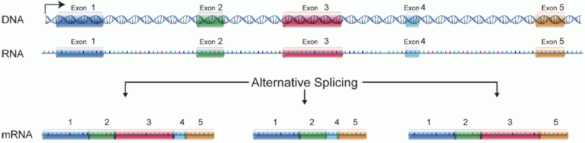
RNA分子を生成するには、まずDNAの一部がmRNAに転写されます。 その後、イントロン領域が除去され、エクソン領域が異なる遺伝子アイソフォームへと組み合わされます。
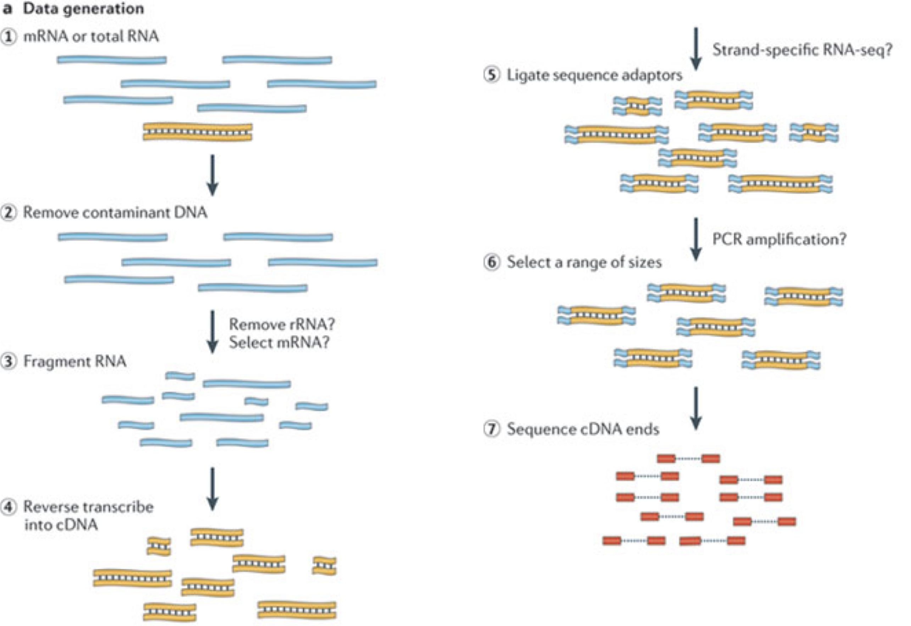
（図はMartin & Wang (2011)の研究を基に改変しています）
一般的なRNA-seq実験では、まず対象サンプルからRNA分子を採取します。 次に、ポリA尾部を持つ分子（主にmRNA）を選択的に濃縮するか、あるいは豊富に存在するリボソームRNAを減少させた後、残ったRNA分子を小さな断片に分解します（分子全体を対象とするロングリード法も存在しますが、本講義の主眼ではありません）。 重要な点として、スプライシングによってイントロン配列が除去されるため、RNA分子（ひいては生成される断片）は、ゲノムの連続した領域に対応しない場合があります。 これらのRNA断片は逆転写されてcDNAに変換され、その後各末端にシーケンシングアダプターが付加されます。 これらのアダプターにより、断片はフローセルに結合することが可能になります。 結合後、各断片は大量に増幅され、フローセル上に同一配列のクラスターが形成されます。 シーケンサーは、各クラスターのcDNA断片について、片方の末端から最初の50～200塩基の配列を決定します。これが1つの__リード__に相当します。 多くのデータセットでは、いわゆるペアエンド法が採用されており、断片は両端から読み取られます。 実験では数百万ものこのようなリード（あるいはリードペア）が生成され、これらは（ペアの）FASTQファイルに記録されます。 各リードはこのようなファイル内で4行連続で表現されます：まず固有のリード識別子を示す行、次に推定されたリード配列、続いて別の識別子行、そして最後に各推定塩基の塩基品質値を含む行があり、これは対応する位置の塩基が正しく同定された確率を示しています。
課題：隣の席の方と以下の点について話し合ってください
- 断片の片方のみをシーケンスする場合と比較して、ペアエンドプロトコルにはどのような利点と欠点が考えられますか？
- リード配列を含むFASTQファイルに対して実施すると有用な品質評価手法として、どのようなものが考えられますか？
実験設計における重要な考慮事項
データ収集を開始する前に、実験設計について十分に検討する時間を設けることが極めて重要です。 実験設計とは、適切な種類のデータを十分な量確保し、関心のある研究課題を可能な限り効率的に解決するための実験構成を計画するプロセスを指します。 考慮すべき重要な要素として、どの条件やサンプル群を対象とするか、必要な複製数をどの程度とするか、実際のデータ収集をどのように計画するかなどが挙げられます。 多くのハイスループット生物学実験（RNA-seqを含む）は環境条件の影響を受けやすく、異なる日に、異なる分析者によって、異なる研究機関で、あるいは異なる試薬ロットを用いて実施された測定結果を直接比較することは困難です。 このため、実験を適切に設計し、一次効果と二次効果といった異なる種類の影響を分離可能にすることが極めて重要となります。
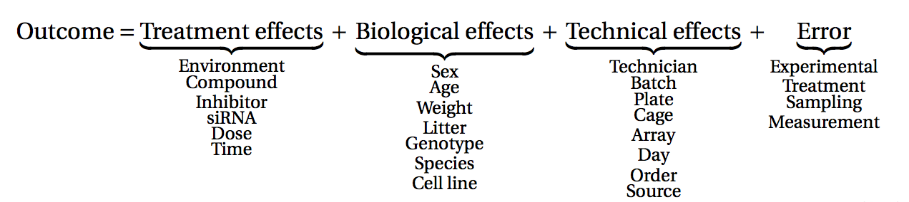
（図はLazic (2017)より引用）
課題：隣の人と話し合ってみましょう
- 複製実験を行うことがなぜ重要なのでしょうか？
統計学的な観点から見ると、すべての複製データが同等に有用であるとは限りません。複製データを分類する一般的な方法として、「生物学的複製」と「技術的複製」の2種類があります。 後者は通常、測定機器の再現性を検証するために用いられ、一方生物学的複製は、研究対象集団内の異なるサンプル間の変動性に関する情報を提供します。 もう1つの分類体系では、複製単位を「生物学的」「実験的」「観察的」の3つに分類します。 この場合、「生物学的単位」とは、我々が推論を行いたい対象実体（例えば動物や人間）を指します。 治療効果について一般的な結論を導くためには、生物学的単位の複製が必須です。単一のマウスを調査しただけでは、マウス集団に対する薬剤の効果について確定的な結論を導き出すことはできません。 「実験的単位」とは、測定対象を_独立して治療群に割り当て可能な最小の実体_を意味します（例：動物個体、仔の群れ、ケージ、ウェルなど）。 真の意味での複製と認められるのは、実験的単位の複製のみです。 最後に、「観察的単位」とは、実際に測定が行われる対象実体を指します。
実験デザインが研究課題に対する回答能力に与える影響を検証するため、ConfoundingExplorerパッケージで提供されているインタラクティブなアプリケーションを使用します。
課題
「ConfoundingExplorer」アプリケーションを起動し、インターフェースの操作に慣れてください。
課題
- バランスの取れた設計（各バッチ内で2つのグループの複製数が均等に分布している場合）において、バッチ効果の強度を増大させた場合、どのような影響が生じるでしょうか？バッチ効果の補正を行うかどうかによって結果に違いは生じるのでしょうか？
- サンプル数が不均衡な設計（特定のグループのすべてまたはほとんどの複製が同一バッチから採取されている場合）において、バッチ効果の影響度を高めた場合、どのような影響が生じるでしょうか？また、バッチ効果を考慮するか否かによって結果に差異が生じるのでしょうか？
RNA-seqデータの定量化：リードからカウント行列への変換プロセス
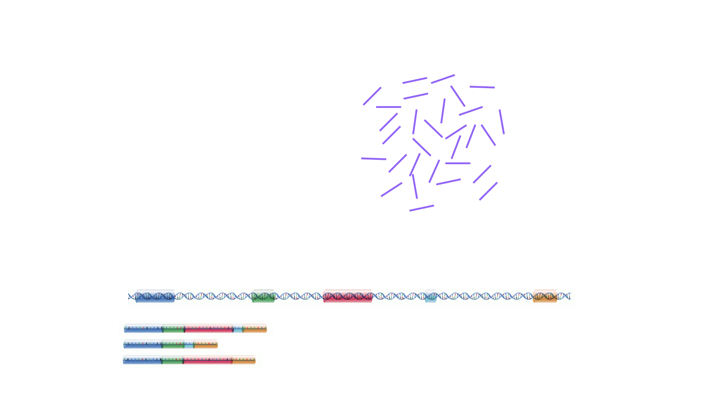
シーケンサーから得られるFASTQファイルに含まれるリード配列は、通常そのままでは直接的な利用価値がありません。なぜなら、各リードが具体的にどの遺伝子または転写産物に由来するかという情報が欠落しているからです。 そのため、最初の処理ステップとして各リードの起源位置を特定し、これを基に遺伝子単位（あるいは個々の転写産物などの特徴単位）ごとのリード数を推定する作業が必要となります。 この推定値は、遺伝子の存在量（または発現レベル）の代理指標として用いることができます。 RNA定量化のためのパイプラインには多様な手法が存在しますが、最も一般的なアプローチは主に以下の3種類に分類されます：
リード配列をゲノムにアライメントし、各遺伝子のエクソン領域にマッピングされたリード数をカウントする方法 これは最もシンプルな手法の一つです。トランスクリプトームのアノテーションが不十分な種に対しては、この方法が特に適しています。 具体例：GRCm39ゲノムに対する
STARアライメントとRsubreadを用いたfeatureCountsによる定量リード配列をトランスクリプトームにアライメントし、転写産物の発現量を定量化した後、それらを遺伝子レベルの発現量に集約する方法 この手法は高精度な定量結果を得られることが知られており（独立したベンチマーク研究参照）、 特にDNA汚染のない高品質なサンプルにおいて有効です。 具体例：GENCODE GRCh38トランスクリプトームを用いた
rsem-calculate-expression --starによるRSEM定量とtximportによる処理リード配列をトランスクリプトームに対して擬似アライメントし、同時に対応するゲノム配列をデコイとして用いることで、転写産物の発現量を定量化する方法 この手法の利点は、計算効率の高さ、DNA汚染の影響軽減、およびGCバイアス補正が可能な点にあります 具体例：
salmon quant --gcBiasとtximportを組み合わせた手法
一般的なシーケンシングリード深度においては、遺伝子発現量の定量化は転写産物レベルの定量化よりも精度が高い場合が多いです。 ただし、差異遺伝子発現解析においては、転写産物レベルの定量結果も併用することで 解析精度を向上させることが可能です。
RNA-seq定量化に用いられるその他のツールとしては、TopHat2、bowtie2、kallisto、HTseqなどが挙げられます。
適切なRNA-seq定量化手法の選択は、トランスクリプトームアノテーションの品質、RNA-seqライブラリ調製の質、混入配列の有無など、多くの要因に依存します。 多くの場合、複数の手法で得られた定量結果を比較することが有益な情報をもたらします。
最適な定量化手法は種や実験条件によって異なる上、多くの場合大規模な計算リソースを必要とするため、本ワークショップでは具体的なカウント生成方法の詳細には触れません。 代わりに、上記の参考文献を参照するか、必要に応じて地域のバイオインフォマティクス専門家に相談することをお勧めします。
課題：以下の内容について隣席の方と議論してください
- 提示されたRNA-Seq定量解析ツールのうち、ご存知のものはありますか？各手法の長所と短所について他にご存知の情報はありますか？
- ご自身でRNA-Seq実験を実施した経験はありますか？実施された場合、どの定量解析ツールを使用され、なぜそのツールを選択したのか理由もお聞かせください。
- 定量解析に使用できる特定のツール／地域のバイオインフォマティクス専門家／計算リソースへのアクセスはありますか？もし利用できない場合、どのようにアクセスを確保できると思いますか？
参照配列を見つけるには
RNA-seqデータから既知の遺伝子または転写産物の存在量を定量化するためには、これらの特徴量の配列情報を提供する参照データベースが必要です。この参照配列と読み取ったリードを比較することで、正確な定量が可能になります。 この情報は様々なオンラインリポジトリから取得できます。 特定のプロジェクトで使用する参照データベースは1つに限定し、異なる情報源からの情報を混在させないことが強く推奨されます。 選択した定量化ツールの種類によって、必要となる参照情報の形式が異なります。 ゲノム配列にリードをアラインさせ、既知のアノテーション済み特徴量との重複領域を解析する場合、完全なゲノム配列（fasta形式ファイル）と、各アノテーション済み特徴量のゲノム上の位置情報を記載したファイル（通常はgtf形式ファイル）が必要となります。 一方、トランスクリプトームにリードをマッピングする場合は、各転写産物の配列情報を含むファイル（こちらもfasta形式ファイル）が必要になります。
- マウスまたはヒトサンプルを扱う場合、GENCODEプロジェクトが提供する十分に整備された参照ファイルが利用可能です。
- Ensemblでは、植物や真菌を含む広範な生物種の参照ファイルを提供しています。
- UCSCも多くの生物種に対する参照ファイルを提供しています。
課題
GENCODE から最新のマウストランスクリプトーム FASTA
ファイルをダウンロードしてください。各エントリーはどのような形式になっていますか？
ヒント：R でこのファイルを読み込むには、Biostrings
パッケージの readDNAStringSet()
関数の使用を検討してください。
本ワークショップではどのような方向性を目指していくのでしょうか？
今後2日間にわたり、Bioconductorを用いた差異的発現解析の実施方法とその結果の解釈方法について議論と実践を行います。 まずはカウント行列を出発点とし、遺伝子発現の初期品質評価と定量化は既に完了していることを前提とします。 差異的発現解析の結果は通常、MAプロットやヒートマップなどの視覚的表現を用いて表示されます（以下に具体例を示します）。
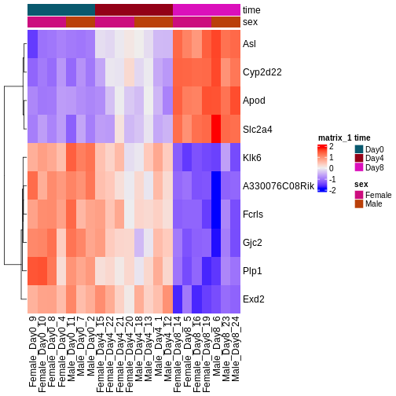
次回以降のセッションでは、特にこれらのプロットの生成方法と解釈方法について学びます。 また、上位にランクされた遺伝子間に機能的な関連性があるかどうかを調べるためのフォローアップ解析（いわゆる遺伝子セット解析/エンリッチメント解析）を実施するのが一般的であり、このテーマについても後のセッションで詳しく解説します。
- RNA-seqは、特定の時点における細胞または組織内で発現しているRNA分子の量を測定する技術です。
- RNA-seq実験を計画する際には、多くの重要な選択事項があります。例えば、ポリA選択法を採用するかリボソーム除去法を適用するか、ストランド特異的プロトコルを使用するか非ストランド特異的プロトコルを採用するか、リードをシングルエンドで配列決定するかペアエンドで配列決定するかなどです。これらの選択はいずれも、データ処理および解釈に重大な影響を及ぼします。
- RNA-seqデータの定量化には複数の手法が存在します。代表的な方法としては、リードをゲノム配列にアラインメントし、遺伝子領域にオーバーラップするリード数をカウントする手法があります。また、別の手法ではリードをトランスクリプトームにマッピングし、確率的アプローチを用いて各遺伝子または転写産物の存在量を推定します。
- アノテーション済み遺伝子に関する情報は、Ensembl、UCSC、GENCODEなどの複数の情報源から取得可能です。
Content from RStudioプロジェクトと実験データ
Last updated on 2025-09-23 | Edit this page
Estimated time 30 minutes
Overview
Questions
- RStudioプロジェクトを使用して分析プロジェクトを管理するにはどうすればよいですか？
- 分析プロジェクトのためのディレクトリを効果的に整理する方法は？
- インターネットからデータセットをダウンロードして、ファイルとして保存する方法。
Objectives
- RStudioプロジェクトを作成し、分析プロジェクトに関連するファイルを保存するためのディレクトリを作成します。
- 次のエピソードで使用するデータセットをダウンロードします。
イントロダクション
通常、分析プロジェクトは、データセットファイル、いくつかのRスクリプト、そして出力ファイルが含まれたディレクトリから始まります。
プロジェクトが進むにつれ、より多くのスクリプト、出力ファイルおよびおそらく新しいデータセットの追加により、複雑さは避けられません。
複数のバージョンのスクリプトや出力ファイルを扱う際には、複雑さがさらに増すため、効率的な組織が必要です。
これらが最初からうまく管理されていないと、プロジェクトを休止した後に再開することや、プロジェクトを他の人と共有することは困難かつ時間を要します。
さらに、適切な整理がなければ、プロジェクトの複雑さが頻繁にsetwd関数を使用して異なる作業ディレクトリ間を切り替えることにつながり、無秩序な作業スペースが生じます。
このレッスンでは、最初にデータ分析プロジェクトで使用し生成されたファイルを、_作業ディレクトリ_内で管理するための効果的な戦略に焦点を当てます。
作業ディレクトリとは何ですか？
Rにおける作業ディレクトリは、Rがファイルを読み込んだり保存したりするために探すコンピュータ上のデフォルトの場所です。 詳細は、私たちの データ分析のためのRとBioconductorの紹介 レッスンにあります。
次に、RStudioに組み込まれた分析プロジェクトを管理するための機能であるRStudioプロジェクトを活用する方法を学びます。
RStudioとは何ですか？
RStudioは、科学者やソフトウェア開発者によって広く使われる無料の統合開発環境（IDE）で、ソフトウェアの開発やデータセットの分析に使用されます。 RStudioまたはその一般的な使用に関する支援が必要な場合は、私たちの データ分析のためのRとBioconductorの紹介 レッスンをご参照ください。
最後に、このレッスンでは、次のエピソードのためのデータをダウンロードするためにR関数download.fileを使用する方法も学びます。
作業ディレクトリの構造
より効率的なワークフローのために、分析に関連付けられたすべてのファイルを特定のディレクトリに保存することをお勧めします。これは、プロジェクトの作業ディレクトリとして機能します。 最初に、この作業ディレクトリには4つの異なるディレクトリが含まれている必要があります：
-
data: 生のデータを格納するために専用。 このフォルダには、生データだけを保存し、データセットが新たに受信されるまで修正しないのが理想的です（それでも、ストレージ容量があれば、将来また必要になる可能性があるため、以前のデータセットも保持することをお勧めします）。 RNA-seqデータ分析の場合、このディレクトリには通常、*.fastqファイルや実験に関連するメタデータファイルが含まれます。 -
scripts: データ分析のために作成したRスクリプトを保存するため。 -
documents: 分析に関連する文書を保存するため。 原稿のアウトラインやチームとのミーティングノートなど。 -
output:scriptsディレクトリ内のRスクリプトによって生成された中間または最終結果を保存するため。 重要なことは、データクリーニングまたは前処理を行う場合、出力はこのディレクトリに保存されるべきであり、これによりもはや生データとは見なされません。
プロジェクトが複雑になるにつれ、追加のディレクトリまたはサブディレクトリを作成する必要があるかもしれません。 それでも、上記の4つのディレクトリは作業ディレクトリの基盤として機能するべきです。
次のエピソードのためのディレクトリを作成する
このエピソードとレッスンの残りの部分のために作業ディレクトリとするために、コンピュータ上にディレクトリを作成します（ワークショップの例ではbio_rnaseqという名前のディレクトリを使用します）。
次に、この選択したディレクトリ内に、前述の4つの基本的なディレクトリ（data、scripts、documents、およびoutput）を作成します。
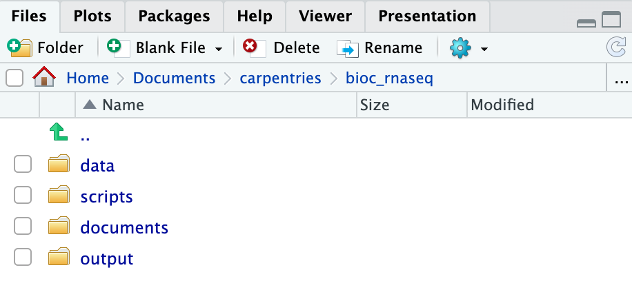
RStudioプロジェクトを使用して作業ディレクトリを管理する
前述の通り、RStudioプロジェクトは、分析プロジェクトを管理するためにRStudioに組み込まれた機能です。
それは、プロジェクト特有の設定を作業ディレクトリ内に保存された.Rprojファイルに保存することで実現します。
.Rprojファイルを直接開くか、RStudioのプロジェクトを開くオプションを通じてこれらの設定をRStudioにロードすると、Rの作業ディレクトリが.Rprojファイルの場所、すなわちプロジェクトの作業ディレクトリに自動的に設定されます。
RStudioプロジェクトを作成するには：
- RStudioを開始します。
- メニューバーに移動し、
File>New Project...を選択します。 -
Existing Directoryを選択します。 -
Browse...ボタンをクリックし、分析のために以前選択した作業ディレクトリを選択します（つまり、4つの必須ディレクトリが存在するディレクトリ）。 - ウィンドウの右下にある
Create Projectをクリックします。
上記のステップを完了すると、プロジェクトの作業ディレクトリ内に.Rprojファイルが見つかります。
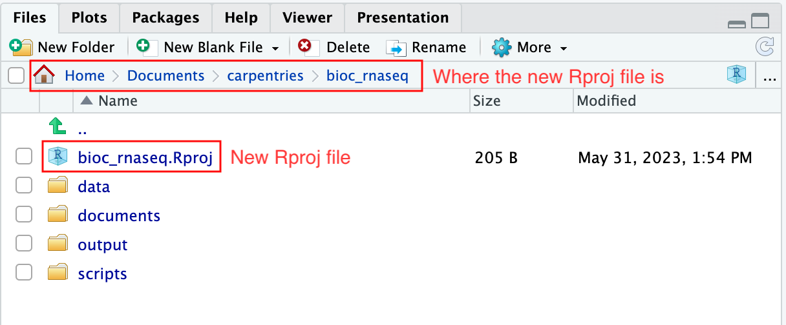
さらに、RStudioコンソールのヘッディングには、.Rprojファイルの存在するプロジェクトの作業ディレクトリの絶対パスが表示されます。RStudioがこのディレクトリをRの作業ディレクトリとして設定したことを示しています。
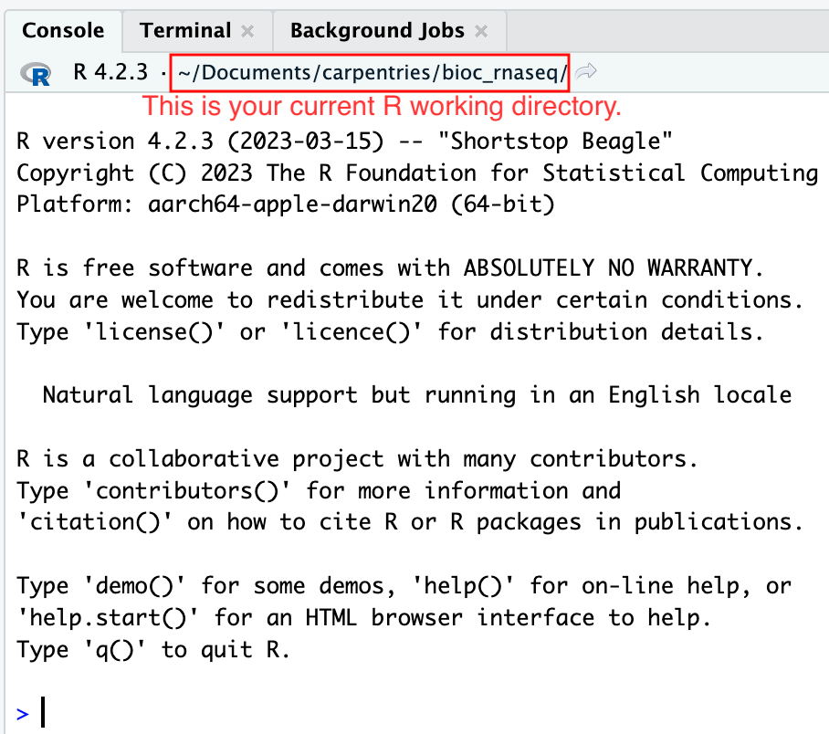
この時点から、読み込むデータがファイルから、またはファイルにデータを保存するRコードを実行すると、それはデフォルトでプロジェクトの作業ディレクトリに相対するパスに向けられます。
プロジェクトを閉じる場合、別のプロジェクトを開くため、新しいプロジェクトを作成するため、またはプロジェクトを一時的に休むためには、メニューバーにあるFile
> Close Projectオプションを使用します。
プロジェクトを再度開くには、作業ディレクトリ内の.Rprojファイルをダブルクリックするか、RStudioを開いてメニューバーのFile
> Open Projectオプションを使用します。
次のエピソードのためにRNA-seqデータをダウンロードする
最後に、私たちは次のエピソードのために必要なRNA-seqデータをダウンロードするためのRの使用方法を学びます。 使用するデータセットは、上気道感染がマウスの小脳および脊髄におけるRNA転写の変化に与える影響を調査するために生成されました。 このデータセットは、次の研究の一部として作成されました：
Blackmore、Stephenら。“インフルエンザ感染は、実験的自己免疫脳脊髄炎の遺伝子モデルにおいて疾患を引き起こします。” 国立科学アカデミー紀要114.30 (2017): E6107-E6116。
データセットはGene Expression Omnibus (GEO)で利用可能で、アクセッション番号はGSE96870です。 GEOからデータをダウンロードすることは簡単ではなく（このレッスンでは扱われません）。 そのため、アクセスが簡単なようにデータをGitHubリポジトリに公表しました。
ファイルをダウンロードするために、私たちはR関数download.fileを使用します。この関数は少なくとも2つのパラメータを必要とします：urlとdestfile。
urlパラメータは、データをダウンロードするためのインターネット上のアドレスを指定するために使用されます。
destfileパラメータは、ダウンロードしたファイルをどこに保存するか、そしてダウンロードしたファイルにどのように名前を付けるかを示します。
このレッスンの残りの部分で必要な4つのデータファイルのうちの1つをダウンロードしてみましょう。
データファイルは https://github.com/carpentries-incubator/bioc-rnaseq/raw/refs/heads/main/episodes/data/GSE96870_counts_cerebellum.csv
にあります。
ダウンロードしたファイルを作業ディレクトリのdataフォルダにGSE96870_counts_cerebellum.csvという名前で保存します。
R
download.file(
url = "https://github.com/carpentries-incubator/bioc-rnaseq/raw/refs/heads/main/episodes/data/GSE96870_counts_cerebellum.csv",
destfile = "data/GSE96870_counts_cerebellum.csv"
)
作業ディレクトリのdataフォルダに移動すると、GSE96870_counts_cerebellum.csvという名前のファイルが見つかるはずです。
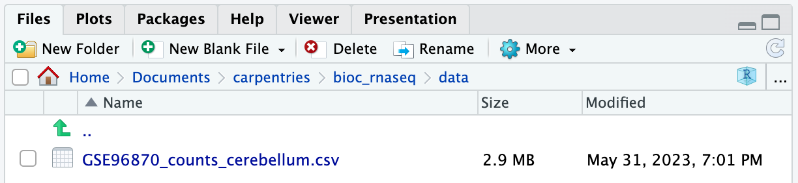
残りのデータセットファイルをダウンロードする
このレッスンの残りの部分に必要なデータセットファイルがあと3つあります。
| URL | ファイル名 |
|---|---|
| https://github.com/carpentries-incubator/bioc-rnaseq/raw/refs/heads/main/episodes/data/GSE96870_coldata_cerebellum.csv | GSE96870_coldata_cerebellum.csv |
| https://github.com/carpentries-incubator/bioc-rnaseq/raw/refs/heads/main/episodes/data/GSE96870_coldata_all.csv | GSE96870_coldata_all.csv |
| https://github.com/carpentries-incubator/bioc-rnaseq/raw/refs/heads/main/episodes/data/GSE96870_rowranges.tsv | GSE96870_rowranges.tsv |
download.file関数を使用して、作業ディレクトリのdataフォルダにファイルをダウンロードします。
R
download.file(
url = "https://github.com/carpentries-incubator/bioc-rnaseq/raw/refs/heads/main/episodes/data/GSE96870_coldata_cerebellum.csv",
destfile = "data/GSE96870_coldata_cerebellum.csv"
)
download.file(
url = "https://github.com/carpentries-incubator/bioc-rnaseq/raw/refs/heads/main/episodes/data/GSE96870_coldata_all.csv",
destfile = "data/GSE96870_coldata_all.csv"
)
download.file(
url = "https://github.com/carpentries-incubator/bioc-rnaseq/raw/refs/heads/main/episodes/data/GSE96870_rowranges.tsv",
destfile = "data/GSE96870_rowranges.tsv"
)
- プロジェクトに必要なファイルを作業ディレクトリに適切に整理することは、秩序を維持し、将来のアクセスを容易にするために重要です。
- RStudioプロジェクトは、プロジェクトの作業ディレクトリを管理し、分析を促進するための貴重なツールとして機能します。
- Rにおける
download.file関数は、インターネットからデータセットをダウンロードするために使用できます。
Content from Rに量的データをインポートしてアノテーションを付ける
Last updated on 2025-09-23 | Edit this page
Estimated time 120 minutes
Overview
Questions
- 量的遺伝子発現データをRで下流の統計分析に適したオブジェクトにインポートするにはどうすればよいですか？
- 通常使用される遺伝子識別子の種類は何ですか？ それらのマッピングはどのように行われますか？
Objectives
- 量的データをSummarizedExperimentオブジェクトにインポートする方法を学びます。
- オブジェクトに追加の遺伝子アノテーションを追加する方法を学びます。
パッケージを読み込む
このエピソードでは、アドオンRパッケージの関数をいくつか使用します。
それらを使用するためには、libraryから読み込む必要があります。
R
suppressPackageStartupMessages({
library(AnnotationDbi)
library(org.Mm.eg.db)
library(hgu95av2.db)
library(SummarizedExperiment)
})
there is no package called 'XXXX'というエラーメッセージが表示された場合、これはこのバージョンのRに対して、パッケージがまだインストールされていないことを意味します。このワークショップに必要なすべてのパッケージをインストールするには、Summary
and Setupの下部を参照してください。
インストールする必要がある場合は、上記のlibraryコマンドを再実行してそれらを読み込むことを忘れないでください。
データを読み込む
前回のエピソードでは、Rを使用してインターネットから4つのファイルをダウンロードし、それらをコンピュータに保存しました。 しかし、これらのファイルはまだRに読み込まれていないため、作業することができません。 Blackmore et al. 2017の元の実験デザインはかなり複雑でした。8週齢のオスとメスのC57BL/6マウスは、インフルエンザ感染前の0日目、感染後の4日目および8日目に収集されました。 各マウスからは、小脳と脊髄の組織がRNA-seq用に取り出されました。 元々は「性別 x 時間 x 組織」群御に4匹のマウスがいましたが、途中でいくつかが失われ、合計で45のサンプルに至りました。 このワークショップでは、分析を簡素化するために22の小脳サンプルのみを使用します。 発現の定量化は、STARを使用してマウスのゲノムにアライメントを行い、その後、遺伝子にマッピングされるリードの数を数えることを通じて行われました。 各遺伝子ごとのサンプルあたりのカウントに加えて、どのサンプルがどの性別/時間点/複製に属するかの情報も必要です。 遺伝子に関しては、アノテーションと呼ばれる追加の情報があると便利です。 前回ダウンロードしたデータファイルを読み込み、探索し始めましょう：
カウント
R
counts <- read.csv("data/GSE96870_counts_cerebellum.csv",
row.names = 1)
dim(counts)
OUTPUT
[1] 41786 22R
# View(counts)
遺伝子は行に、サンプルは列に含まれています。したがって、41,786の遺伝子と22のサンプルのカウントがあります。
View()コマンドはウェブサイト用にコメントアウトされていますが、実行するとRStudioでデータを確認したり、特定の列でテーブルを並べ替えたりできます。
ただし、ビューワはcountsオブジェクト内部のデータを変更できないため、見るだけで、永久に並べ替えたり編集したりすることはできません。
終了したら、タブのXを使ってビューワを閉じます。
行名は遺伝子シンボルであり、列名はGEOのサンプルIDであるようです。これは、私たちがどのサンプルが何かを教えてくれないため、あまり有益ではありません。
サンプルのアノテーション
次に、サンプルのアノテーションを読み込みます。
カウント行列の列にはサンプルが含まれているため、オブジェクトにcoldataという名前を付けます：
R
coldata <- read.csv("data/GSE96870_coldata_cerebellum.csv",
row.names = 1)
dim(coldata)
OUTPUT
[1] 22 10R
# View(coldata)
今、サンプルが行にあり、GEOサンプルIDが行名として付いています。そして、私たちには10列の情報があります。
このワークショップで最も便利な列は、geo_accession（再度、GEOサンプルID）、sex、およびtimeです。
遺伝子のアノテーション
カウントには遺伝子シンボルしかありませんが、それは短くて人間の脳にとってはある程度認識可能ですが、実際に測定された遺伝子の正確な同定子としてはあまり利便性がありません。
そのため、著者によって提供された追加の遺伝子アノテーションが必要です。
countおよびcoldataファイルはカンマ区切り値（.csv）形式でしたが、遺伝子アノテーションファイルにはそれが使用できません。なぜなら、説明には、カンマを含む可能性があるため、.csvファイルを正しく読み込むのを妨げるからです。
その代わりに、遺伝子アノテーションファイルはタブ区切り値（.tsv）形式です。
同様に、説明には単一引用符'（例：5’）が含まれる可能性があり、Rはデフォルトでこれを文字列として扱うためです。
そのため、データがタブ区切りであることを指定するために、より一般的な関数read.delim()に追加の引数を使用する必要があります（sep = "\t"）で、引用符は使用しない（quote = ""）。
さらに、最初の行に列名が含まれていることを指定するためにその他の引数を追加し（header = TRUE）、行名として指定される遺伝子シンボルは5列目（row.names = 5）であること、NCBIの種特異的遺伝子ID（すなわちENTREZID）は、数字のように見えるが文字列として読み込む（colClasses引数）必要があることを指定します。
使用可能な引数に関する詳細については、関数名の先頭にクエスチョンマークを入力することで確認できます。
(例：?read.delim)
R
rowranges <- read.delim("data/GSE96870_rowranges.tsv",
sep = "\t",
colClasses = c(ENTREZID = "character"),
header = TRUE,
quote = "",
row.names = 5)
dim(rowranges)
OUTPUT
[1] 41786 7R
# View(rowranges)
41,786の遺伝子ごとに、seqnames（例えば、染色体数）、startおよびend位置、strand、ENTREZID、遺伝子産物説明（product）および特徴タイプ（gbkey）があります。
これらの遺伝子レベルのメタデータは、下流分析に役立ちます。
たとえば、gbkey列から、どのような種類の遺伝子があり、それらがデータセットにどのくらい含まれているかを確認できます：
R
table(rowranges$gbkey)
OUTPUT
C_region D_segment exon J_segment misc_RNA
20 23 4008 94 1988
mRNA ncRNA precursor_RNA rRNA tRNA
21198 12285 1187 35 413
V_segment
535 チャレンジ: 以下のポイントを隣の人と話し合ってください。
-
counts、coldata、rowrangesの3つのオブジェクトは、行および列に関してどのように関連していますか？ - mRNA遺伝子のみを分析したい場合、一般的にはどのようにしてそれらだけを保持しますか？（正確なコードではない）
- 最初の2つのサンプルが外れ値であると印象付ける場合、それらを削除するにはどうすればよいですか？（一般的には、正確なコードではない）
-
countsでは、行は遺伝子であり、rowrangesの行と同じです。countsの列はサンプルですが、これはcoldataの行に対応します。 -
countsの行をmRNA遺伝子に限定し、rowrangesの行もそのようにしなければなりません。 -
countsの列とcoldataの行で、最初の2つのサンプルを除外するために両方の行をサブセットする必要があります。
関連情報を別のオブジェクトに保持することで、カウント、遺伝子のアノテーション、サンプルのアノテーションの間で不一致が発生する可能性があります。
これが、BioconductorがSummarizedExperimentという特殊なS4クラスを作成した理由です。
SummarizedExperimentの詳細は、bioc-introワークショップの最後で詳しく説明されています。
リマインダーとして、SummarizedExperimentクラスの構造を表す図を見てみましょう：

これは、任意の種類の定量的なオミクスデータ（assays）と、それにリンクされたサンプルアノテーション（colData）、および（遺伝子）特徴アノテーション（rowRanges）または染色体、開始および終了位置を持たない（rowData）形式で保持されるように設計されています。
これらの3つのテーブルが（正しく）リンクされると、サンプルや特徴の部分集合がassay、colData、rowRangesの正しい部分集合に変わります。
さらに、ほとんどのBioconductorパッケージは同じコアデータインフラストラクチャに基づいて構築されているため、SummarizedExperimentオブジェクトを認識し、操作することができます。
さらに、ほとんどのBioconductorパッケージは同じコアデータインフラストラクチャの周りに構築されているため、SummarizedExperimentオブジェクトを認識し、操作できるようになります。
最も人気のある2つのRNA-seq統計分析パッケージは、統計結果用に追加のスロットがあるSummarizedExperimentに類似した独自の拡張S4クラスを持っています：DESeq2のDESeqDataSetおよびedgeRのDGEListです。
統計分析に使用するものが何であれ、データをSummarizedExperimentに入れることから始めることができます。
SummarizedExperimentを組み立てる
これらのオブジェクトからSummarizedExperimentを作成します。
-
countオブジェクトはassaysスロットに保存されます。 - サンプル情報を持つ
coldataオブジェクトは、colDataスロットに保存されます（サンプルメタデータ） - 遺伝子を記述する
rowrangesオブジェクトは、rowRangesスロットに保存されます（特徴メタデータ）
それらを組み合わせる前に、サンプルと遺伝子が同じ順序であることを絶対に確認する必要があります！
countとcoldataが同じ数のサンプルを持っていること、またcountとrowrangesが同じ数の遺伝子を持っていることはわかりましたが、同じ順序になっているかどうかを明示的に確認することはしていませんでした。
確認する簡単な方法：
R
all.equal(colnames(counts), rownames(coldata)) # samples
OUTPUT
[1] TRUER
all.equal(rownames(counts), rownames(rowranges)) # genes
OUTPUT
[1] TRUER
# 最初がTRUEでない場合は、このようにしてカウントのサンプル/列をコレクトします（これは最初がTRUEでも実行しても構いません）：
tempindex <- match(colnames(counts), rownames(coldata))
coldata <- coldata[tempindex, ]
# 再確認します:
all.equal(colnames(counts), rownames(coldata))
OUTPUT
[1] TRUEChallenge
アッセイ（例：counts）および遺伝子アノテーションテーブル（例：rowranges）内の特徴（すなわち遺伝子）が異なる場合、これらをどのように修正できますか？
コードを記述してください。
R
tempindex <- match(rownames(counts), rownames(rowranges))
rowranges <- rowranges[tempindex, ]
all.equal(rownames(counts), rownames(rowranges))
サンプルと遺伝子が同じ順序になっていることを確認したら、SummarizedExperimentオブジェクトを作成します。
R
# 最後の確認:
stopifnot(rownames(rowranges) == rownames(counts), # features
rownames(coldata) == colnames(counts)) # samples
se <- SummarizedExperiment(
assays = list(counts = as.matrix(counts)),
rowRanges = as(rowranges, "GRanges"),
colData = coldata
)
遺伝子とサンプルが一致していることが非常に重要であるため、SummarizedExperiment()コンストラクタは内部で一致する遺伝子/サンプル数とサンプル/行名が一致することをチェックします。
そうでない場合、いくつかのエラーメッセージが表示されます：
R
# サンプル数の誤り:
bad1 <- SummarizedExperiment(
assays = list(counts = as.matrix(counts)),
rowRanges = as(rowranges, "GRanges"),
colData = coldata[1:3,]
)
ERROR
Error in validObject(.Object): invalid class "SummarizedExperiment" object:
nb of cols in 'assay' (22) must equal nb of rows in 'colData' (3)R
# 同じ数の遺伝子ですが異なる順序:
bad2 <- SummarizedExperiment(
assays = list(counts = as.matrix(counts)),
rowRanges = as(rowranges[c(2:nrow(rowranges), 1),], "GRanges"),
colData = coldata
)
ERROR
Error in SummarizedExperiment(assays = list(counts = as.matrix(counts)), : the rownames and colnames of the supplied assay(s) must be NULL or identical
to those of the RangedSummarizedExperiment object (or derivative) to
constructSummarizedExperimentのさまざまなデータスロットにアクセスする方法と、いくつかの操作を行う方法の簡単な概要：
R
# カウントにアクセス
head(assay(se))
OUTPUT
GSM2545336 GSM2545337 GSM2545338 GSM2545339 GSM2545340 GSM2545341
Xkr4 1891 2410 2159 1980 1977 1945
LOC105243853 0 0 1 4 0 0
LOC105242387 204 121 110 120 172 173
LOC105242467 12 5 5 5 2 6
Rp1 2 2 0 3 2 1
Sox17 251 239 218 220 261 232
GSM2545342 GSM2545343 GSM2545344 GSM2545345 GSM2545346 GSM2545347
Xkr4 1757 2235 1779 1528 1644 1585
LOC105243853 1 3 3 0 1 3
LOC105242387 177 130 131 160 180 176
LOC105242467 3 2 2 2 1 2
Rp1 3 1 1 2 2 2
Sox17 179 296 233 271 205 230
GSM2545348 GSM2545349 GSM2545350 GSM2545351 GSM2545352 GSM2545353
Xkr4 2275 1881 2584 1837 1890 1910
LOC105243853 1 0 0 1 1 0
LOC105242387 161 154 124 221 272 214
LOC105242467 2 4 7 1 3 1
Rp1 3 6 5 3 5 1
Sox17 302 286 325 201 267 322
GSM2545354 GSM2545362 GSM2545363 GSM2545380
Xkr4 1771 2315 1645 1723
LOC105243853 0 1 0 1
LOC105242387 124 189 223 251
LOC105242467 4 2 1 4
Rp1 3 3 1 0
Sox17 273 197 310 246R
dim(assay(se))
OUTPUT
[1] 41786 22R
# 上記は、私たちが今持っているのが1つのアッセイ、"counts"のために機能しています。
# しかし、アッセイが複数ある場合は、指定する必要があります。
# 例えば、
head(assay(se, "counts"))
OUTPUT
GSM2545336 GSM2545337 GSM2545338 GSM2545339 GSM2545340 GSM2545341
Xkr4 1891 2410 2159 1980 1977 1945
LOC105243853 0 0 1 4 0 0
LOC105242387 204 121 110 120 172 173
LOC105242467 12 5 5 5 2 6
Rp1 2 2 0 3 2 1
Sox17 251 239 218 220 261 232
GSM2545342 GSM2545343 GSM2545344 GSM2545345 GSM2545346 GSM2545347
Xkr4 1757 2235 1779 1528 1644 1585
LOC105243853 1 3 3 0 1 3
LOC105242387 177 130 131 160 180 176
LOC105242467 3 2 2 2 1 2
Rp1 3 1 1 2 2 2
Sox17 179 296 233 271 205 230
GSM2545348 GSM2545349 GSM2545350 GSM2545351 GSM2545352 GSM2545353
Xkr4 2275 1881 2584 1837 1890 1910
LOC105243853 1 0 0 1 1 0
LOC105242387 161 154 124 221 272 214
LOC105242467 2 4 7 1 3 1
Rp1 3 6 5 3 5 1
Sox17 302 286 325 201 267 322
GSM2545354 GSM2545362 GSM2545363 GSM2545380
Xkr4 1771 2315 1645 1723
LOC105243853 0 1 0 1
LOC105242387 124 189 223 251
LOC105242467 4 2 1 4
Rp1 3 3 1 0
Sox17 273 197 310 246R
# サンプルアノテーションにアクセス
colData(se)
OUTPUT
DataFrame with 22 rows and 10 columns
title geo_accession organism age sex
<character> <character> <character> <character> <character>
GSM2545336 CNS_RNA-seq_10C GSM2545336 Mus musculus 8 weeks Female
GSM2545337 CNS_RNA-seq_11C GSM2545337 Mus musculus 8 weeks Female
GSM2545338 CNS_RNA-seq_12C GSM2545338 Mus musculus 8 weeks Female
GSM2545339 CNS_RNA-seq_13C GSM2545339 Mus musculus 8 weeks Female
GSM2545340 CNS_RNA-seq_14C GSM2545340 Mus musculus 8 weeks Male
... ... ... ... ... ...
GSM2545353 CNS_RNA-seq_3C GSM2545353 Mus musculus 8 weeks Female
GSM2545354 CNS_RNA-seq_4C GSM2545354 Mus musculus 8 weeks Male
GSM2545362 CNS_RNA-seq_5C GSM2545362 Mus musculus 8 weeks Female
GSM2545363 CNS_RNA-seq_6C GSM2545363 Mus musculus 8 weeks Male
GSM2545380 CNS_RNA-seq_9C GSM2545380 Mus musculus 8 weeks Female
infection strain time tissue mouse
<character> <character> <character> <character> <integer>
GSM2545336 InfluenzaA C57BL/6 Day8 Cerebellum 14
GSM2545337 NonInfected C57BL/6 Day0 Cerebellum 9
GSM2545338 NonInfected C57BL/6 Day0 Cerebellum 10
GSM2545339 InfluenzaA C57BL/6 Day4 Cerebellum 15
GSM2545340 InfluenzaA C57BL/6 Day4 Cerebellum 18
... ... ... ... ... ...
GSM2545353 NonInfected C57BL/6 Day0 Cerebellum 4
GSM2545354 NonInfected C57BL/6 Day0 Cerebellum 2
GSM2545362 InfluenzaA C57BL/6 Day4 Cerebellum 20
GSM2545363 InfluenzaA C57BL/6 Day4 Cerebellum 12
GSM2545380 InfluenzaA C57BL/6 Day8 Cerebellum 19R
dim(colData(se))
OUTPUT
[1] 22 10R
# 遺伝子アノテーションにアクセス
head(rowData(se))
OUTPUT
DataFrame with 6 rows and 3 columns
ENTREZID product gbkey
<character> <character> <character>
Xkr4 497097 X Kell blood group p.. mRNA
LOC105243853 105243853 uncharacterized LOC1.. ncRNA
LOC105242387 105242387 uncharacterized LOC1.. ncRNA
LOC105242467 105242467 lipoxygenase homolog.. mRNA
Rp1 19888 retinitis pigmentosa.. mRNA
Sox17 20671 SRY (sex determining.. mRNAR
dim(rowData(se))
OUTPUT
[1] 41786 3R
# 性別、時間、マウスIDを表示するためのより良いサンプルIDを作成します：
se$Label <- paste(se$sex, se$time, se$mouse, sep = "_")
se$Label
OUTPUT
[1] "Female_Day8_14" "Female_Day0_9" "Female_Day0_10" "Female_Day4_15"
[5] "Male_Day4_18" "Male_Day8_6" "Female_Day8_5" "Male_Day0_11"
[9] "Female_Day4_22" "Male_Day4_13" "Male_Day8_23" "Male_Day8_24"
[13] "Female_Day0_8" "Male_Day0_7" "Male_Day4_1" "Female_Day8_16"
[17] "Female_Day4_21" "Female_Day0_4" "Male_Day0_2" "Female_Day4_20"
[21] "Male_Day4_12" "Female_Day8_19"R
colnames(se) <- se$Label
# サンプルは性別と時間に基づいて並んでいません。
se$Group <- paste(se$sex, se$time, sep = "_")
se$Group
OUTPUT
[1] "Female_Day8" "Female_Day0" "Female_Day0" "Female_Day4" "Male_Day4"
[6] "Male_Day8" "Female_Day8" "Male_Day0" "Female_Day4" "Male_Day4"
[11] "Male_Day8" "Male_Day8" "Female_Day0" "Male_Day0" "Male_Day4"
[16] "Female_Day8" "Female_Day4" "Female_Day0" "Male_Day0" "Female_Day4"
[21] "Male_Day4" "Female_Day8"R
# これを順序を保持するファクターデータに変更し、seオブジェクトを再配置します：
se$Group <- factor(se$Group, levels = c("Female_Day0","Male_Day0",
"Female_Day4","Male_Day4",
"Female_Day8","Male_Day8"))
se <- se[, order(se$Group)]
colData(se)
OUTPUT
DataFrame with 22 rows and 12 columns
title geo_accession organism age
<character> <character> <character> <character>
Female_Day0_9 CNS_RNA-seq_11C GSM2545337 Mus musculus 8 weeks
Female_Day0_10 CNS_RNA-seq_12C GSM2545338 Mus musculus 8 weeks
Female_Day0_8 CNS_RNA-seq_27C GSM2545348 Mus musculus 8 weeks
Female_Day0_4 CNS_RNA-seq_3C GSM2545353 Mus musculus 8 weeks
Male_Day0_11 CNS_RNA-seq_20C GSM2545343 Mus musculus 8 weeks
... ... ... ... ...
Female_Day8_16 CNS_RNA-seq_2C GSM2545351 Mus musculus 8 weeks
Female_Day8_19 CNS_RNA-seq_9C GSM2545380 Mus musculus 8 weeks
Male_Day8_6 CNS_RNA-seq_17C GSM2545341 Mus musculus 8 weeks
Male_Day8_23 CNS_RNA-seq_25C GSM2545346 Mus musculus 8 weeks
Male_Day8_24 CNS_RNA-seq_26C GSM2545347 Mus musculus 8 weeks
sex infection strain time tissue
<character> <character> <character> <character> <character>
Female_Day0_9 Female NonInfected C57BL/6 Day0 Cerebellum
Female_Day0_10 Female NonInfected C57BL/6 Day0 Cerebellum
Female_Day0_8 Female NonInfected C57BL/6 Day0 Cerebellum
Female_Day0_4 Female NonInfected C57BL/6 Day0 Cerebellum
Male_Day0_11 Male NonInfected C57BL/6 Day0 Cerebellum
... ... ... ... ... ...
Female_Day8_16 Female InfluenzaA C57BL/6 Day8 Cerebellum
Female_Day8_19 Female InfluenzaA C57BL/6 Day8 Cerebellum
Male_Day8_6 Male InfluenzaA C57BL/6 Day8 Cerebellum
Male_Day8_23 Male InfluenzaA C57BL/6 Day8 Cerebellum
Male_Day8_24 Male InfluenzaA C57BL/6 Day8 Cerebellum
mouse Label Group
<integer> <character> <factor>
Female_Day0_9 9 Female_Day0_9 Female_Day0
Female_Day0_10 10 Female_Day0_10 Female_Day0
Female_Day0_8 8 Female_Day0_8 Female_Day0
Female_Day0_4 4 Female_Day0_4 Female_Day0
Male_Day0_11 11 Male_Day0_11 Male_Day0
... ... ... ...
Female_Day8_16 16 Female_Day8_16 Female_Day8
Female_Day8_19 19 Female_Day8_19 Female_Day8
Male_Day8_6 6 Male_Day8_6 Male_Day8
Male_Day8_23 23 Male_Day8_23 Male_Day8
Male_Day8_24 24 Male_Day8_24 Male_Day8 R
# 最後に、プロット内での順序を維持するためにLabel列もファクタにします:
se$Label <- factor(se$Label, levels = se$Label)
Challenge
-
Infection変数の各レベルに対して、サンプルは何個ですか？ -
se_infectedとse_noninfectedという名前の2つのオブジェクトを作成し、それぞれに感染サンプルと非感染サンプルのみを含むseのサブセットを含めます。 その後、最初の500遺伝子の各オブジェクトの平均発現レベルを計算し、summary()関数を使用してこれらの遺伝子に基づく感染と非感染サンプルの発現レベルの分布を調べます。 - インフルエンザAに感染した雌のマウスのサンプルは何個ありますか？
R
# 1
table(se$infection)
OUTPUT
InfluenzaA NonInfected
15 7 R
# 2
se_infected <- se[, se$infection == "InfluenzaA"]
se_noninfected <- se[, se$infection == "NonInfected"]
means_infected <- rowMeans(assay(se_infected)[1:500, ])
means_noninfected <- rowMeans(assay(se_noninfected)[1:500, ])
summary(means_infected)
OUTPUT
Min. 1st Qu. Median Mean 3rd Qu. Max.
0.000e+00 1.333e-01 2.867e+00 7.641e+02 3.374e+02 1.890e+04 R
summary(means_noninfected)
OUTPUT
Min. 1st Qu. Median Mean 3rd Qu. Max.
0.000e+00 1.429e-01 3.143e+00 7.710e+02 3.666e+02 2.001e+04 R
# 3
ncol(se[, se$sex == "Female" & se$infection == "InfluenzaA" & se$time == "Day8"])
OUTPUT
[1] 4SummarizedExperimentを保存する
これが、私たちのSummarizedExperimentオブジェクトを作成するための少しのコードと時間でした。
ワークショップ全体で使用し続ける必要があるため、Rのメモリに戻すためにコンピュータ上の実際の単一ファイルとして保存することが有用です。
Rに特有のファイルを保存するには、saveRDS()関数を使用し、後でreadRDS()関数を使用して再び読み込むことができます。
R
saveRDS(se, "data/GSE96870_se.rds")
rm(se) # オブジェクトを削除！
se <- readRDS("data/GSE96870_se.rds")
データの由来と再現性
これで、RNA-SeqデータをRにインポートしてさまざまなパッケージによる分析で使用可能な形式の外部.rdsファイルを作成しました。 ただし、インターネットからダウンロードした3つのファイルから.rdsファイルを作成するために使用したコードの記録を保持する必要があります。 ファイルの由来はどうなっていますか？ つまり、それらはどこから来ており、どのように作成されたのですか？ 元々のカウントおよび遺伝子情報は、GEO公開データベースに預けられました。アクセッション番号はGSE96870です。 ただし、これらのカウントは、配列ベースコールや品質スコアを保持するファストqファイルで配列合わせ/定量化プログラムを実行することによって生成されたものであり、これらは特定のライブラリ調製法を使用して抽出されたRNAから収集したサンプルで生成されたものです。 ふぅ！
元の実験を実施した場合、理想的にはデータが生成された場所と方法の完全な記録を持つべきです。
しかし、公開データセットを利用している場合、最善の方法は、どの元のファイルがどこから来たか、そしてそれに対して行ってきた操作の記録を保持することです。
Rコードを使用してすべてを追跡することは、元の入力ファイルから全体の分析を再現可能にする素晴らしい方法です。
得られる正確な結果は、Rのバージョン、アドオンパッケージのバージョン、さらには使用しているオペレーティングシステムによって異なる可能性があるため、sessionInfo()を使用してすべての情報を追跡し、出力を記録するようにしてください（レッスンの最後に例を参照）。
チャレンジ: mRNA遺伝子をサブセットにする方法
以前は、mRNA遺伝子に対するサブセットを理論的に論じました。
現在、SummarizedExperimentオブジェクトを持っているため、seを新しいオブジェクトse_mRNAにサブセットするためのコードを書くことがはるかに簡単になります。このオブジェクトには、rowData(se)$gbkeyがmRNAである遺伝子/行のみを含むものです。
コードを書くと、21,198のmRNA遺伝子を正しく取得したかを確認してください。
R
se_mRNA <- se[rowData(se)$gbkey == "mRNA" , ]
dim(se_mRNA)
OUTPUT
[1] 21198 22遺伝子アノテーション
カウントデータを生成する人によっては、追加の遺伝子アノテーションの適切なファイルがないかもしれません。 遺伝子シンボルやENTREZID、あるいは他のデータベースのIDのみが存在するかもしれません。 遺伝子アノテーションの特性は、そのアノテーション戦略と情報源によって異なります。 たとえば、RefSeqヒト遺伝子モデル（つまり、NCBIのEntrez）は、さまざまな研究でよくサポートされ、広く使用されています。 UCSC Known Genes データセットは、Swiss-Prot/TrEMBL (UniProt) のタンパク質データと、GenBankからの関連するmRNAデータに基づいており、UCSC Genome Browserの基盤として機能します。 Ensemblの遺伝子は、自動生成されたゲノムアノテーションと手動キュレーションの両方を含んでいます。
Bioconductorでの詳細情報は、Annotation Workshopの資料で見つけることができます。
Bioconductorには、遺伝子の追加アノテーション情報を取得するための多くのパッケージや関数があります。 利用可能なリソースについては、エピソード7 遺伝子セットエンリッチメント解析で詳しく説明されています。
ここでは、遺伝子IDマッピング関数の1つであるmapIdsを紹介します：
mapIds(annopkg, keys, column, keytype, ..., multiVals)ここで
- annopkg は、アノテーションパッケージです
- keys は、私たちが知っているIDです
- column は、私たちが望む値です
- keytype は、使用するキーのタイプです
R
mapIds(org.Mm.eg.db, keys = "497097", column = "SYMBOL", keytype = "ENTREZID")
OUTPUT
'select()' returned 1:1 mapping between keys and columnsOUTPUT
497097
"Xkr4" select()関数とは異なり、mapIds()関数は、追加の引数multiValsを通じてキーと列の間の1:多のマッピングを処理します。
以下の例では、hgu95av2.dbパッケージを使用してこの機能を示します。AffymetrixヒトゲノムU95セットアノテーションデータ。
R
keys <- head(keys(hgu95av2.db, "ENTREZID"))
last <- function(x){x[[length(x)]]}
mapIds(hgu95av2.db, keys = keys, column = "ALIAS", keytype = "ENTREZID")
OUTPUT
'select()' returned 1:many mapping between keys and columnsOUTPUT
10 100 1000 10000 100008586 10001
"AAC2" "ADA1" "ACOGS" "MPPH" "AL4" "ARC33" R
# 1:多のマッピングがある場合、デフォルトの動作は最初の一致を出力することでした。これは、上で定義した関数を使用して最後の一致を取得するように変更できます：
mapIds(hgu95av2.db, keys = keys, column = "ALIAS", keytype = "ENTREZID", multiVals = last)
OUTPUT
'select()' returned 1:many mapping between keys and columnsOUTPUT
10 100 1000 10000 100008586 10001
"NAT2" "ADA" "CDH2" "AKT3" "GAGE12F" "MED6" R
# または、すべての多くのマッピングを取得することができます：
mapIds(hgu95av2.db, keys = keys, column = "ALIAS", keytype = "ENTREZID", multiVals = "list")
OUTPUT
'select()' returned 1:many mapping between keys and columnsOUTPUT
$`10`
[1] "AAC2" "NAT-2" "PNAT" "NAT2"
$`100`
[1] "ADA1" "ADA"
$`1000`
[1] "ACOGS" "ADHD8" "ARVD14" "CD325" "CDHN" "CDw325" "NCAD" "CDH2"
$`10000`
[1] "MPPH" "MPPH2" "PKB-GAMMA" "PKBG" "PRKBG"
[6] "RAC-PK-gamma" "RAC-gamma" "STK-2" "AKT3"
$`100008586`
[1] "AL4" "CT4.7" "GAGE-7" "GAGE-7B" "GAGE-8" "GAGE7" "GAGE7B"
[8] "GAGE12F"
$`10001`
[1] "ARC33" "NY-REN-28" "MED6" セッション情報
R
sessionInfo()
OUTPUT
R version 4.5.1 (2025-06-13)
Platform: x86_64-pc-linux-gnu
Running under: Ubuntu 22.04.5 LTS
Matrix products: default
BLAS: /usr/lib/x86_64-linux-gnu/blas/libblas.so.3.10.0
LAPACK: /usr/lib/x86_64-linux-gnu/lapack/liblapack.so.3.10.0 LAPACK version 3.10.0
locale:
[1] LC_CTYPE=C.UTF-8 LC_NUMERIC=C LC_TIME=C.UTF-8
[4] LC_COLLATE=C.UTF-8 LC_MONETARY=C.UTF-8 LC_MESSAGES=C.UTF-8
[7] LC_PAPER=C.UTF-8 LC_NAME=C LC_ADDRESS=C
[10] LC_TELEPHONE=C LC_MEASUREMENT=C.UTF-8 LC_IDENTIFICATION=C
time zone: UTC
tzcode source: system (glibc)
attached base packages:
[1] stats4 stats graphics grDevices utils datasets methods
[8] base
other attached packages:
[1] hgu95av2.db_3.13.0 org.Hs.eg.db_3.21.0
[3] org.Mm.eg.db_3.21.0 AnnotationDbi_1.70.0
[5] SummarizedExperiment_1.38.1 Biobase_2.68.0
[7] MatrixGenerics_1.20.0 matrixStats_1.5.0
[9] GenomicRanges_1.60.0 GenomeInfoDb_1.44.0
[11] IRanges_2.42.0 S4Vectors_0.46.0
[13] BiocGenerics_0.54.0 generics_0.1.4
[15] knitr_1.50
loaded via a namespace (and not attached):
[1] Matrix_1.7-3 bit_4.6.0 jsonlite_2.0.0
[4] compiler_4.5.1 BiocManager_1.30.26 renv_1.1.5
[7] crayon_1.5.3 blob_1.2.4 Biostrings_2.76.0
[10] png_0.1-8 fastmap_1.2.0 yaml_2.3.10
[13] lattice_0.22-7 R6_2.6.1 XVector_0.48.0
[16] S4Arrays_1.8.1 DelayedArray_0.34.1 GenomeInfoDbData_1.2.14
[19] DBI_1.2.3 rlang_1.1.6 KEGGREST_1.48.1
[22] cachem_1.1.0 xfun_0.52 bit64_4.6.0-1
[25] memoise_2.0.1 SparseArray_1.8.0 RSQLite_2.4.1
[28] cli_3.6.5 grid_4.5.1 vctrs_0.6.5
[31] evaluate_1.0.4 abind_1.4-8 httr_1.4.7
[34] pkgconfig_2.0.3 tools_4.5.1 UCSC.utils_1.4.0 - 使用される遺伝子発現定量ツールによって、出力を
SummarizedExperimentまたはDGEListオブジェクトに読み込む方法が異なります（多くはBioconductorパッケージで配布されています）。 - EnsemblやEntrez IDなどの安定した遺伝子識別子は、RNA-seq分析全体で主要な識別子として使用されるべきで、解釈を容易にするために遺伝子シンボルを追加する必要があります。
Content from 探索的解析と品質管理
Last updated on 2025-09-23 | Edit this page
Estimated time 180 minutes
Overview
Questions
- RNA-seq解析において、探索的解析がなぜ重要なステップなのでしょうか？
- 探索的解析を行う際、生のカウント行列をどのように前処理すべきですか？
- データを表現するために2次元で十分なのでしょうか？
Objectives
- 遺伝子発現マトリックスの解析方法と、一般的な品質管理手順を習得します。
- 探索的解析用のインタラクティブなアプリケーション環境の構築方法を学びます。
パッケージの読み込み
RStudioを再起動した直後の状態を想定して、このレッスンで使用するパッケージと、前回のレッスンで作成した
SummarizedExperiment オブジェクトを読み込みます。
R
suppressPackageStartupMessages({
library(SummarizedExperiment)
library(DESeq2)
library(vsn)
library(ggplot2)
library(ComplexHeatmap)
library(RColorBrewer)
library(hexbin)
library(iSEE)
})
R
se <- readRDS("data/GSE96870_se.rds")
発現していない遺伝子の除去
探索的解析は、データの品質管理と理解において非常に重要なプロセスです。 これにより、データ品質の問題、サンプルの取り違え、コンタミネーションなどを検出できるほか、データ中に存在する顕著なパターンを把握することも可能になります。 本エピソードでは、RNA-seqデータに対する探索的解析の代表的な手法であるクラスタリングと主成分分析（PCA）の2つについて解説します。 これらのツールはRNA-seqデータの解析に限定されたものではなく、他の種類のデータ解析にも応用可能です。 ただし、カウントベースのアッセイにはこの種のデータに適用する際に考慮すべき特有の特徴があります。まず第一に、ゲノム上のすべてのマウス遺伝子が小脳サンプルで発現しているわけではありません。遺伝子の発現が検出可能かどうかを判断するための閾値は複数存在しますが、ここでは非常に厳格な基準を採用します。具体的には、全サンプルを通じて遺伝子の総カウント数が5未満の場合、そもそもデータ量が不足しており、有効な解析を行うことができないものとします。
R
nrow(se)
OUTPUT
[1] 41786R
# Remove genes/rows that do not have > 5 total counts
se <- se[rowSums(assay(se, "counts")) > 5, ]
nrow(se)
OUTPUT
[1] 27430課題：このフィルタリングを通過した遺伝子にはどのような特徴があるのか？
前回のエピソードでは、mRNA遺伝子のみに絞り込むサブセット処理について議論しました。今回はさらに、最低限の発現レベルを基準にサブセット処理を行いました。
- 各種類の遺伝子のうち、フィルタリングを通過した遺伝子の数はそれぞれどれくらいでしょうか？
- 異なる閾値を用いてフィルタリングを通過した遺伝子数を比較してください。
- より厳格なフィルタリングを行う場合の利点と欠点は何でしょうか？また、考慮すべき重要な点にはどのようなものがあるでしょうか？
R
table(rowData(se)$gbkey)
OUTPUT
C_region exon J_segment misc_RNA mRNA
14 1765 14 1539 16859
ncRNA precursor_RNA rRNA tRNA V_segment
6789 362 2 64 22 R
nrow(se) # represents the number of genes using 5 as filtering threshold
OUTPUT
[1] 27430R
length(which(rowSums(assay(se, "counts")) > 10))
OUTPUT
[1] 25736R
length(which(rowSums(assay(se, "counts")) > 20))
OUTPUT
[1] 23860- Cons: 興味深い情報を削除するリスク Pros:
- 発現量が低いまたは検出限界以下の遺伝子は、生物学的に有意な結果をもたらす可能性が低いと考えられます。
- 統計的検定の回数を削減できます（多重検定の問題を軽減）。
- 平均値と分散の関係をより信頼性の高い方法で推定できます。
考慮すべき事項: - 両群において当該遺伝子は発現していますか？ - 各群で当該遺伝子を発現しているサンプル数はいくつですか？
ライブラリサイズの差異について
サンプル間で遺伝子に割り当てられた総リード数に差異が生じる場合、これは主に技術的な要因によるものです。実際には、単に遺伝子の生のリードカウントをサンプル間で直接比較し、リード数が多いサンプルほどその遺伝子の発現量が多いと結論づけることはできません。高いリードカウントは、そのサンプルにおける総リード数が全体的に多いことに起因している可能性があるためです。 本節の残りの部分では、「ライブラリサイズ」という用語を、サンプルごとに遺伝子に割り当てられた総リード数を指すものとして使用します。まずすべてのサンプルのライブラリサイズを比較する必要があります。
R
# Add in the sum of all counts
se$libSize <- colSums(assay(se))
# Plot the libSize by using R's native pipe |>
# to extract the colData, turn it into a regular
# data frame then send to ggplot:
colData(se) |>
as.data.frame() |>
ggplot(aes(x = Label, y = libSize / 1e6, fill = Group)) +
geom_bar(stat = "identity") + theme_bw() +
labs(x = "Sample", y = "Total count in millions") +
theme(axis.text.x = element_text(angle = 45, hjust = 1, vjust = 1))
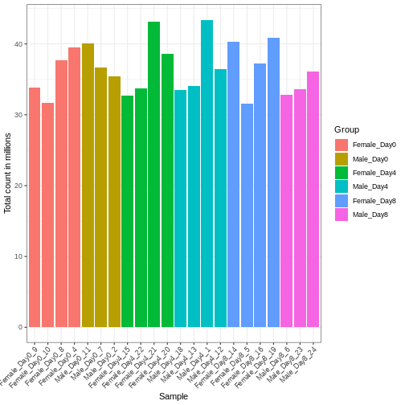
サンプル間のライブラリサイズの差異を適切に補正しなければ、誤った結論を導く危険性があります。RNA-seqデータにおいてこの処理を行う標準的な方法は、2段階の手順で説明できます。 まず、サンプルごとに固有の補正係数である「サイズ因子」を推定します。これらの因子を用いて生のカウント値を除算すれば、サンプル間でより比較可能な値が得られるようになります。 次に、これらのサイズ因子をデータの統計解析プロセスに組み込みます。 重要なのは、特定の解析手法においてこの処理がどのように実装されているかを詳細に確認することです。 場合によっては、アナリスト自身がカウント値をサイズ因子で明示的に除算する必要があることもあります。 また別のケースでは（差異発現解析で後述するように）、これらを解析ツールに別途提供することが重要です。ツールはこれらの因子を適切に統計モデルに適用します。
DESeq2では、estimateSizeFactors()関数を用いてサイズ因子を計算します。
この関数で推定されるサイズ因子は、ライブラリサイズの差異補正と、サンプル間のRNA組成の差異補正を組み合わせたものです。
後者は特に重要です。RNA-seqデータは組成的な性質を持つため、遺伝子間で分配されるリード数には一定の上限があります。もし特定の遺伝子（あるいは少数の非常に高発現遺伝子）がリードの大部分を占有すると、他のすべての遺伝子は必然的に非常に低いカウント値しか得られなくなります。ここで私たちは、内部構造としてこれらのサイズ因子を格納できるDESeqDataSetオブジェクトにSummarizedExperimentオブジェクトを変換します。また、主要な実験デザイン（性別と時間）を指定する必要もあります。
R
dds <- DESeq2::DESeqDataSet(se, design = ~ sex + time)
WARNING
Warning in DESeq2::DESeqDataSet(se, design = ~sex + time): some variables in
design formula are characters, converting to factorsR
dds <- estimateSizeFactors(dds)
# Plot the size factors against library size
# and look for any patterns by group:
ggplot(data.frame(libSize = colSums(assay(dds)),
sizeFactor = sizeFactors(dds),
Group = dds$Group),
aes(x = libSize, y = sizeFactor, col = Group)) +
geom_point(size = 5) + theme_bw() +
labs(x = "Library size", y = "Size factor")
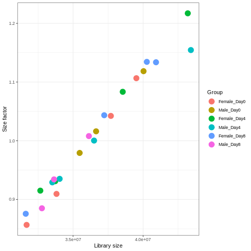
データの前処理
探索的解析のための手法に関する研究文献は数多く存在します。 これらの手法の多くは、入力データ（ここでは各遺伝子）の分散が平均値から比較的独立している場合に最も効果的に機能します。 RNA-seqのようなリードカウントデータの場合、この前提は成立しません。 実際には、分散は平均リードカウントの増加に伴って増大する傾向があります。
R
meanSdPlot(assay(dds), ranks = FALSE)
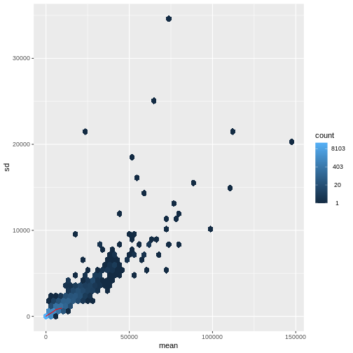
この問題に対処する方法は2つあります：1つ目は、カウントデータに特化した分析手法を開発する方法、2つ目は既存の手法を適用できるようにカウントデータを変換する方法です。 どちらの方法も研究されてきましたが、現時点では後者のアプローチの方が実際に広く採用されています。具体的には、DESeq2の分散安定化変換を用いてデータを変換した後、平均リードカウントと分散の相関関係が適切に除去されていることを確認できます。
R
vsd <- DESeq2::vst(dds, blind = TRUE)
meanSdPlot(assay(vsd), ranks = FALSE)
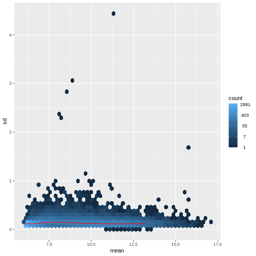
ヒートマップとクラスタリング解析
発現パターンの類似性に基づいてサンプルをクラスタリングする方法は複数存在します。最も単純な手法の一つは、すべてのサンプルペア間のユークリッド距離を計算することです（距離が長いほど類似性が低いことを示します）。その後、分岐型デンドログラムとヒートマップの両方を用いて結果を可視化し、距離を色で表現します。この解析から、Day 8のサンプルは他のサンプル群と比較して互いにより類似していることが明らかになりました。ただし、Day 4とDay 0のサンプルは明確には分離していません。代わりに、雄個体と雌個体は確実に分離することが確認されました。
R
dst <- dist(t(assay(vsd)))
colors <- colorRampPalette(brewer.pal(9, "Blues"))(255)
ComplexHeatmap::Heatmap(
as.matrix(dst),
col = colors,
name = "Euclidean\ndistance",
cluster_rows = hclust(dst),
cluster_columns = hclust(dst),
bottom_annotation = columnAnnotation(
sex = vsd$sex,
time = vsd$time,
col = list(sex = c(Female = "red", Male = "blue"),
time = c(Day0 = "yellow", Day4 = "forestgreen", Day8 = "purple")))
)
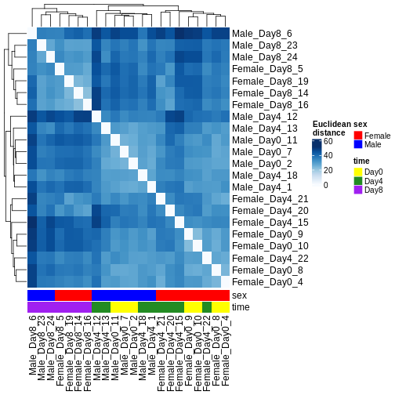
主成分分析（PCA）
主成分分析は次元削減手法の一つであり、サンプルデータを低次元空間に投影する手法である。 この低次元表現は、データの可視化や、さらなる分析手法の入力データとして利用することができる。 主成分は、互いに直交するように定義され、それらが張る空間へのサンプル投影が可能な限り多くの分散情報を保持するように設計されている。 この手法は教師なし学習の一種であり、サンプルに関する外部情報（例えば処理条件など）は一切考慮されない。 以下の図では、サンプルを2次元の主成分空間に投影して表現している。 各次元について、当該成分が説明する全分散の割合を示している。 定義上、第1主成分は常に後続する主成分よりも多くの分散を説明することになる。 説明分散率とは、元の高次元空間から低次元空間にデータを投影して可視化する際に、データ中の「信号」成分のうちどの程度が保持されているかを示す指標である。
R
pcaData <- DESeq2::plotPCA(vsd, intgroup = c("sex", "time"),
returnData = TRUE)
OUTPUT
using ntop=500 top features by varianceR
percentVar <- round(100 * attr(pcaData, "percentVar"))
ggplot(pcaData, aes(x = PC1, y = PC2)) +
geom_point(aes(color = sex, shape = time), size = 5) +
theme_minimal() +
xlab(paste0("PC1: ", percentVar[1], "% variance")) +
ylab(paste0("PC2: ", percentVar[2], "% variance")) +
coord_fixed() +
scale_color_manual(values = c(Male = "blue", Female = "red"))
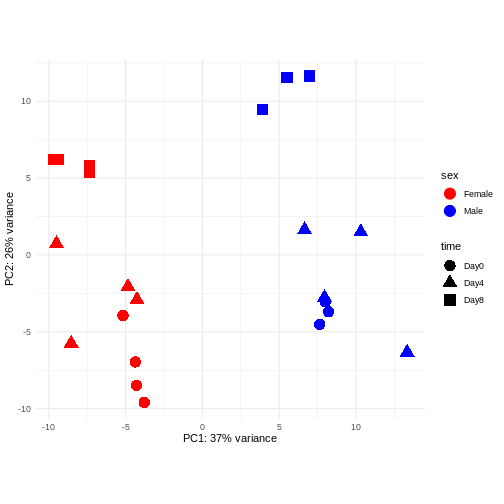
課題：隣の人と以下の点について話し合ってください
主に感染後の時間経過に伴う発現変化（Reminder Day0時点 -> 感染前）に関心がある場合、下流解析で考慮すべき点は何でしょうか？
同一ドナーから複数のサンプルを取得した実験デザインを考えてみましょう。あなたは引き続き時間差による差異に関心があり、以下のPCAプロットを観察しました。このPCAプロットからどのような示唆が得られるでしょうか？
OUTPUT
using ntop=500 top features by variance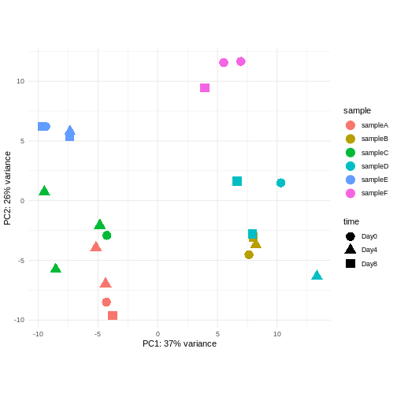
このデータにおける主要なシグナル（分散の37%）は性別と関連しています。私たちは時間経過に伴う性特異的な変化には関心がないため、下流解析ではこの影響を調整する必要があります（次のエピソード参照）。また、今後の探索的下流解析においてもこの要因を考慮に入れておく必要があります。この影響を補正する方法として、性染色体上に位置する遺伝子を除去することが考えられます。
- 考慮すべき強いドナー効果が認められます。
- PC1（分散の37%）は何を表しているのでしょうか？ これは2つのドナーグループを示しているように思われます。
- PC1とPC2には時間との関連性が認められません → 時間による転写レベルの影響は存在しないか、あるいは弱いと考えられます --> より高次の主成分（例：PC3、PC4、…）との関連性を確認してください
課題: ライブラリサイズに応じて色分けしたPCAプロットを作成してください
分散安定化変換前後の結果を比較してください。
ヒント:
DESeq2::plotPCA関数は入力としてDESeqTransformクラスのオブジェクトを期待します。SummarizedExperimentオブジェクトを変換するには、plotPCA(DESeqTransform(se))と記述します
R
pcaDataVst <- DESeq2::plotPCA(vsd, intgroup = c("libSize"),
returnData = TRUE)
OUTPUT
using ntop=500 top features by varianceR
percentVar <- round(100 * attr(pcaDataVst, "percentVar"))
ggplot(pcaDataVst, aes(x = PC1, y = PC2)) +
geom_point(aes(color = libSize / 1e6), size = 5) +
theme_minimal() +
xlab(paste0("PC1: ", percentVar[1], "% variance")) +
ylab(paste0("PC2: ", percentVar[2], "% variance")) +
coord_fixed() +
scale_color_continuous("Total count in millions", type = "viridis")
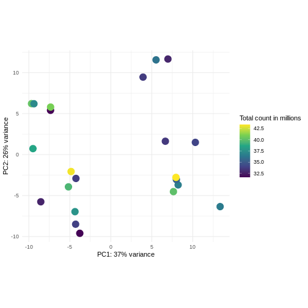
R
pcaDataCts <- DESeq2::plotPCA(DESeqTransform(se), intgroup = c("libSize"),
returnData = TRUE)
OUTPUT
using ntop=500 top features by varianceR
percentVar <- round(100 * attr(pcaDataCts, "percentVar"))
ggplot(pcaDataCts, aes(x = PC1, y = PC2)) +
geom_point(aes(color = libSize / 1e6), size = 5) +
theme_minimal() +
xlab(paste0("PC1: ", percentVar[1], "% variance")) +
ylab(paste0("PC2: ", percentVar[2], "% variance")) +
coord_fixed() +
scale_color_continuous("Total count in millions", type = "viridis")
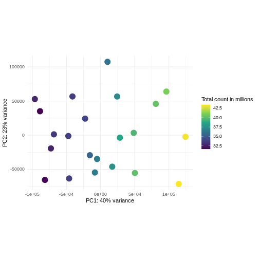
インタラクティブな探索的データ解析
実験要因を詳細に調査したり、コーディング経験のない関係者から知見を得たりする場合、QCプロットをインタラクティブに操作しながら分析することが非常に有効です。RNA-seqデータの探索的データ分析に有用なツールとして、GlimmaとiSEEが挙げられます。
Challenge: Interactively explore our data using iSEE
R
## Convert DESeqDataSet object to a SingleCellExperiment object, in order to
## be able to store the PCA representation
sce <- as(dds, "SingleCellExperiment")
## Add PCA to the 'reducedDim' slot
stopifnot(rownames(pcaData) == colnames(sce))
reducedDim(sce, "PCA") <- as.matrix(pcaData[, c("PC1", "PC2")])
## Add variance-stabilized data as a new assay
stopifnot(colnames(vsd) == colnames(sce))
assay(sce, "vsd") <- assay(vsd)
app <- iSEE(sce)
shiny::runApp(app)
Session info
R
sessionInfo()
OUTPUT
R version 4.5.1 (2025-06-13)
Platform: x86_64-pc-linux-gnu
Running under: Ubuntu 22.04.5 LTS
Matrix products: default
BLAS: /usr/lib/x86_64-linux-gnu/blas/libblas.so.3.10.0
LAPACK: /usr/lib/x86_64-linux-gnu/lapack/liblapack.so.3.10.0 LAPACK version 3.10.0
locale:
[1] LC_CTYPE=C.UTF-8 LC_NUMERIC=C LC_TIME=C.UTF-8
[4] LC_COLLATE=C.UTF-8 LC_MONETARY=C.UTF-8 LC_MESSAGES=C.UTF-8
[7] LC_PAPER=C.UTF-8 LC_NAME=C LC_ADDRESS=C
[10] LC_TELEPHONE=C LC_MEASUREMENT=C.UTF-8 LC_IDENTIFICATION=C
time zone: UTC
tzcode source: system (glibc)
attached base packages:
[1] grid stats4 stats graphics grDevices utils datasets
[8] methods base
other attached packages:
[1] iSEE_2.20.0 SingleCellExperiment_1.30.1
[3] hexbin_1.28.5 RColorBrewer_1.1-3
[5] ComplexHeatmap_2.24.1 ggplot2_3.5.2
[7] vsn_3.76.0 DESeq2_1.48.1
[9] SummarizedExperiment_1.38.1 Biobase_2.68.0
[11] MatrixGenerics_1.20.0 matrixStats_1.5.0
[13] GenomicRanges_1.60.0 GenomeInfoDb_1.44.0
[15] IRanges_2.42.0 S4Vectors_0.46.0
[17] BiocGenerics_0.54.0 generics_0.1.4
loaded via a namespace (and not attached):
[1] rlang_1.1.6 magrittr_2.0.3 shinydashboard_0.7.3
[4] clue_0.3-66 GetoptLong_1.0.5 compiler_4.5.1
[7] mgcv_1.9-3 png_0.1-8 vctrs_0.6.5
[10] pkgconfig_2.0.3 shape_1.4.6.1 crayon_1.5.3
[13] fastmap_1.2.0 XVector_0.48.0 labeling_0.4.3
[16] promises_1.3.3 shinyAce_0.4.4 UCSC.utils_1.4.0
[19] preprocessCore_1.70.0 xfun_0.52 cachem_1.1.0
[22] jsonlite_2.0.0 listviewer_4.0.0 later_1.4.2
[25] DelayedArray_0.34.1 BiocParallel_1.42.1 parallel_4.5.1
[28] cluster_2.1.8.1 R6_2.6.1 bslib_0.9.0
[31] limma_3.64.1 jquerylib_0.1.4 Rcpp_1.0.14
[34] iterators_1.0.14 knitr_1.50 httpuv_1.6.16
[37] Matrix_1.7-3 splines_4.5.1 igraph_2.1.4
[40] tidyselect_1.2.1 abind_1.4-8 yaml_2.3.10
[43] doParallel_1.0.17 codetools_0.2-20 affy_1.86.0
[46] miniUI_0.1.2 lattice_0.22-7 tibble_3.3.0
[49] shiny_1.11.0 withr_3.0.2 evaluate_1.0.4
[52] circlize_0.4.16 pillar_1.10.2 affyio_1.78.0
[55] BiocManager_1.30.26 renv_1.1.5 DT_0.33
[58] foreach_1.5.2 shinyjs_2.1.0 scales_1.4.0
[61] xtable_1.8-4 glue_1.8.0 tools_4.5.1
[64] colourpicker_1.3.0 locfit_1.5-9.12 colorspace_2.1-1
[67] nlme_3.1-168 GenomeInfoDbData_1.2.14 vipor_0.4.7
[70] cli_3.6.5 viridisLite_0.4.2 S4Arrays_1.8.1
[73] dplyr_1.1.4 gtable_0.3.6 rintrojs_0.3.4
[76] sass_0.4.10 digest_0.6.37 SparseArray_1.8.0
[79] ggrepel_0.9.6 rjson_0.2.23 htmlwidgets_1.6.4
[82] farver_2.1.2 htmltools_0.5.8.1 lifecycle_1.0.4
[85] shinyWidgets_0.9.0 httr_1.4.7 GlobalOptions_0.1.2
[88] statmod_1.5.0 mime_0.13 - 探索的分析は、データセットの品質管理と潜在的な問題の検出において不可欠なプロセスです。
- 探索的分析手法には様々な種類があり、それぞれ異なる前処理済みデータを必要とします。最も一般的に用いられる手法では、カウント値の正規化と対数変換（あるいは同等のより感度の高い/高度な処理）が行われ、データの均方分散性に近い状態が求められます。一方、他の手法では生のカウント値をそのまま処理対象とします。
Content from Differential expression 解析
Last updated on 2025-09-23 | Edit this page
Estimated time 105 minutes
Overview
Questions
- 典型的な Differential expression 解析で実施される主な手順は何ですか？
- DESeq2の出力結果をどのように解釈すればよいですか？
Objectives
- Differential expression 解析における主要な手順について説明してください。
- DESeq2パッケージを使用してR環境でこれらの手順を実行する方法を説明してください。
Differential expression の推定
RNA-seqデータ解析における主要な目的の一つは、実験群間または条件間（例：処理群と対照群、時間点、組織など）における系統的な変化を定量化し、統計的に推論することです。 これは通常、条件間変動と条件内変動を用いて発現変動パターンを示す遺伝子を同定することで行われ、生物学的複製サンプル（同一条件下での複数サンプル）が必要となります。 発現変動解析を実施するためのソフトウェアパッケージは複数存在します。 比較研究によれば、発現変動遺伝子（DEG）に関してはある程度の一致が見られるものの、ツール間にはばらつきがあり、どのツールも他のすべてのツールを一貫して上回る性能を示すことはないことが報告されています（Soneson and Delorenzi, 2013参照）。 以下では、DESeq2 ソフトウェアパッケージを使用した発現変動解析の実施方法を説明し、実際に解析を行います。edgeRパッケージも同様の手法を実装しており、カウントデータに関する主要な仮定を共有しています。 両パッケージとも一般的に良好な安定性を示し、同等の結果が得られます。
DESeqDataSetオブジェクト
DESeq2を実行するには、カウントデータをDESeqDataSetクラスのオブジェクトとして表現する必要があります。
DESeqDataSetはSummarizedExperimentクラス（定量データのインポートとアノテーションセクション参照）の拡張版であり、カウントアッセイデータ、特徴量（ここでは遺伝子）、およびサンプルメタデータに加えて、
design formula を保持します。 design formula
は、モデリング時に用いる変数を表現するものです。通常は解析対象の変数（群変数）や、考慮したいその他の変数（例：バッチ効果変数）などが含まれます。
design formula および関連する design matrices
に関する詳細な説明は、design
matricesの詳細な探索セクションで行います。DESeqDataSetクラスのオブジェクトは、カウント行列、SummarizedExperimentオブジェクト、トランスクリプト存在量ファイル、またはhtseqカウントファイルから構築可能です。
パッケージの読み込み
R
suppressPackageStartupMessages({
library(SummarizedExperiment)
library(DESeq2)
library(ggplot2)
library(ExploreModelMatrix)
library(cowplot)
library(ComplexHeatmap)
library(apeglm)
})
データの読み込み
前回の品質管理分析で使用した SummarizedExperiment
オブジェクトを再度読み込みます。品質管理の探索的分析では、カウント数が5未満の遺伝子約35%を削除しました。これらの遺伝子は情報量が不足していたためです。DESeq2の統計解析においては、デフォルトで独立したフィルタリングが行われるため、これらの遺伝子を厳密に削除する必要はありません。ただし、これにより
DESeqDataSet
オブジェクトのメモリ使用量が減少し、計算速度が向上する可能性があります。さらに、これらの遺伝子が可視化結果を乱雑にするのを防ぐことができます。
R
se <- readRDS("data/GSE96870_se.rds")
se <- se[rowSums(assay(se, "counts")) > 5, ]
DESeqDataSetの作成
本例で使用する design matrix は ~ sex + time
とします。
This will allow us test the difference between males and females (averaged over time point) and the difference between day 0, 4 and 8 (averaged over males and females). If we wanted to test other comparisons (e.g., Female.Day8 vs. Female.Day0 and also Male.Day8 vs. Male.Day0) we could use a different design matrix to more easily extract those pairwise comparisons.
R
dds <- DESeq2::DESeqDataSet(se,
design = ~ sex + time)
WARNING
Warning in DESeq2::DESeqDataSet(se, design = ~sex + time): some variables in
design formula are characters, converting to factorsDESeqDataSetを生成する関数は、入力データの種類に応じて適切に調整する必要があります。例えば：
R
#From SummarizedExperiment object
ddsSE <- DESeqDataSet(se, design = ~ sex + time)
#From count matrix
dds <- DESeqDataSetFromMatrix(countData = assays(se)$counts,
colData = colData(se),
design = ~ sex + time)
正規化処理
DESeq2 と edgeR
は以下の前提条件に基づいています：
- ほとんどの遺伝子は発現量に有意な差がない
- 特定の遺伝子にリードがマッピングされる確率は、同一グループ内のすべてのサンプルにおいて同一である
前のセクションで示したように、サンプルの総カウント数は（たとえ同じ条件であっても）ライブラリサイズ（シーケンスされたリードの総数）に依存します。 特定の遺伝子のカウント数の変動をグループ間およびグループ内で比較するには、まずライブラリサイズと構成効果を考慮する必要があります。 前のセクションで説明したestimateSizeFactors()関数を思い出してください。
R
dds <- estimateSizeFactors(dds)
DESeq2 では、「相対対数発現量」（RLE：Relative Log Expression）法を用いて、リード深度とライブラリ構成を考慮したサンプルごとのサイズ因子を算出します。 一方、edgeR では「トリミング平均M値」（TMM：Trimmed Mean of M-Values）法を採用し、ライブラリサイズの差異や組成的影響を補正します。 _edgeR_の正規化係数と_DESeq2_のサイズ因子は類似した結果をもたらしますが、これらは理論的に同等のパラメータではありません。
統計モデリング
DESeq2 と edgeR は、グループあたりのレプリケートが少ないこと、平均分散依存性 (探索的データ分析を参照)、および歪んだカウント分布を考慮して、RNA-seq カウントを 負の二項分布 としてモデル化します。
分散パラメータ (Dispersion)
負の二項分布に従う遺伝子のカウント値におけるグループ内分散は、平均 \(\mu\) に対して以下のようにモデル化できます：
\(var = \mu + \theta \mu^2\)
ここで \(\theta\) は遺伝子固有の
分散パラメータ (dispersion)
を表し、データのばらつき度合いを示す指標です。第二段階として、各遺伝子の分散パラメータを推定することで、グループ内の期待分散値を算出し、グループ間の差異を検定します。サンプル数が限られている場合、適切な分散推定値は得にくいため、類似した発現パターンを示す遺伝子間の情報が活用されます。各遺伝子の分散推定値は、観測された分散分布の中央値方向に「縮小」（shrinked）されます。DESeq2
では、estimateDispersions()
関数を使用して分散推定値を取得できます。 plotDispEsts()
関数を用いることで、この 縮小効果
の影響を視覚的に確認することが可能です：
R
dds <- estimateDispersions(dds)
OUTPUT
gene-wise dispersion estimatesOUTPUT
mean-dispersion relationshipOUTPUT
final dispersion estimatesR
plotDispEsts(dds)
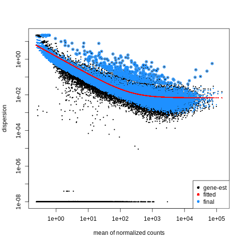
検定方法
We can use the nbinomWaldTest()function of
DESeq2 to fit a generalized linear model (GLM) and
compute log2 fold changes (synonymous with “GLM coefficients”,
“beta coefficients” or “effect size”) corresponding to the variables of
the design matrix. The design matrix is directly
related to the design formula and automatically derived from
it. Assume a design formula with one variable (~ treatment)
and two factor levels (treatment and control). The mean expression \(\mu_{j}\) of a specific gene in sample
\(j\) will be modeled as following:
\(log(μ_j) = β_0 + x_j β_T\),
with \(β_T\) corresponding to the log2 fold change of the treatment groups, \(x_j\) = 1, if \(j\) belongs to the treatment group and \(x_j\) = 0, if \(j\) belongs to the control group.
Finally, the estimated log2 fold changes are scaled by their standard error and tested for being significantly different from 0 using the Wald test.
R
dds <- nbinomWaldTest(dds)
注意
上記で説明した標準的な差異発現解析は、単一の関数 DESeq()
にまとめられています。最初のコードブロックを実行することは、2番目のコードブロックを実行することと等価です：
R
dds <- DESeq(dds)
R
dds <- estimateSizeFactors(dds)
dds <- estimateDispersions(dds)
dds <- nbinomWaldTest(dds)
特定の対比に関する結果の探索
results()
関数を使用すると、遺伝子ごとの検定統計量（対数2倍変化量や調整済みp値など）を抽出できます。比較対象とする対比は、モデル係数の線形結合として定義します（これは設計行列内の列の組み合わせに相当します）。したがって、この定義は設計式と直接関連しています。設計行列の詳細な解説と、異なる対比を指定するための使用方法については、設計行列の探索
のセクションを参照してください。results()
関数では、対比を対象変数（参照変数）と、その比較対象となる水準を用いて
contrast
引数で指定します。デフォルトでは、参照変数は設計式の最後の変数となり、参照水準
は最初の因子水準、最後の水準
が比較対象として自動的に使用されます。また、results()
関数の name
引数を使用して明示的に対比を指定することも可能です。利用可能なすべての対比名は、resultsNames()
関数で取得できます。
Challenge
このレッスンで使用されている例に対して results(dds)
を実行する際、比較のデフォルト値となる
コントラスト、基準レベル、および
「最終レベル」 はそれぞれ何になりますか？
ヒント：オブジェクト構築に使用された設計式を確認してください。
このレッスンの例では、設計式の最後の変数は time です。
基準レベル（アルファベット順で最初の値）は
Day0 で、最終レベルは Day8
です。
R
levels(dds$time)
OUTPUT
[1] "Day0" "Day4" "Day8"デフォルトの対比を特定するのが難しい場合でも、results()
関数の出力には明示的に参照している対比が記載されています（以下参照）！
results()関数の出力を詳細に分析するには、summary()関数を使用し、有意性（p値）に基づいて結果を並べ替えることができます。ここでは、特に時間（「関心のある変数」）における変化に関心があり、具体的にはDay0（「基準レベル」）とDay8（「比較対象レベル」）の間で発現量に差異が見られる遺伝子を対象としています。使用したモデルには性別変数が含まれています（上記参照）。したがって、本分析結果は性別に関連する差異を考慮した「補正済み」の値となります。
R
## Day 8 vs Day 0
resTime <- results(dds, contrast = c("time", "Day8", "Day0"))
summary(resTime)
OUTPUT
out of 27430 with nonzero total read count
adjusted p-value < 0.1
LFC > 0 (up) : 4472, 16%
LFC < 0 (down) : 4282, 16%
outliers [1] : 10, 0.036%
low counts [2] : 3723, 14%
(mean count < 1)
[1] see 'cooksCutoff' argument of ?results
[2] see 'independentFiltering' argument of ?resultsR
# View(resTime)
head(resTime[order(resTime$pvalue), ])
OUTPUT
log2 fold change (MLE): time Day8 vs Day0
Wald test p-value: time Day8 vs Day0
DataFrame with 6 rows and 6 columns
baseMean log2FoldChange lfcSE stat pvalue
<numeric> <numeric> <numeric> <numeric> <numeric>
Asl 701.343 1.117332 0.0594128 18.8062 6.71212e-79
Apod 18765.146 1.446981 0.0805056 17.9737 3.13229e-72
Cyp2d22 2550.480 0.910202 0.0556002 16.3705 3.10712e-60
Klk6 546.503 -1.671897 0.1057395 -15.8115 2.59339e-56
Fcrls 184.235 -1.947016 0.1277235 -15.2440 1.80488e-52
A330076C08Rik 107.250 -1.749957 0.1155125 -15.1495 7.63434e-52
padj
<numeric>
Asl 1.59057e-74
Apod 3.71130e-68
Cyp2d22 2.45431e-56
Klk6 1.53639e-52
Fcrls 8.55406e-49
A330076C08Rik 3.01518e-48以下の2つのコントラスト指定方法は、本質的に同等の結果をもたらします。
name パラメータには resultsNames()
関数を使用してアクセスできます。
R
resTime <- results(dds, contrast = c("time", "Day8", "Day0"))
resTime <- results(dds, name = "time_Day8_vs_Day0")
Challenge
時間の影響を排除して、雄個体と雌個体間における DE 遺伝子を探索してください。
ヒント: GLM
を再度適合させる必要はありません。resultsNames()
関数を使用して正しい対比を取得してください。
R
## Male vs Female
resSex <- results(dds, contrast = c("sex", "Male", "Female"))
summary(resSex)
OUTPUT
out of 27430 with nonzero total read count
adjusted p-value < 0.1
LFC > 0 (up) : 51, 0.19%
LFC < 0 (down) : 70, 0.26%
outliers [1] : 10, 0.036%
low counts [2] : 8504, 31%
(mean count < 6)
[1] see 'cooksCutoff' argument of ?results
[2] see 'independentFiltering' argument of ?resultsR
head(resSex[order(resSex$pvalue), ])
OUTPUT
log2 fold change (MLE): sex Male vs Female
Wald test p-value: sex Male vs Female
DataFrame with 6 rows and 6 columns
baseMean log2FoldChange lfcSE stat pvalue
<numeric> <numeric> <numeric> <numeric> <numeric>
Xist 22603.0359 -11.60429 0.336282 -34.5076 6.16852e-261
Ddx3y 2072.9436 11.87241 0.397493 29.8683 5.08722e-196
Eif2s3y 1410.8750 12.62513 0.565194 22.3377 1.58997e-110
Kdm5d 692.1672 12.55386 0.593607 21.1484 2.85293e-99
Uty 667.4375 12.01728 0.593573 20.2457 3.87772e-91
LOC105243748 52.9669 9.08325 0.597575 15.2002 3.52699e-52
padj
<numeric>
Xist 1.16684e-256
Ddx3y 4.81149e-192
Eif2s3y 1.00253e-106
Kdm5d 1.34915e-95
Uty 1.46702e-87
LOC105243748 1.11194e-48多重検定補正
遺伝子ごとに1回ずつ行われる多数の検定を実施するため、DE解析の結果には必然的に偽陽性が相当数含まれることになります。例えば、20,000個の遺伝子を\(\alpha = 0.05\)の有意水準で検定した場合、実際には発現差が認められない遺伝子が1,000個有意に検出されると予想されます。
このような高い偽陽性率を考慮するため、我々は結果に対して多重検定補正を適用します。DESeq2ではデフォルトで、Benjamini-Hochberg法を用いて、DE解析結果に対する調整済みp値（padj）を算出します。
独立フィルタリングと対数倍率変化の縮小処理
結果はさまざまな方法で可視化できます。特に有用なのは、log2倍変化量、有意に発現変動した遺伝子、および_遺伝子の平均カウント数_の関係性を分析することです。
DESeq2にはこの分析を行うための便利な関数plotMA()が用意されています。
R
plotMA(resTime)
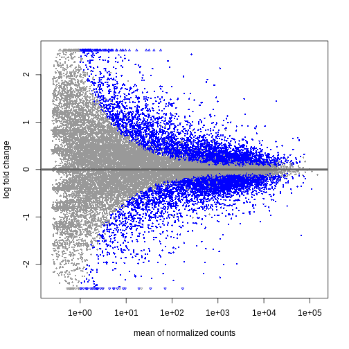
この結果から、平均カウント数が少ない遺伝子ほど対数倍率変化量が大きくなる傾向が確認できます。 これは、発現量の低い遺伝子のカウントデータが非常にノイズを含む性質によるものです。 平均カウント数が少なく分散が大きいこれらの遺伝子については、情報量が限られているため、対数倍率変化量を縮小処理することができます。
R
resTimeLfc <- lfcShrink(dds, coef = "time_Day8_vs_Day0", res = resTime)
OUTPUT
using 'apeglm' for LFC shrinkage. If used in published research, please cite:
Zhu, A., Ibrahim, J.G., Love, M.I. (2018) Heavy-tailed prior distributions for
sequence count data: removing the noise and preserving large differences.
Bioinformatics. https://doi.org/10.1093/bioinformatics/bty895R
plotMA(resTimeLfc)
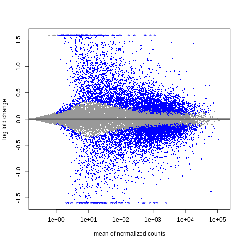
対数倍率変化量の縮小処理は、遺伝子の可視化やランキングにおいて有用ですが、結果の詳細な検討を行う場合には、通常independentFiltering引数を使用して発現量の低い遺伝子を除去します。
Challenge
デフォルトでは independentFiltering は TRUE
に設定されています。低発現遺伝子をフィルタリングしない場合、どのような結果が得られるでしょうか？
summary()
関数を使用して結果を比較してみてください。ほとんどの低発現遺伝子は、有意な発現差を示していません（上記の
MA
プロットでは青色で表示されています）。それでは、結果に差異が生じる原因は何でしょうか？
R
resTimeNotFiltered <- results(dds,
contrast = c("time", "Day8", "Day0"),
independentFiltering = FALSE)
summary(resTime)
OUTPUT
out of 27430 with nonzero total read count
adjusted p-value < 0.1
LFC > 0 (up) : 4472, 16%
LFC < 0 (down) : 4282, 16%
outliers [1] : 10, 0.036%
low counts [2] : 3723, 14%
(mean count < 1)
[1] see 'cooksCutoff' argument of ?results
[2] see 'independentFiltering' argument of ?resultsR
summary(resTimeNotFiltered)
OUTPUT
out of 27430 with nonzero total read count
adjusted p-value < 0.1
LFC > 0 (up) : 4324, 16%
LFC < 0 (down) : 4129, 15%
outliers [1] : 10, 0.036%
low counts [2] : 0, 0%
(mean count < 0)
[1] see 'cooksCutoff' argument of ?results
[2] see 'independentFiltering' argument of ?results発現頻度が極めて低い遺伝子では、分散が大きいため有意差が認められることはほとんどありません。したがって、低発現遺伝子をフィルタリングすることで、実験全体における偽陽性率を一定に保ったまま検出感度を向上させることが可能となります。
選択した遺伝子セットの可視化
発現変動遺伝子の数は非常に膨大であり、単に発現変動遺伝子をランク付けしたリストだけでは、実験的な疑問に対する解釈が難しい場合があります。遺伝子発現パターンを可視化することで、発現パターンの傾向や、関連する機能を持つ遺伝子群を特定することが可能になります。具体的な遺伝子群の過剰表現については、後のセクションで体系的な検出を行います。ただし、この可視化作業を行うだけでも、今後の解析で期待すべき結果のイメージを掴む上で大いに役立ちます。
可視化には、変換処理を施したデータ（探索的データ解析を参照）と、最も有意に発現変動が認められた遺伝子群を使用します。ヒートマップを作成することで、サンプル群間（列方向）の発現パターンを明らかにできるほか、遺伝子（行方向）をその類似性に基づいて自動的に順序付けすることが可能です。
R
# Transform counts
vsd <- vst(dds, blind = TRUE)
# Get top DE genes
genes <- resTime[order(resTime$pvalue), ] |>
head(10) |>
rownames()
heatmapData <- assay(vsd)[genes, ]
# Scale counts for visualization
heatmapData <- t(scale(t(heatmapData)))
# Add annotation
heatmapColAnnot <- data.frame(colData(vsd)[, c("time", "sex")])
heatmapColAnnot <- HeatmapAnnotation(df = heatmapColAnnot)
# Plot as heatmap
ComplexHeatmap::Heatmap(heatmapData,
top_annotation = heatmapColAnnot,
cluster_rows = TRUE, cluster_columns = FALSE)
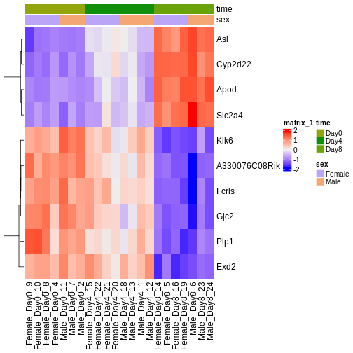
Challenge
ヒートマップと上位のDE遺伝子を確認してください。3時点すべてにおける変化の傾向として、予想通りの結果や予想外の結果は見つかりましたか？
結果の出力
R環境外で独立して使用できる形式の出力ファイルを生成したい場合があります。resTimeオブジェクトの形式は行名として遺伝子シンボルのみを含んでいるため、遺伝子アノテーション情報を結合した上で、.csvファイルとして保存します：
R
head(as.data.frame(resTime))
head(as.data.frame(rowRanges(se)))
temp <- cbind(as.data.frame(rowRanges(se)),
as.data.frame(resTime))
write.csv(temp, file = "output/Day8vsDay0.csv")
- DESeq2では、差異的発現解析の主要な手順（サイズ因子推定、分散推定、検定統計量の算出）が単一の関数DESeq()に統合されています。
- 発現量の低い遺伝子を独立してフィルタリングすることは、多くの場合有効な手法です。
Content from design matricesの詳細な解析
Last updated on 2025-09-23 | Edit this page
Estimated time 60 minutes
Overview
Questions
- 生物学的な質問や比較結果を、RNA-seq解析パッケージで使用可能な統計用語に翻訳するにはどうすればよいでしょうか？
Objectives
- 数式表記法とdesign matricesについて説明します。
- さまざまな実験デザインの種類を紹介し、各係数の解釈方法について学びます。
必要なパッケージの読み込みとデータの読み込み
まず、今回のエピソードで使用するいくつかのパッケージを読み込みます。 特に、ExploreModelMatrix パッケージは、設計行列を視覚的に探索するための機能を提供しており、解釈を容易にします。
R
suppressPackageStartupMessages({
library(SummarizedExperiment)
library(ExploreModelMatrix)
library(dplyr)
library(DESeq2)
})
次に、データセットのメタデータテーブルを読み込みます。さまざまなdesign matricesを検討するため、これまで使用していない4番目のファイルを読み込みます。このファイルには、小脳と脊髄のサンプル（合計45サンプル）のデータが含まれています。以前のエピソードで説明した通り、メタデータには収集サンプルの年齢、性別、感染状態、測定時点、および組織情報が含まれています。 特に注意すべき点として、Day0は常に非感染サンプルに対応しており、感染サンプルはDay4とDay8に採取されています。 さらに、すべてのマウスの年齢は8週間で統一されています。 したがって、本エピソードの前半では、これらの変数（性別、組織、測定時点）のみを考慮します。
R
meta <- read.csv("data/GSE96870_coldata_all.csv", row.names = 1)
# Here, for brevity we only print the first rows of the data.frame
head(meta)
OUTPUT
title geo_accession organism age sex
GSM2545336 CNS_RNA-seq_10C GSM2545336 Mus musculus 8 weeks Female
GSM2545337 CNS_RNA-seq_11C GSM2545337 Mus musculus 8 weeks Female
GSM2545338 CNS_RNA-seq_12C GSM2545338 Mus musculus 8 weeks Female
GSM2545339 CNS_RNA-seq_13C GSM2545339 Mus musculus 8 weeks Female
GSM2545340 CNS_RNA-seq_14C GSM2545340 Mus musculus 8 weeks Male
GSM2545341 CNS_RNA-seq_17C GSM2545341 Mus musculus 8 weeks Male
infection strain time tissue mouse
GSM2545336 InfluenzaA C57BL/6 Day8 Cerebellum 14
GSM2545337 NonInfected C57BL/6 Day0 Cerebellum 9
GSM2545338 NonInfected C57BL/6 Day0 Cerebellum 10
GSM2545339 InfluenzaA C57BL/6 Day4 Cerebellum 15
GSM2545340 InfluenzaA C57BL/6 Day4 Cerebellum 18
GSM2545341 InfluenzaA C57BL/6 Day8 Cerebellum 6R
table(meta$time, meta$infection)
OUTPUT
InfluenzaA NonInfected
Day0 0 15
Day4 16 0
Day8 14 0R
table(meta$age)
OUTPUT
8 weeks
45 まず、3つの予測変数の組み合わせごとの観測値数を可視化することから始めましょう。
R
vd <- VisualizeDesign(sampleData = meta,
designFormula = ~ tissue + time + sex)
vd$cooccurrenceplots
OUTPUT
$`tissue = Cerebellum`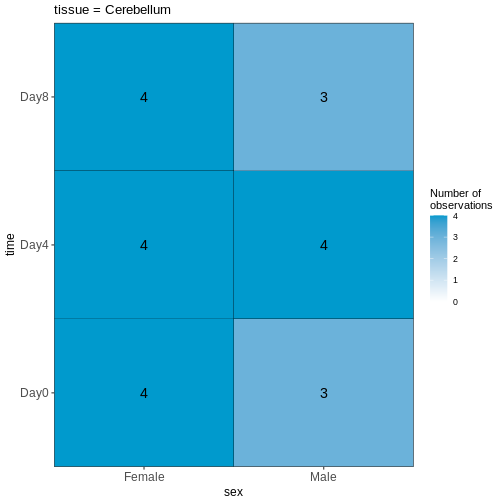
OUTPUT
$`tissue = Spinalcord`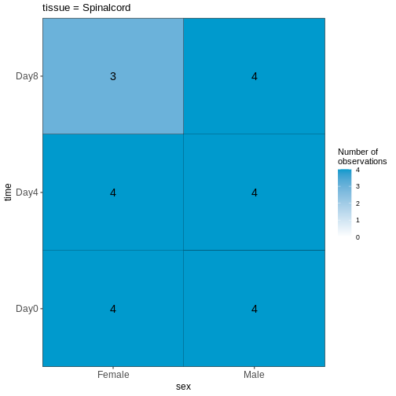
課題
この可視化結果を踏まえると、このデータセットはバランスが取れていると言えますか？あるいは、予測変数の組み合わせにおいて著しく過少または過剰表現されているケースが存在するでしょうか？
雄雌および非感染脊髄の比較解析
次に、最初のdesign matricesを設定します。
ここでは、非感染状態（Day0）の脊髄サンプルに焦点を当て、雄マウスと雌マウスを比較することを目的とします。
そこで、まずメタデータを対象サンプルのみに絞り込み、次に単一の予測変数（性別）を用いてdesign
matricesを設定し可視化します。 design formulaを ~ sex
と定義することで、Rに対してdesign
matricesに切片項を含めるよう指示します。
この切片項は、予測変数の「基準レベル」を表し、この場合は「雌マウス」が基準として選択されます。
特に指定がない場合、Rは予測変数の値をアルファベット順に並べ替え、最初の値を参照レベルまたは基準レベルとして自動的に選択します。
R
## Subset metadata
meta_noninf_spc <- meta %>% filter(time == "Day0" &
tissue == "Spinalcord")
meta_noninf_spc
OUTPUT
title geo_accession organism age sex
GSM2545356 CNS_RNA-seq_574 GSM2545356 Mus musculus 8 weeks Male
GSM2545357 CNS_RNA-seq_575 GSM2545357 Mus musculus 8 weeks Male
GSM2545358 CNS_RNA-seq_583 GSM2545358 Mus musculus 8 weeks Female
GSM2545361 CNS_RNA-seq_590 GSM2545361 Mus musculus 8 weeks Male
GSM2545364 CNS_RNA-seq_709 GSM2545364 Mus musculus 8 weeks Female
GSM2545365 CNS_RNA-seq_710 GSM2545365 Mus musculus 8 weeks Female
GSM2545366 CNS_RNA-seq_711 GSM2545366 Mus musculus 8 weeks Female
GSM2545367 CNS_RNA-seq_713 GSM2545367 Mus musculus 8 weeks Male
infection strain time tissue mouse
GSM2545356 NonInfected C57BL/6 Day0 Spinalcord 2
GSM2545357 NonInfected C57BL/6 Day0 Spinalcord 3
GSM2545358 NonInfected C57BL/6 Day0 Spinalcord 4
GSM2545361 NonInfected C57BL/6 Day0 Spinalcord 7
GSM2545364 NonInfected C57BL/6 Day0 Spinalcord 8
GSM2545365 NonInfected C57BL/6 Day0 Spinalcord 9
GSM2545366 NonInfected C57BL/6 Day0 Spinalcord 10
GSM2545367 NonInfected C57BL/6 Day0 Spinalcord 11R
## Use ExploreModelMatrix to create a design matrix and visualizations, given
## the desired design formula.
vd <- VisualizeDesign(sampleData = meta_noninf_spc,
designFormula = ~ sex)
vd$designmatrix
OUTPUT
(Intercept) sexMale
GSM2545356 1 1
GSM2545357 1 1
GSM2545358 1 0
GSM2545361 1 1
GSM2545364 1 0
GSM2545365 1 0
GSM2545366 1 0
GSM2545367 1 1R
vd$plotlist
OUTPUT
[[1]]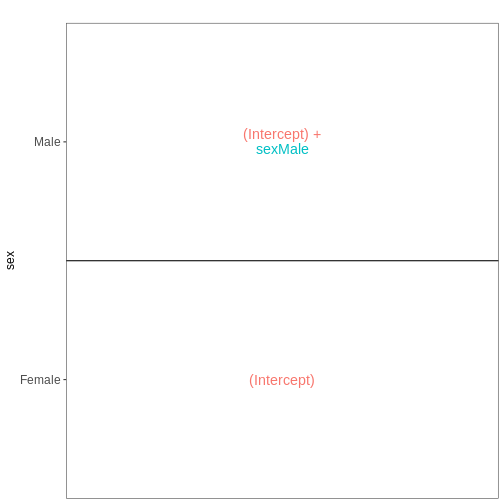
R
## Note that we can also generate the design matrix like this
model.matrix(~ sex, data = meta_noninf_spc)
OUTPUT
(Intercept) sexMale
GSM2545356 1 1
GSM2545357 1 1
GSM2545358 1 0
GSM2545361 1 1
GSM2545364 1 0
GSM2545365 1 0
GSM2545366 1 0
GSM2545367 1 1
attr(,"assign")
[1] 0 1
attr(,"contrasts")
attr(,"contrasts")$sex
[1] "contr.treatment"課題
この設計において、sexMale
係数はどのような解釈が可能でしょうか？
課題
Day0時点の雄雌脊髄組織サンプルを比較するため、前述の設計式を設定してください。ただし、Rに対してモデルに切片項を含めないよう指示してください。この変更は各係数の解釈にどのような影響を与えるでしょうか？また、雄マウスと雌マウス間で特定の遺伝子の平均発現量を比較するには、どのような対比を指定する必要があるでしょうか？
R
meta_noninf_spc <- meta %>% filter(time == "Day0" &
tissue == "Spinalcord")
meta_noninf_spc
OUTPUT
title geo_accession organism age sex
GSM2545356 CNS_RNA-seq_574 GSM2545356 Mus musculus 8 weeks Male
GSM2545357 CNS_RNA-seq_575 GSM2545357 Mus musculus 8 weeks Male
GSM2545358 CNS_RNA-seq_583 GSM2545358 Mus musculus 8 weeks Female
GSM2545361 CNS_RNA-seq_590 GSM2545361 Mus musculus 8 weeks Male
GSM2545364 CNS_RNA-seq_709 GSM2545364 Mus musculus 8 weeks Female
GSM2545365 CNS_RNA-seq_710 GSM2545365 Mus musculus 8 weeks Female
GSM2545366 CNS_RNA-seq_711 GSM2545366 Mus musculus 8 weeks Female
GSM2545367 CNS_RNA-seq_713 GSM2545367 Mus musculus 8 weeks Male
infection strain time tissue mouse
GSM2545356 NonInfected C57BL/6 Day0 Spinalcord 2
GSM2545357 NonInfected C57BL/6 Day0 Spinalcord 3
GSM2545358 NonInfected C57BL/6 Day0 Spinalcord 4
GSM2545361 NonInfected C57BL/6 Day0 Spinalcord 7
GSM2545364 NonInfected C57BL/6 Day0 Spinalcord 8
GSM2545365 NonInfected C57BL/6 Day0 Spinalcord 9
GSM2545366 NonInfected C57BL/6 Day0 Spinalcord 10
GSM2545367 NonInfected C57BL/6 Day0 Spinalcord 11R
vd <- VisualizeDesign(sampleData = meta_noninf_spc,
designFormula = ~ 0 + sex)
vd$designmatrix
OUTPUT
sexFemale sexMale
GSM2545356 0 1
GSM2545357 0 1
GSM2545358 1 0
GSM2545361 0 1
GSM2545364 1 0
GSM2545365 1 0
GSM2545366 1 0
GSM2545367 0 1R
vd$plotlist
OUTPUT
[[1]]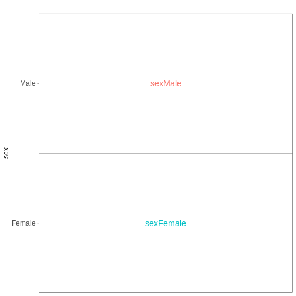
課題
男性脊髄組織サンプルにおける3時点（Day0、Day4、Day8）を比較するためのdesign
formulaを設定し、ExploreModelMatrixを使用してその結果を可視化してください。
R
meta_male_spc <- meta %>% filter(sex == "Male" & tissue == "Spinalcord")
meta_male_spc
OUTPUT
title geo_accession organism age sex infection
GSM2545355 CNS_RNA-seq_571 GSM2545355 Mus musculus 8 weeks Male InfluenzaA
GSM2545356 CNS_RNA-seq_574 GSM2545356 Mus musculus 8 weeks Male NonInfected
GSM2545357 CNS_RNA-seq_575 GSM2545357 Mus musculus 8 weeks Male NonInfected
GSM2545360 CNS_RNA-seq_589 GSM2545360 Mus musculus 8 weeks Male InfluenzaA
GSM2545361 CNS_RNA-seq_590 GSM2545361 Mus musculus 8 weeks Male NonInfected
GSM2545367 CNS_RNA-seq_713 GSM2545367 Mus musculus 8 weeks Male NonInfected
GSM2545368 CNS_RNA-seq_728 GSM2545368 Mus musculus 8 weeks Male InfluenzaA
GSM2545369 CNS_RNA-seq_729 GSM2545369 Mus musculus 8 weeks Male InfluenzaA
GSM2545372 CNS_RNA-seq_733 GSM2545372 Mus musculus 8 weeks Male InfluenzaA
GSM2545373 CNS_RNA-seq_735 GSM2545373 Mus musculus 8 weeks Male InfluenzaA
GSM2545378 CNS_RNA-seq_742 GSM2545378 Mus musculus 8 weeks Male InfluenzaA
GSM2545379 CNS_RNA-seq_743 GSM2545379 Mus musculus 8 weeks Male InfluenzaA
strain time tissue mouse
GSM2545355 C57BL/6 Day4 Spinalcord 1
GSM2545356 C57BL/6 Day0 Spinalcord 2
GSM2545357 C57BL/6 Day0 Spinalcord 3
GSM2545360 C57BL/6 Day8 Spinalcord 6
GSM2545361 C57BL/6 Day0 Spinalcord 7
GSM2545367 C57BL/6 Day0 Spinalcord 11
GSM2545368 C57BL/6 Day4 Spinalcord 12
GSM2545369 C57BL/6 Day4 Spinalcord 13
GSM2545372 C57BL/6 Day8 Spinalcord 17
GSM2545373 C57BL/6 Day4 Spinalcord 18
GSM2545378 C57BL/6 Day8 Spinalcord 23
GSM2545379 C57BL/6 Day8 Spinalcord 24R
vd <- VisualizeDesign(sampleData = meta_male_spc, designFormula = ~ time)
vd$designmatrix
OUTPUT
(Intercept) timeDay4 timeDay8
GSM2545355 1 1 0
GSM2545356 1 0 0
GSM2545357 1 0 0
GSM2545360 1 0 1
GSM2545361 1 0 0
GSM2545367 1 0 0
GSM2545368 1 1 0
GSM2545369 1 1 0
GSM2545372 1 0 1
GSM2545373 1 1 0
GSM2545378 1 0 1
GSM2545379 1 0 1R
vd$plotlist
OUTPUT
[[1]]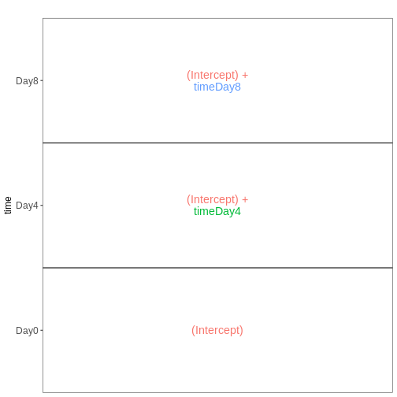
交互作用のないファクトリアルデザイン
次に、再び非感染マウスのみを対象に、性別と組織を予測因子として組み込んだモデルを構築します。 組織間の差異は雄マウスと雌マウスで同等であると仮定し、したがって交互作用項を含まない加算モデルを適用します。
R
meta_noninf <- meta %>% filter(time == "Day0")
meta_noninf
OUTPUT
title geo_accession organism age sex
GSM2545337 CNS_RNA-seq_11C GSM2545337 Mus musculus 8 weeks Female
GSM2545338 CNS_RNA-seq_12C GSM2545338 Mus musculus 8 weeks Female
GSM2545343 CNS_RNA-seq_20C GSM2545343 Mus musculus 8 weeks Male
GSM2545348 CNS_RNA-seq_27C GSM2545348 Mus musculus 8 weeks Female
GSM2545349 CNS_RNA-seq_28C GSM2545349 Mus musculus 8 weeks Male
GSM2545353 CNS_RNA-seq_3C GSM2545353 Mus musculus 8 weeks Female
GSM2545354 CNS_RNA-seq_4C GSM2545354 Mus musculus 8 weeks Male
GSM2545356 CNS_RNA-seq_574 GSM2545356 Mus musculus 8 weeks Male
GSM2545357 CNS_RNA-seq_575 GSM2545357 Mus musculus 8 weeks Male
GSM2545358 CNS_RNA-seq_583 GSM2545358 Mus musculus 8 weeks Female
GSM2545361 CNS_RNA-seq_590 GSM2545361 Mus musculus 8 weeks Male
GSM2545364 CNS_RNA-seq_709 GSM2545364 Mus musculus 8 weeks Female
GSM2545365 CNS_RNA-seq_710 GSM2545365 Mus musculus 8 weeks Female
GSM2545366 CNS_RNA-seq_711 GSM2545366 Mus musculus 8 weeks Female
GSM2545367 CNS_RNA-seq_713 GSM2545367 Mus musculus 8 weeks Male
infection strain time tissue mouse
GSM2545337 NonInfected C57BL/6 Day0 Cerebellum 9
GSM2545338 NonInfected C57BL/6 Day0 Cerebellum 10
GSM2545343 NonInfected C57BL/6 Day0 Cerebellum 11
GSM2545348 NonInfected C57BL/6 Day0 Cerebellum 8
GSM2545349 NonInfected C57BL/6 Day0 Cerebellum 7
GSM2545353 NonInfected C57BL/6 Day0 Cerebellum 4
GSM2545354 NonInfected C57BL/6 Day0 Cerebellum 2
GSM2545356 NonInfected C57BL/6 Day0 Spinalcord 2
GSM2545357 NonInfected C57BL/6 Day0 Spinalcord 3
GSM2545358 NonInfected C57BL/6 Day0 Spinalcord 4
GSM2545361 NonInfected C57BL/6 Day0 Spinalcord 7
GSM2545364 NonInfected C57BL/6 Day0 Spinalcord 8
GSM2545365 NonInfected C57BL/6 Day0 Spinalcord 9
GSM2545366 NonInfected C57BL/6 Day0 Spinalcord 10
GSM2545367 NonInfected C57BL/6 Day0 Spinalcord 11R
vd <- VisualizeDesign(sampleData = meta_noninf,
designFormula = ~ sex + tissue)
vd$designmatrix
OUTPUT
(Intercept) sexMale tissueSpinalcord
GSM2545337 1 0 0
GSM2545338 1 0 0
GSM2545343 1 1 0
GSM2545348 1 0 0
GSM2545349 1 1 0
GSM2545353 1 0 0
GSM2545354 1 1 0
GSM2545356 1 1 1
GSM2545357 1 1 1
GSM2545358 1 0 1
GSM2545361 1 1 1
GSM2545364 1 0 1
GSM2545365 1 0 1
GSM2545366 1 0 1
GSM2545367 1 1 1R
vd$plotlist
OUTPUT
[[1]]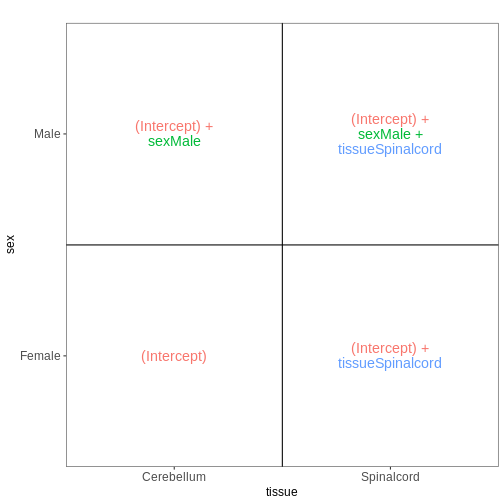
交互作用を考慮した要因計画
前回のモデルでは、組織間の差異は雄マウスと雌マウスで同等であると仮定していました。 性別ごとに異なる組織間差異を推定可能にするため（ただし推定すべき係数が1つ増加するというコストが生じます）、モデルに交互作用項を追加することができます。
R
meta_noninf <- meta %>% filter(time == "Day0")
meta_noninf
OUTPUT
title geo_accession organism age sex
GSM2545337 CNS_RNA-seq_11C GSM2545337 Mus musculus 8 weeks Female
GSM2545338 CNS_RNA-seq_12C GSM2545338 Mus musculus 8 weeks Female
GSM2545343 CNS_RNA-seq_20C GSM2545343 Mus musculus 8 weeks Male
GSM2545348 CNS_RNA-seq_27C GSM2545348 Mus musculus 8 weeks Female
GSM2545349 CNS_RNA-seq_28C GSM2545349 Mus musculus 8 weeks Male
GSM2545353 CNS_RNA-seq_3C GSM2545353 Mus musculus 8 weeks Female
GSM2545354 CNS_RNA-seq_4C GSM2545354 Mus musculus 8 weeks Male
GSM2545356 CNS_RNA-seq_574 GSM2545356 Mus musculus 8 weeks Male
GSM2545357 CNS_RNA-seq_575 GSM2545357 Mus musculus 8 weeks Male
GSM2545358 CNS_RNA-seq_583 GSM2545358 Mus musculus 8 weeks Female
GSM2545361 CNS_RNA-seq_590 GSM2545361 Mus musculus 8 weeks Male
GSM2545364 CNS_RNA-seq_709 GSM2545364 Mus musculus 8 weeks Female
GSM2545365 CNS_RNA-seq_710 GSM2545365 Mus musculus 8 weeks Female
GSM2545366 CNS_RNA-seq_711 GSM2545366 Mus musculus 8 weeks Female
GSM2545367 CNS_RNA-seq_713 GSM2545367 Mus musculus 8 weeks Male
infection strain time tissue mouse
GSM2545337 NonInfected C57BL/6 Day0 Cerebellum 9
GSM2545338 NonInfected C57BL/6 Day0 Cerebellum 10
GSM2545343 NonInfected C57BL/6 Day0 Cerebellum 11
GSM2545348 NonInfected C57BL/6 Day0 Cerebellum 8
GSM2545349 NonInfected C57BL/6 Day0 Cerebellum 7
GSM2545353 NonInfected C57BL/6 Day0 Cerebellum 4
GSM2545354 NonInfected C57BL/6 Day0 Cerebellum 2
GSM2545356 NonInfected C57BL/6 Day0 Spinalcord 2
GSM2545357 NonInfected C57BL/6 Day0 Spinalcord 3
GSM2545358 NonInfected C57BL/6 Day0 Spinalcord 4
GSM2545361 NonInfected C57BL/6 Day0 Spinalcord 7
GSM2545364 NonInfected C57BL/6 Day0 Spinalcord 8
GSM2545365 NonInfected C57BL/6 Day0 Spinalcord 9
GSM2545366 NonInfected C57BL/6 Day0 Spinalcord 10
GSM2545367 NonInfected C57BL/6 Day0 Spinalcord 11R
## Define a design including an interaction term
## Note that ~ sex * tissue is equivalent to
## ~ sex + tissue + sex:tissue
vd <- VisualizeDesign(sampleData = meta_noninf,
designFormula = ~ sex * tissue)
vd$designmatrix
OUTPUT
(Intercept) sexMale tissueSpinalcord sexMale:tissueSpinalcord
GSM2545337 1 0 0 0
GSM2545338 1 0 0 0
GSM2545343 1 1 0 0
GSM2545348 1 0 0 0
GSM2545349 1 1 0 0
GSM2545353 1 0 0 0
GSM2545354 1 1 0 0
GSM2545356 1 1 1 1
GSM2545357 1 1 1 1
GSM2545358 1 0 1 0
GSM2545361 1 1 1 1
GSM2545364 1 0 1 0
GSM2545365 1 0 1 0
GSM2545366 1 0 1 0
GSM2545367 1 1 1 1R
vd$plotlist
OUTPUT
[[1]]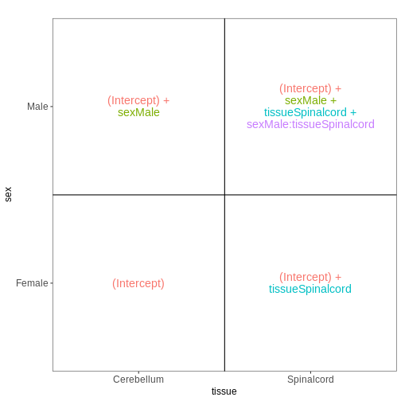
複数の因子を1つに統合する
複数の因子を含む実験において、因子を1つに統合することで、係数の解釈や目的とする対比の設定が容易になる場合があります。 この手法を用いて、先ほどの例を再度検討してみましょう：
R
meta_noninf <- meta %>% filter(time == "Day0")
meta_noninf$sex_tissue <- paste0(meta_noninf$sex, "_", meta_noninf$tissue)
meta_noninf
OUTPUT
title geo_accession organism age sex
GSM2545337 CNS_RNA-seq_11C GSM2545337 Mus musculus 8 weeks Female
GSM2545338 CNS_RNA-seq_12C GSM2545338 Mus musculus 8 weeks Female
GSM2545343 CNS_RNA-seq_20C GSM2545343 Mus musculus 8 weeks Male
GSM2545348 CNS_RNA-seq_27C GSM2545348 Mus musculus 8 weeks Female
GSM2545349 CNS_RNA-seq_28C GSM2545349 Mus musculus 8 weeks Male
GSM2545353 CNS_RNA-seq_3C GSM2545353 Mus musculus 8 weeks Female
GSM2545354 CNS_RNA-seq_4C GSM2545354 Mus musculus 8 weeks Male
GSM2545356 CNS_RNA-seq_574 GSM2545356 Mus musculus 8 weeks Male
GSM2545357 CNS_RNA-seq_575 GSM2545357 Mus musculus 8 weeks Male
GSM2545358 CNS_RNA-seq_583 GSM2545358 Mus musculus 8 weeks Female
GSM2545361 CNS_RNA-seq_590 GSM2545361 Mus musculus 8 weeks Male
GSM2545364 CNS_RNA-seq_709 GSM2545364 Mus musculus 8 weeks Female
GSM2545365 CNS_RNA-seq_710 GSM2545365 Mus musculus 8 weeks Female
GSM2545366 CNS_RNA-seq_711 GSM2545366 Mus musculus 8 weeks Female
GSM2545367 CNS_RNA-seq_713 GSM2545367 Mus musculus 8 weeks Male
infection strain time tissue mouse sex_tissue
GSM2545337 NonInfected C57BL/6 Day0 Cerebellum 9 Female_Cerebellum
GSM2545338 NonInfected C57BL/6 Day0 Cerebellum 10 Female_Cerebellum
GSM2545343 NonInfected C57BL/6 Day0 Cerebellum 11 Male_Cerebellum
GSM2545348 NonInfected C57BL/6 Day0 Cerebellum 8 Female_Cerebellum
GSM2545349 NonInfected C57BL/6 Day0 Cerebellum 7 Male_Cerebellum
GSM2545353 NonInfected C57BL/6 Day0 Cerebellum 4 Female_Cerebellum
GSM2545354 NonInfected C57BL/6 Day0 Cerebellum 2 Male_Cerebellum
GSM2545356 NonInfected C57BL/6 Day0 Spinalcord 2 Male_Spinalcord
GSM2545357 NonInfected C57BL/6 Day0 Spinalcord 3 Male_Spinalcord
GSM2545358 NonInfected C57BL/6 Day0 Spinalcord 4 Female_Spinalcord
GSM2545361 NonInfected C57BL/6 Day0 Spinalcord 7 Male_Spinalcord
GSM2545364 NonInfected C57BL/6 Day0 Spinalcord 8 Female_Spinalcord
GSM2545365 NonInfected C57BL/6 Day0 Spinalcord 9 Female_Spinalcord
GSM2545366 NonInfected C57BL/6 Day0 Spinalcord 10 Female_Spinalcord
GSM2545367 NonInfected C57BL/6 Day0 Spinalcord 11 Male_SpinalcordR
vd <- VisualizeDesign(sampleData = meta_noninf,
designFormula = ~ 0 + sex_tissue)
vd$designmatrix
OUTPUT
sex_tissueFemale_Cerebellum sex_tissueFemale_Spinalcord
GSM2545337 1 0
GSM2545338 1 0
GSM2545343 0 0
GSM2545348 1 0
GSM2545349 0 0
GSM2545353 1 0
GSM2545354 0 0
GSM2545356 0 0
GSM2545357 0 0
GSM2545358 0 1
GSM2545361 0 0
GSM2545364 0 1
GSM2545365 0 1
GSM2545366 0 1
GSM2545367 0 0
sex_tissueMale_Cerebellum sex_tissueMale_Spinalcord
GSM2545337 0 0
GSM2545338 0 0
GSM2545343 1 0
GSM2545348 0 0
GSM2545349 1 0
GSM2545353 0 0
GSM2545354 1 0
GSM2545356 0 1
GSM2545357 0 1
GSM2545358 0 0
GSM2545361 0 1
GSM2545364 0 0
GSM2545365 0 0
GSM2545366 0 0
GSM2545367 0 1R
vd$plotlist
OUTPUT
[[1]]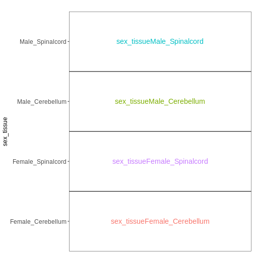
ペアデザイン
本データセットでは、サンプルがペアとして収集されています。すなわち、同一のマウスから大脳小脳と脊髄の両方のサンプルが採取されています。 この情報は従来のモデルでは考慮されていませんでした。 しかし、この情報をモデルに組み込むことで、マウス間のベースライン発現レベルのばらつきを排除し、組織間の差異を検出する検出力を向上させることが可能になります。 ここでは、雌の非感染マウスを対象に、マウス間のベースライン差異を考慮した上で組織間の差異を検証するためのペアデザインを定義します。
R
meta_fem_day0 <- meta %>% filter(sex == "Female" &
time == "Day0")
# ensure that mouse is treated as a categorical variable
meta_fem_day0$mouse <- factor(meta_fem_day0$mouse)
meta_fem_day0
OUTPUT
title geo_accession organism age sex
GSM2545337 CNS_RNA-seq_11C GSM2545337 Mus musculus 8 weeks Female
GSM2545338 CNS_RNA-seq_12C GSM2545338 Mus musculus 8 weeks Female
GSM2545348 CNS_RNA-seq_27C GSM2545348 Mus musculus 8 weeks Female
GSM2545353 CNS_RNA-seq_3C GSM2545353 Mus musculus 8 weeks Female
GSM2545358 CNS_RNA-seq_583 GSM2545358 Mus musculus 8 weeks Female
GSM2545364 CNS_RNA-seq_709 GSM2545364 Mus musculus 8 weeks Female
GSM2545365 CNS_RNA-seq_710 GSM2545365 Mus musculus 8 weeks Female
GSM2545366 CNS_RNA-seq_711 GSM2545366 Mus musculus 8 weeks Female
infection strain time tissue mouse
GSM2545337 NonInfected C57BL/6 Day0 Cerebellum 9
GSM2545338 NonInfected C57BL/6 Day0 Cerebellum 10
GSM2545348 NonInfected C57BL/6 Day0 Cerebellum 8
GSM2545353 NonInfected C57BL/6 Day0 Cerebellum 4
GSM2545358 NonInfected C57BL/6 Day0 Spinalcord 4
GSM2545364 NonInfected C57BL/6 Day0 Spinalcord 8
GSM2545365 NonInfected C57BL/6 Day0 Spinalcord 9
GSM2545366 NonInfected C57BL/6 Day0 Spinalcord 10R
vd <- VisualizeDesign(sampleData = meta_fem_day0,
designFormula = ~ mouse + tissue)
vd$designmatrix
OUTPUT
(Intercept) mouse8 mouse9 mouse10 tissueSpinalcord
GSM2545337 1 0 1 0 0
GSM2545338 1 0 0 1 0
GSM2545348 1 1 0 0 0
GSM2545353 1 0 0 0 0
GSM2545358 1 0 0 0 1
GSM2545364 1 1 0 0 1
GSM2545365 1 0 1 0 1
GSM2545366 1 0 0 1 1R
vd$plotlist
OUTPUT
[[1]]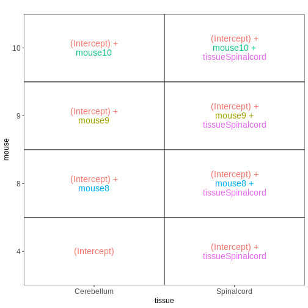
被験者内比較と被験者間比較
場合によっては、前述した2種類のモデルを組み合わせる必要があります。 例えば、感染マウスと非感染マウスの雌個体間で組織学的差異に違いがあるかどうかを調査したい場合を考えてみましょう。 この場合、各マウスはいずれか一方の感染群にのみ寄与します（各マウスは感染群か非感染群のいずれかに分類されます）が、小脳と脊髄の両方の組織サンプルを提供します。 この実験デザインを解釈する一つの方法は、各感染群ごとに2つのペア実験として捉えることです（edgeRユーザーガイド 第3.5節参照）。 この手法を用いれば、各感染群における2種類の組織を容易に比較でき、さらに感染群間の組織学的差異を対比することが可能になります。
R
meta_fem_day04 <- meta %>%
filter(sex == "Female" &
time %in% c("Day0", "Day4")) %>%
droplevels()
# ensure that mouse is treated as a categorical variable
meta_fem_day04$mouse <- factor(meta_fem_day04$mouse)
meta_fem_day04
OUTPUT
title geo_accession organism age sex
GSM2545337 CNS_RNA-seq_11C GSM2545337 Mus musculus 8 weeks Female
GSM2545338 CNS_RNA-seq_12C GSM2545338 Mus musculus 8 weeks Female
GSM2545339 CNS_RNA-seq_13C GSM2545339 Mus musculus 8 weeks Female
GSM2545344 CNS_RNA-seq_21C GSM2545344 Mus musculus 8 weeks Female
GSM2545348 CNS_RNA-seq_27C GSM2545348 Mus musculus 8 weeks Female
GSM2545352 CNS_RNA-seq_30C GSM2545352 Mus musculus 8 weeks Female
GSM2545353 CNS_RNA-seq_3C GSM2545353 Mus musculus 8 weeks Female
GSM2545358 CNS_RNA-seq_583 GSM2545358 Mus musculus 8 weeks Female
GSM2545362 CNS_RNA-seq_5C GSM2545362 Mus musculus 8 weeks Female
GSM2545364 CNS_RNA-seq_709 GSM2545364 Mus musculus 8 weeks Female
GSM2545365 CNS_RNA-seq_710 GSM2545365 Mus musculus 8 weeks Female
GSM2545366 CNS_RNA-seq_711 GSM2545366 Mus musculus 8 weeks Female
GSM2545371 CNS_RNA-seq_731 GSM2545371 Mus musculus 8 weeks Female
GSM2545375 CNS_RNA-seq_738 GSM2545375 Mus musculus 8 weeks Female
GSM2545376 CNS_RNA-seq_740 GSM2545376 Mus musculus 8 weeks Female
GSM2545377 CNS_RNA-seq_741 GSM2545377 Mus musculus 8 weeks Female
infection strain time tissue mouse
GSM2545337 NonInfected C57BL/6 Day0 Cerebellum 9
GSM2545338 NonInfected C57BL/6 Day0 Cerebellum 10
GSM2545339 InfluenzaA C57BL/6 Day4 Cerebellum 15
GSM2545344 InfluenzaA C57BL/6 Day4 Cerebellum 22
GSM2545348 NonInfected C57BL/6 Day0 Cerebellum 8
GSM2545352 InfluenzaA C57BL/6 Day4 Cerebellum 21
GSM2545353 NonInfected C57BL/6 Day0 Cerebellum 4
GSM2545358 NonInfected C57BL/6 Day0 Spinalcord 4
GSM2545362 InfluenzaA C57BL/6 Day4 Cerebellum 20
GSM2545364 NonInfected C57BL/6 Day0 Spinalcord 8
GSM2545365 NonInfected C57BL/6 Day0 Spinalcord 9
GSM2545366 NonInfected C57BL/6 Day0 Spinalcord 10
GSM2545371 InfluenzaA C57BL/6 Day4 Spinalcord 15
GSM2545375 InfluenzaA C57BL/6 Day4 Spinalcord 20
GSM2545376 InfluenzaA C57BL/6 Day4 Spinalcord 21
GSM2545377 InfluenzaA C57BL/6 Day4 Spinalcord 22R
design <- model.matrix(~ mouse, data = meta_fem_day04)
design <- cbind(design,
Spc.Day0 = meta_fem_day04$tissue == "Spinalcord" &
meta_fem_day04$time == "Day0",
Spc.Day4 = meta_fem_day04$tissue == "Spinalcord" &
meta_fem_day04$time == "Day4")
rownames(design) <- rownames(meta_fem_day04)
design
OUTPUT
(Intercept) mouse8 mouse9 mouse10 mouse15 mouse20 mouse21 mouse22
GSM2545337 1 0 1 0 0 0 0 0
GSM2545338 1 0 0 1 0 0 0 0
GSM2545339 1 0 0 0 1 0 0 0
GSM2545344 1 0 0 0 0 0 0 1
GSM2545348 1 1 0 0 0 0 0 0
GSM2545352 1 0 0 0 0 0 1 0
GSM2545353 1 0 0 0 0 0 0 0
GSM2545358 1 0 0 0 0 0 0 0
GSM2545362 1 0 0 0 0 1 0 0
GSM2545364 1 1 0 0 0 0 0 0
GSM2545365 1 0 1 0 0 0 0 0
GSM2545366 1 0 0 1 0 0 0 0
GSM2545371 1 0 0 0 1 0 0 0
GSM2545375 1 0 0 0 0 1 0 0
GSM2545376 1 0 0 0 0 0 1 0
GSM2545377 1 0 0 0 0 0 0 1
Spc.Day0 Spc.Day4
GSM2545337 0 0
GSM2545338 0 0
GSM2545339 0 0
GSM2545344 0 0
GSM2545348 0 0
GSM2545352 0 0
GSM2545353 0 0
GSM2545358 1 0
GSM2545362 0 0
GSM2545364 1 0
GSM2545365 1 0
GSM2545366 1 0
GSM2545371 0 1
GSM2545375 0 1
GSM2545376 0 1
GSM2545377 0 1R
vd <- VisualizeDesign(sampleData = meta_fem_day04 %>%
select(time, tissue, mouse),
designFormula = NULL,
designMatrix = design, flipCoordFitted = FALSE)
vd$designmatrix
OUTPUT
(Intercept) mouse8 mouse9 mouse10 mouse15 mouse20 mouse21 mouse22
GSM2545337 1 0 1 0 0 0 0 0
GSM2545338 1 0 0 1 0 0 0 0
GSM2545339 1 0 0 0 1 0 0 0
GSM2545344 1 0 0 0 0 0 0 1
GSM2545348 1 1 0 0 0 0 0 0
GSM2545352 1 0 0 0 0 0 1 0
GSM2545353 1 0 0 0 0 0 0 0
GSM2545358 1 0 0 0 0 0 0 0
GSM2545362 1 0 0 0 0 1 0 0
GSM2545364 1 1 0 0 0 0 0 0
GSM2545365 1 0 1 0 0 0 0 0
GSM2545366 1 0 0 1 0 0 0 0
GSM2545371 1 0 0 0 1 0 0 0
GSM2545375 1 0 0 0 0 1 0 0
GSM2545376 1 0 0 0 0 0 1 0
GSM2545377 1 0 0 0 0 0 0 1
Spc.Day0 Spc.Day4
GSM2545337 0 0
GSM2545338 0 0
GSM2545339 0 0
GSM2545344 0 0
GSM2545348 0 0
GSM2545352 0 0
GSM2545353 0 0
GSM2545358 1 0
GSM2545362 0 0
GSM2545364 1 0
GSM2545365 1 0
GSM2545366 1 0
GSM2545371 0 1
GSM2545375 0 1
GSM2545376 0 1
GSM2545377 0 1R
vd$plotlist
OUTPUT
$`time = Day0`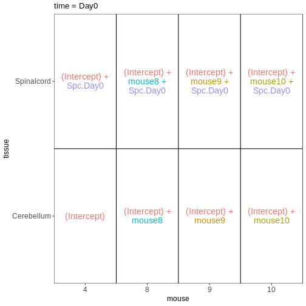
OUTPUT
$`time = Day4`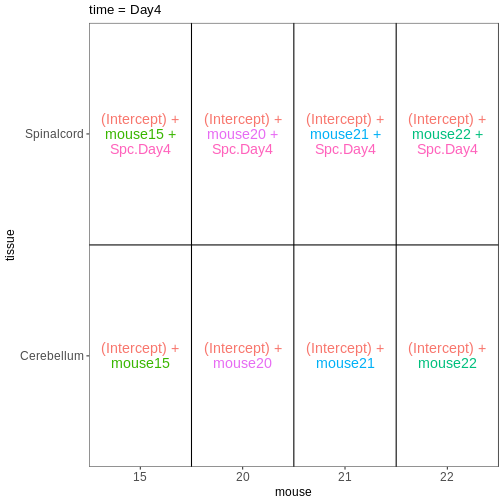
この内容は、前回のエピソードで行った DESeq2 解析とどのように関連しているのでしょうか？
設計行列の解釈方法についてさらに理解を深めたところで、前回のエピソードで行った差異発現解析を振り返ってみましょう。 ここでは主要なコードの流れを改めて説明します。
R
se <- readRDS("data/GSE96870_se.rds")
se <- se[rowSums(assay(se, "counts")) > 5, ]
dds <- DESeq2::DESeqDataSet(se, design = ~ sex + time)
dds <- DESeq(dds)
OUTPUT
estimating size factorsOUTPUT
estimating dispersionsOUTPUT
gene-wise dispersion estimatesOUTPUT
mean-dispersion relationshipOUTPUT
final dispersion estimatesOUTPUT
fitting model and testingDESeq2 では、design
matricesがオブジェクト内に以下のように格納されます：
R
attr(dds, "modelMatrix")
OUTPUT
Intercept sex_Male_vs_Female time_Day4_vs_Day0 time_Day8_vs_Day0
Female_Day0_9 1 0 0 0
Female_Day0_10 1 0 0 0
Female_Day0_8 1 0 0 0
Female_Day0_4 1 0 0 0
Male_Day0_11 1 1 0 0
Male_Day0_7 1 1 0 0
Male_Day0_2 1 1 0 0
Female_Day4_15 1 0 1 0
Female_Day4_22 1 0 1 0
Female_Day4_21 1 0 1 0
Female_Day4_20 1 0 1 0
Male_Day4_18 1 1 1 0
Male_Day4_13 1 1 1 0
Male_Day4_1 1 1 1 0
Male_Day4_12 1 1 1 0
Female_Day8_14 1 0 0 1
Female_Day8_5 1 0 0 1
Female_Day8_16 1 0 0 1
Female_Day8_19 1 0 0 1
Male_Day8_6 1 1 0 1
Male_Day8_23 1 1 0 1
Male_Day8_24 1 1 0 1
attr(,"assign")
[1] 0 1 2 2
attr(,"contrasts")
attr(,"contrasts")$sex
[1] "contr.treatment"
attr(,"contrasts")$time
[1] "contr.treatment"列名は resultsNames 関数を使用して取得できます：
R
resultsNames(dds)
OUTPUT
[1] "Intercept" "sex_Male_vs_Female" "time_Day4_vs_Day0"
[4] "time_Day8_vs_Day0" このデザインを可視化してみましょう：
R
vd <- VisualizeDesign(sampleData = colData(dds)[, c("sex", "time")],
designMatrix = attr(dds, "modelMatrix"),
flipCoordFitted = TRUE)
vd$plotlist
OUTPUT
[[1]]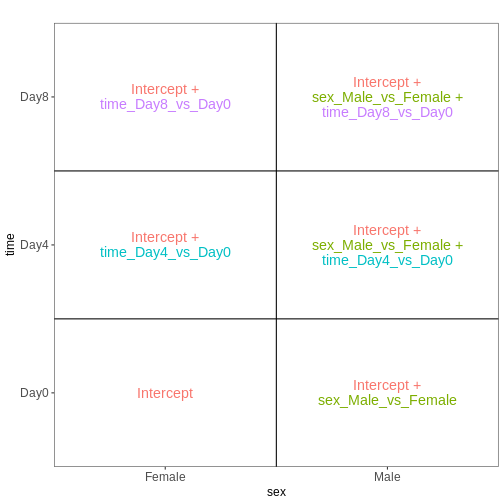
前回のエピソードでは、Day8のサンプルとDay0のサンプルを比較するテストを実施しました：
R
resTime <- results(dds, contrast = c("time", "Day8", "Day0"))
上記の図からわかるように、この比較はdesign
matricesの4列目に対応するtime_Day8_vs_Day0係数によって表現されています。
したがって、この検定における対比を別の方法で指定する場合、以下のように記述できます：
R
resTimeNum <- results(dds, contrast = c(0, 0, 0, 1))
結果が比較可能かどうかを確認してみましょう：
R
summary(resTime)
OUTPUT
out of 27430 with nonzero total read count
adjusted p-value < 0.1
LFC > 0 (up) : 4472, 16%
LFC < 0 (down) : 4282, 16%
outliers [1] : 10, 0.036%
low counts [2] : 3723, 14%
(mean count < 1)
[1] see 'cooksCutoff' argument of ?results
[2] see 'independentFiltering' argument of ?resultsR
summary(resTimeNum)
OUTPUT
out of 27430 with nonzero total read count
adjusted p-value < 0.1
LFC > 0 (up) : 4472, 16%
LFC < 0 (down) : 4282, 16%
outliers [1] : 10, 0.036%
low counts [2] : 3723, 14%
(mean count < 1)
[1] see 'cooksCutoff' argument of ?results
[2] see 'independentFiltering' argument of ?resultsR
## logFC
plot(resTime$log2FoldChange, resTimeNum$log2FoldChange)
abline(0, 1)
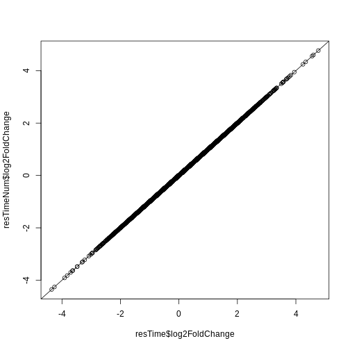
R
## -log10(p-value)
plot(-log10(resTime$pvalue), -log10(resTimeNum$pvalue))
abline(0, 1)
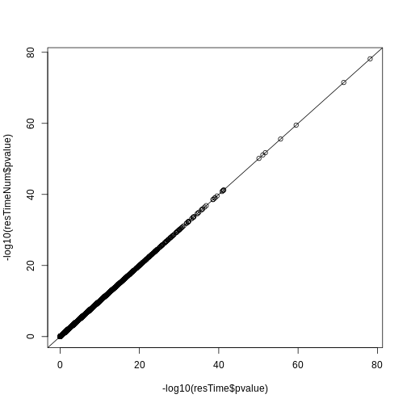
相互作用を考慮した DESeq2 解析の再実行
次に、異なる設定条件について検討します。 ここでは引き続き性別と時間を予測因子として考慮しますが、これらの間に相互作用項を導入します。 つまり、時間の影響が男性と女性で異なる可能性を認めるということです。
R
se <- readRDS("data/GSE96870_se.rds")
se <- se[rowSums(assay(se, "counts")) > 5, ]
dds <- DESeq2::DESeqDataSet(se, design = ~ sex * time)
dds <- DESeq(dds)
OUTPUT
estimating size factorsOUTPUT
estimating dispersionsOUTPUT
gene-wise dispersion estimatesOUTPUT
mean-dispersion relationshipOUTPUT
final dispersion estimatesOUTPUT
fitting model and testingR
attr(dds, "modelMatrix")
OUTPUT
Intercept sex_Male_vs_Female time_Day4_vs_Day0 time_Day8_vs_Day0
Female_Day0_9 1 0 0 0
Female_Day0_10 1 0 0 0
Female_Day0_8 1 0 0 0
Female_Day0_4 1 0 0 0
Male_Day0_11 1 1 0 0
Male_Day0_7 1 1 0 0
Male_Day0_2 1 1 0 0
Female_Day4_15 1 0 1 0
Female_Day4_22 1 0 1 0
Female_Day4_21 1 0 1 0
Female_Day4_20 1 0 1 0
Male_Day4_18 1 1 1 0
Male_Day4_13 1 1 1 0
Male_Day4_1 1 1 1 0
Male_Day4_12 1 1 1 0
Female_Day8_14 1 0 0 1
Female_Day8_5 1 0 0 1
Female_Day8_16 1 0 0 1
Female_Day8_19 1 0 0 1
Male_Day8_6 1 1 0 1
Male_Day8_23 1 1 0 1
Male_Day8_24 1 1 0 1
sexMale.timeDay4 sexMale.timeDay8
Female_Day0_9 0 0
Female_Day0_10 0 0
Female_Day0_8 0 0
Female_Day0_4 0 0
Male_Day0_11 0 0
Male_Day0_7 0 0
Male_Day0_2 0 0
Female_Day4_15 0 0
Female_Day4_22 0 0
Female_Day4_21 0 0
Female_Day4_20 0 0
Male_Day4_18 1 0
Male_Day4_13 1 0
Male_Day4_1 1 0
Male_Day4_12 1 0
Female_Day8_14 0 0
Female_Day8_5 0 0
Female_Day8_16 0 0
Female_Day8_19 0 0
Male_Day8_6 0 1
Male_Day8_23 0 1
Male_Day8_24 0 1
attr(,"assign")
[1] 0 1 2 2 3 3
attr(,"contrasts")
attr(,"contrasts")$sex
[1] "contr.treatment"
attr(,"contrasts")$time
[1] "contr.treatment"このデザインを可視化してみましょう：
R
vd <- VisualizeDesign(sampleData = colData(dds)[, c("sex", "time")],
designMatrix = attr(dds, "modelMatrix"),
flipCoordFitted = TRUE)
vd$plotlist
OUTPUT
[[1]]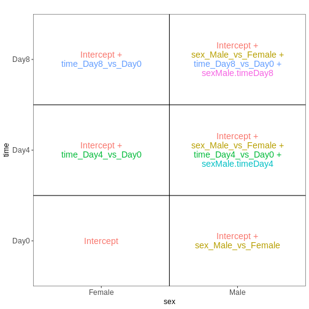
現在、time_Day8_vs_Day0 係数は
雌サンプル における Day8 と Day0 の差を表しています。
雄サンプルに対応する差を求めるには、相互作用効果（sexMale.timeDay8）も追加する必要があります。
R
## Day8 vs Day0, female
resTimeFemale <- results(dds, contrast = c("time", "Day8", "Day0"))
## Interaction effect (difference in Day8-Day0 effect between Male and Female)
resTimeInt <- results(dds, name = "sexMale.timeDay8")
前述の第2のアプローチ、すなわち単一の因子を作成する方法を用いて、このモデルの適合を試みてみましょう。
R
se <- readRDS("data/GSE96870_se.rds")
se <- se[rowSums(assay(se, "counts")) > 5, ]
se$sex_time <- paste0(se$sex, "_", se$time)
dds <- DESeq2::DESeqDataSet(se, design = ~ 0 + sex_time)
dds <- DESeq(dds)
OUTPUT
estimating size factorsOUTPUT
estimating dispersionsOUTPUT
gene-wise dispersion estimatesOUTPUT
mean-dispersion relationshipOUTPUT
final dispersion estimatesOUTPUT
fitting model and testingR
attr(dds, "modelMatrix")
OUTPUT
sex_timeFemale_Day0 sex_timeFemale_Day4 sex_timeFemale_Day8
Female_Day0_9 1 0 0
Female_Day0_10 1 0 0
Female_Day0_8 1 0 0
Female_Day0_4 1 0 0
Male_Day0_11 0 0 0
Male_Day0_7 0 0 0
Male_Day0_2 0 0 0
Female_Day4_15 0 1 0
Female_Day4_22 0 1 0
Female_Day4_21 0 1 0
Female_Day4_20 0 1 0
Male_Day4_18 0 0 0
Male_Day4_13 0 0 0
Male_Day4_1 0 0 0
Male_Day4_12 0 0 0
Female_Day8_14 0 0 1
Female_Day8_5 0 0 1
Female_Day8_16 0 0 1
Female_Day8_19 0 0 1
Male_Day8_6 0 0 0
Male_Day8_23 0 0 0
Male_Day8_24 0 0 0
sex_timeMale_Day0 sex_timeMale_Day4 sex_timeMale_Day8
Female_Day0_9 0 0 0
Female_Day0_10 0 0 0
Female_Day0_8 0 0 0
Female_Day0_4 0 0 0
Male_Day0_11 1 0 0
Male_Day0_7 1 0 0
Male_Day0_2 1 0 0
Female_Day4_15 0 0 0
Female_Day4_22 0 0 0
Female_Day4_21 0 0 0
Female_Day4_20 0 0 0
Male_Day4_18 0 1 0
Male_Day4_13 0 1 0
Male_Day4_1 0 1 0
Male_Day4_12 0 1 0
Female_Day8_14 0 0 0
Female_Day8_5 0 0 0
Female_Day8_16 0 0 0
Female_Day8_19 0 0 0
Male_Day8_6 0 0 1
Male_Day8_23 0 0 1
Male_Day8_24 0 0 1
attr(,"assign")
[1] 1 1 1 1 1 1
attr(,"contrasts")
attr(,"contrasts")$sex_time
[1] "contr.treatment"このデザインを再度可視化します：
R
vd <- VisualizeDesign(sampleData = colData(dds)[, c("sex", "time")],
designMatrix = attr(dds, "modelMatrix"),
flipCoordFitted = TRUE)
vd$plotlist
OUTPUT
[[1]]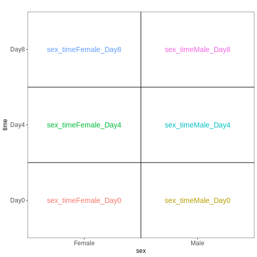
次に、前述と同様のコントラスト設定を行います
R
## Day8 vs Day0, female
resTimeFemaleSingle <- results(dds, contrast = c("sex_time", "Female_Day8", "Female_Day0"))
## Interaction effect (difference in Day8-Day0 effect between Male and Female)
resultsNames(dds)
OUTPUT
[1] "sex_timeFemale_Day0" "sex_timeFemale_Day4" "sex_timeFemale_Day8"
[4] "sex_timeMale_Day0" "sex_timeMale_Day4" "sex_timeMale_Day8" R
resTimeIntSingle <- results(dds, contrast = c(1, 0, -1, -1, 0, 1))
これらの結果が、2つの因子と交互作用項を含むモデルを適合させた場合に得られる結果と一致することを確認してください。
R
summary(resTimeFemale)
OUTPUT
out of 27430 with nonzero total read count
adjusted p-value < 0.1
LFC > 0 (up) : 2969, 11%
LFC < 0 (down) : 3218, 12%
outliers [1] : 6, 0.022%
low counts [2] : 6382, 23%
(mean count < 3)
[1] see 'cooksCutoff' argument of ?results
[2] see 'independentFiltering' argument of ?resultsR
summary(resTimeFemaleSingle)
OUTPUT
out of 27430 with nonzero total read count
adjusted p-value < 0.1
LFC > 0 (up) : 2969, 11%
LFC < 0 (down) : 3218, 12%
outliers [1] : 6, 0.022%
low counts [2] : 6382, 23%
(mean count < 3)
[1] see 'cooksCutoff' argument of ?results
[2] see 'independentFiltering' argument of ?resultsR
plot(-log10(resTimeFemale$pvalue), -log10(resTimeFemaleSingle$pvalue))
abline(0, 1)
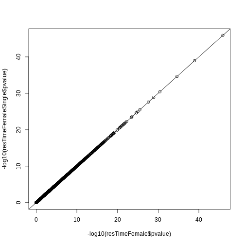
R
summary(resTimeInt)
OUTPUT
out of 27430 with nonzero total read count
adjusted p-value < 0.1
LFC > 0 (up) : 0, 0%
LFC < 0 (down) : 0, 0%
outliers [1] : 6, 0.022%
low counts [2] : 0, 0%
(mean count < 0)
[1] see 'cooksCutoff' argument of ?results
[2] see 'independentFiltering' argument of ?resultsR
summary(resTimeIntSingle)
OUTPUT
out of 27430 with nonzero total read count
adjusted p-value < 0.1
LFC > 0 (up) : 0, 0%
LFC < 0 (down) : 0, 0%
outliers [1] : 6, 0.022%
low counts [2] : 0, 0%
(mean count < 0)
[1] see 'cooksCutoff' argument of ?results
[2] see 'independentFiltering' argument of ?resultsR
plot(-log10(resTimeInt$pvalue), -log10(resTimeIntSingle$pvalue))
abline(0, 1)
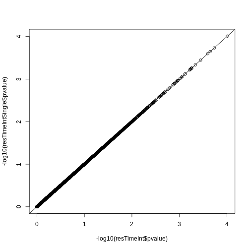
- R言語のformulaフレームワークを使用すると、設計行列を作成できます。この設計行列は、遺伝子発現レベルにおける系統的な差異に関連すると予想される変数の詳細を記述するものです。
- 比較対象として関心のある条件は、モデル係数の線形結合であるコントラストを用いて定義することができます。
Content from 遺伝子セットエンリッチメント解析
Last updated on 2025-09-23 | Edit this page
Estimated time 105 minutes
Overview
Questions
- 遺伝子セットエンリッチメント解析を実施する目的は何ですか？
- over-representation analysis の手法にはどのようなものがありますか？
- 一般的に使用されている遺伝子セットデータベースにはどのようなものがありますか？
Objectives
- 遺伝子セットエンリッチメント解析の手法について学びます。
- R環境で様々なリソースから遺伝子セットを取得する方法について習得します。
- 遺伝子セットエンリッチメント解析の実施方法と、解析結果の可視化方法について学びます。
発現変動遺伝子（DE遺伝子）のリストを取得した後、次に当然生じる疑問は、これらのDE遺伝子がどのような生物学的機能に影響を与える可能性があるかということです。遺伝子セットエンリッチメント解析（GSEA）では、事前に定義された遺伝子セット群に対して、DE遺伝子リストとの関連性を評価します。各遺伝子セットは特定の生物学的意味を持っています。DE遺伝子が特定の遺伝子セットに有意にエンリッチメントされている場合、対応する生物学的意味（例えば生物学的プロセスやパスウェイなど）が有意に影響を受けるという結論が導かれます。
遺伝子セットの定義は非常に柔軟であり、その構築方法も簡潔です。多くの場合、遺伝子セットは公共データベースから取得され、科学的なキュレーターによって遺伝子を明確な生物学的意味を持つグループに慎重に分類するための多大な労力が既に費やされています。ただし、遺伝子セットは個々の研究から独自に定義することも可能です。例えば、共発現ネットワーク解析におけるネットワークモジュールを構成する遺伝子群や、特定の疾患において発現が上昇する遺伝子群などがこれに該当します。
GSEA（Gene Set Enrichment Analysis）には数多くの分析手法が存在します。このエピソードでは、最もシンプルでかつ最も広く用いられている手法である「過剰表現解析（Over-Representation Analysis: ORA）」について解説します。ORAは差異発現遺伝子リストに直接適用可能な手法で、異なるカテゴリーにおける遺伝子数に基づいて、差異発現遺伝子と遺伝子セットとの関連性を評価します。
ORA（Over-Representation Analysis）は汎用性の高い手法であり、DE遺伝子リストだけでなく、研究対象とする任意の遺伝子リストに対しても適用可能です。これにより、それらの遺伝子群が統計的に有意に関連する生物学的意義を明らかにすることができます。
本エピソードでは、ORA（Over-Representation Analysis）という統計手法を説明するための簡単な事例から始めます。続いて、生物学分野で広く利用されている複数の遺伝子セットデータベースを紹介し、R環境でのアクセス方法について解説します。その後、BioconductorパッケージであるclusterProfilerを用いたORA解析の実施方法を学びます。最後に、GSEA（Gene Set Enrichment Analysis）の結果を可視化するためのいくつかの手法を習得します。
本エピソードで使用するパッケージの一覧は以下の通りです：
R
library(SummarizedExperiment)
library(DESeq2)
library(gplots)
library(microbenchmark)
library(org.Hs.eg.db)
library(org.Mm.eg.db)
library(msigdb)
library(clusterProfiler)
library(enrichplot)
library(ggplot2)
library(simplifyEnrichment)
統計的手法について
ORA解析の具体例を示すため、性別間比較によって得られた発現変動遺伝子リストを使用します。以下のコードでは、前エピソードで既に学習済みのDESeq2解析を実行します。最終的に、FDR値が0.05未満にフィルタリングされた発現変動遺伝子リストを取得し、これをオブジェクトsexDEgenesとして保存します。
ファイル data/GSE96870_se.rds には、エピソード2 でダウンロードし、エピソード3 で構築した RNA-Seq
カウントデータを含む RangedSummarizedExperiment
オブジェクトが格納されています（ダウンロードおよび構築のための最小限のコードは、スクリプト
download_data.R
に記載されています）。
以下のコードには、分析の各ステップを説明するコメントも記載されています。
R
library(SummarizedExperiment)
library(DESeq2)
# read the example dataset which is a `RangedSummarizedExperiment` object
se <- readRDS("data/GSE96870_se.rds")
# only restrict to mRNA (protein-coding genes)
se <- se[rowData(se)$gbkey == "mRNA"]
# construct a `DESeqDataSet` object where we also specify the experimental design
dds <- DESeqDataSet(se, design = ~ sex + time)
# perform DESeq2 analysis
dds <- DESeq(dds)
# obtain DESeq2 results, here we only want Male vs Female in the "sex" variable
resSex <- results(dds, contrast = c("sex", "Male", "Female"))
# extract DE genes with padj < 0.05
sexDE <- as.data.frame(subset(resSex, padj < 0.05))
# the list of DE genes
sexDEgenes <- rownames(sexDE)
DEGの数とその分布状況を確認してみましょう。DEGの数は一見非常に少ないように見えますが、今回の例ではこれが正常な状態です。
R
length(sexDEgenes)
OUTPUT
[1] 54R
head(sexDEgenes)
OUTPUT
[1] "Lgr6" "Myoc" "Fibcd1" "Kcna4" "Ctxn2" "S100a9"次に、性染色体上に位置する遺伝子を含む遺伝子セットを作成します（以下「XY遺伝子セット」と呼びます）。RangedSummarizedExperimentオブジェクトには遺伝子のゲノム位置情報も含まれているため、染色体名でフィルタリングするだけで性染色体上の遺伝子を簡単に取得できます。
以下のコードでは、geneGRはGRangesオブジェクトであり、seqnames()関数を適用して染色体名を抽出しています。seqnames()関数は特殊なデータ形式を返すため、as.vector()関数で明示的に通常のベクトル形式に変換する必要があります。
R
geneGR <- rowRanges(se)
totalGenes <- rownames(se)
XYGeneSet <- totalGenes[as.vector(seqnames(geneGR)) %in% c("X", "Y")]
head(XYGeneSet)
OUTPUT
[1] "Gm21950" "Gm14346" "Gm14345" "Gm14351" "Spin2-ps1" "Gm3701" R
length(XYGeneSet)
OUTPUT
[1] 1134単一の遺伝子セットの形式は非常に単純で、単にベクトルとして表現されます。 このORA解析では、発現変動遺伝子ベクトルと遺伝子セットベクトルに対して解析が行われます。
先に進む前に、一つ重要な注意点を挙げておきます。ORA解析では2つの遺伝子ベクトルを扱います。これらのベクトル間で正しく対応付けを行うためには、両ベクトルの遺伝子IDタイプが一致している必要があります。この簡単な例では、DE遺伝子と_XY遺伝子セットの両方が同じオブジェクトseから取得されているため、同じ遺伝子IDタイプ（遺伝子シンボル）であることが保証されています。しかし実際には、DE遺伝子と遺伝子セットは通常異なるソースから取得されます（例えばDE遺伝子は研究者の実験データから、遺伝子セットは公開データベースから取得される場合が多いです）。このため、遺伝子IDタイプが一致していないケースが頻繁に発生します。このエピソードの後半では、ORA解析における遺伝子ID変換の方法について詳しく説明します。
DE遺伝子と遺伝子セットは数学的に2つの集合として扱えるため、 自然なアプローチとして、まずベン図を用いて可視化する方法が有効です。
R
library(gplots)
plot(venn(list("sexDEgenes" = sexDEgenes,
"XY gene set" = XYGeneSet)))
title(paste0("|universe| = ", length(totalGenes)))
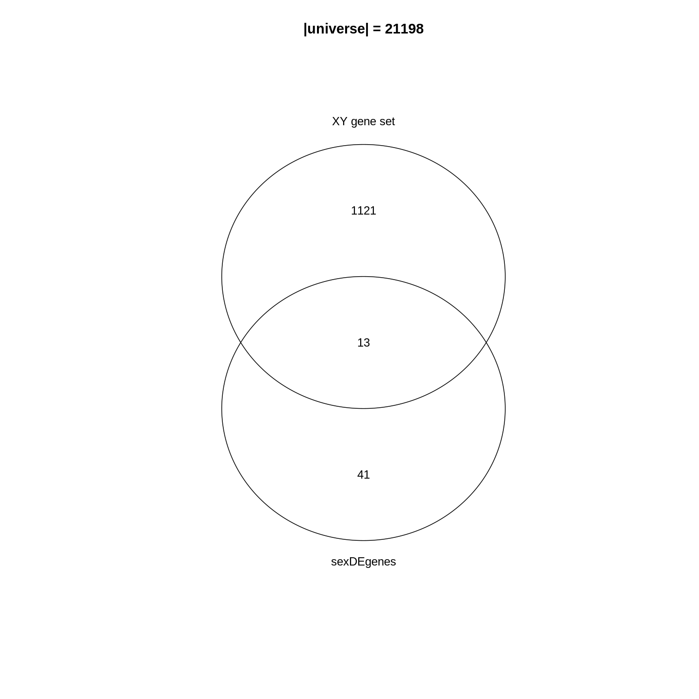
ベン図の分析結果から、_XY遺伝子セット_に含まれる遺伝子の約1.1%（13/1134）が発現変動遺伝子（DE遺伝子）であることがわかります。全遺伝子における発現変動遺伝子の割合（54/21198 = 0.25%）と比較すると、発現変動遺伝子とこの遺伝子セットとの間には強い関連性が存在することが示唆されます。さらに、遺伝子セットに属する発現変動遺伝子の割合（13/54 = 24.1%）と、ゲノム全体における_XY遺伝子セット_の割合（1134/21198 = 5.3%）を比較することも可能です。なお、この結果は生物学的に極めて妥当なものです。なぜなら、一方は性別間の比較に基づくデータであり、他方は性別に関連する遺伝子群の集合体という、いずれも生物学的に重要な事象を扱っているからです。
では、遺伝子セットのエンリッチメント度や過剰表現を統計的に測定するにはどうすればよいでしょうか？次のセクションに進みましょう。
Fisher’s 正確確率検定
エンリッチメント効果を統計的に評価するため、発現変動遺伝子群と遺伝子セットの関連性は、通常以下の2×2分割表に整理されます。この表では、各カテゴリーに属する遺伝子数が示されます。\(n_{+1}\)は対象遺伝子セット（XY遺伝子セット）のサイズ（すなわち構成遺伝子数）を、\(n_{1+}\)は発現変動遺伝子の数を、\(n\)は全遺伝子数をそれぞれ表します。
| In the gene set | Not in the gene set | Total | |
|---|---|---|---|
| DE | \(n_{11}\) | \(n_{12}\) | \(n_{1+}\) |
| Not DE | \(n_{21}\) | \(n_{22}\) | \(n_{2+}\) |
| Total | \(n_{+1}\) | \(n_{+2}\) | \(n\) |
これらの数値は以下のコードで取得できます1。なお、R変数名中の+は0に置き換えられている点にご注意ください。
R
n <- nrow(se)
n_01 <- length(XYGeneSet)
n_10 <- length(sexDEgenes)
n_11 <- length(intersect(sexDEgenes, XYGeneSet))
その他の値は以下の方法で取得できます：
R
n_12 <- n_10 - n_11
n_21 <- n_01 - n_11
n_20 <- n - n_10
n_02 <- n - n_01
n_22 <- n_02 - n_12
すべての値は以下の通りです：
R
matrix(c(n_11, n_12, n_10, n_21, n_22, n_20, n_01, n_02, n),
nrow = 3, byrow = TRUE)
OUTPUT
[,1] [,2] [,3]
[1,] 13 41 54
[2,] 1121 20023 21144
[3,] 1134 20064 21198これらの数値を2×2分割表に入力します：
| In the gene set | Not in the gene set | Total | |
|---|---|---|---|
| DE | 13 | 41 | 54 |
| Not DE | 1121 | 20023 | 21144 |
| Total | 1134 | 20064 | 21198 |
フィッシャーの正確確率検定は、2つの周辺属性間の関連性を検定する際に使用できます。具体的には、遺伝子が発現変動遺伝子であるかどうかと、特定の遺伝子セット（例：XY遺伝子セット）に含まれるかどうかの間に依存関係が存在するかどうかを検証します。R言語では、この検定を実行するためにfisher.test()関数を使用します。入力データとしては、左上の2×2サブマトリックスを指定します。関数の引数でalternative = "greater"と指定しているのは、過剰表現の有無のみに関心があるためです。
R
fisher.test(matrix(c(n_11, n_12, n_21, n_22), nrow = 2, byrow = TRUE),
alternative = "greater")
OUTPUT
Fisher's Exact Test for Count Data
data: matrix(c(n_11, n_12, n_21, n_22), nrow = 2, byrow = TRUE)
p-value = 3.906e-06
alternative hypothesis: true odds ratio is greater than 1
95 percent confidence interval:
3.110607 Inf
sample estimates:
odds ratio
5.662486 出力結果から、_p値_が非常に小さい値（3.906e-06）であることが確認できます。したがって、DE遺伝子が_XY遺伝子セット_に極めて強くエンリッチメントされていると結論付けることができます。
Fisherの正確確率検定の結果は、オブジェクトtとして保存できます。このオブジェクトは単純なリスト形式であり、_p値_はt$p.valueで取得可能です。
R
t <- fisher.test(matrix(c(n_11, n_12, n_21, n_22), nrow = 2, byrow = TRUE),
alternative = "greater")
t$p.value
OUTPUT
[1] 3.9059e-06フィッシャーの正確確率検定によるオッズ比は以下のように定義されます：
\[ \mathrm{Odds\_ratio} = \frac{n_{11}/n_{21}}{n_{12}/n_{22}} = \frac{n_{11}/n_{12}}{n_{21}/n_{22}} = \frac{n_{11} * n_{22}}{n_{12} * n_{21}} \]
発現変動遺伝子と遺伝子セットとの間に関連性がない場合、オッズ比は1になることが期待されます。一方、遺伝子セットにおいて発現変動遺伝子が過剰に存在している場合には、この値が1を上回ることになります。
関連資料
2×2分割表は転置可能であり、この操作はフィッシャーの正確確率検定の結果に影響を与えません。例えば、遺伝子が特定の遺伝子セットに含まれるかどうかを行に、遺伝子が発現変動しているかどうかを列に配置するといった方法が考えられます。
| DE | Not DE | Total | |
|---|---|---|---|
| In the gene set | 13 | 1121 | 1134 |
| Not in the gene set | 41 | 20023 | 20064 |
| Total | 54 | 21144 | 21198 |
対応する fisher.test() の結果は次のとおりです：
R
fisher.test(matrix(c(13, 1121, 41, 20023), nrow = 2, byrow = TRUE),
alternative = "greater")
OUTPUT
Fisher's Exact Test for Count Data
data: matrix(c(13, 1121, 41, 20023), nrow = 2, byrow = TRUE)
p-value = 3.906e-06
alternative hypothesis: true odds ratio is greater than 1
95 percent confidence interval:
3.110607 Inf
sample estimates:
odds ratio
5.662486 超幾何分布について
この問題を別の視点から考察してみましょう。 今回は、すべての遺伝子を大きな箱の中のボールとして扱います。 各遺伝子が選ばれる確率は等しく設定されています。 特定の遺伝子群はDE遺伝子としてマークされており（図では赤色で表示）、それ以外の遺伝子は非DE遺伝子としてマークされています（青色で表示）。 箱から\(n_{+1}\)個の遺伝子（遺伝子セットのサイズ）を取り出したとき、「手に取った\(n_{11}\)個の遺伝子のうち、DE遺伝子が占める確率はどのくらいか？」という問いを立てます。
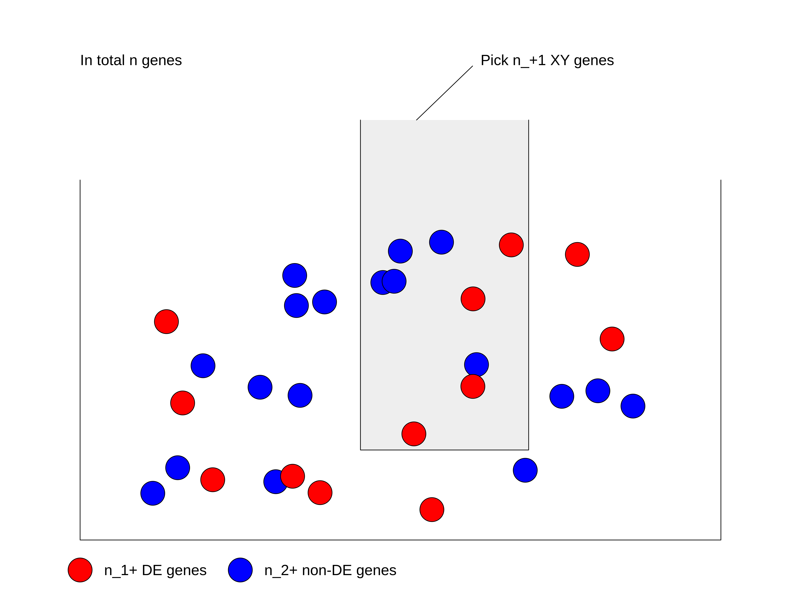
まず、DE遺伝子かどうかの区別をせずに、総遺伝子数\(n\)の中から\(n_{+1}\)個の遺伝子を選ぶ場合の総数を計算します：\(\binom{n}{n_{+1}}\)。
次に、選ばれた\(n_{+1}\)個の遺伝子の中には、総DE遺伝子数\(n_{1+}\)個の中から選ばれた\(n_{11}\)個のDE遺伝子が含まれています。したがって、総DE遺伝子数\(n_{1+}\)個の中から\(n_{11}\)個のDE遺伝子を選ぶ方法の数は：\(\binom{n_{1+}}{n_{11}}\)となります。
同様に、手元に残っている非DE遺伝子は\(n_{21}\)個あり、これは総非DE遺伝子数\(n_{2+}\)個の中から選ばれたものです。したがって、総非DE遺伝子数\(n_{2+}\)個の中から\(n_{21}\)個の非DE遺伝子を選ぶ方法の数は：\(\binom{n_{2+}}{n_{21}}\)となります。
DE遺伝子を選ぶ過程と非DE遺伝子を選ぶ過程は互いに独立しているため、\(n_{11}\)個のDE遺伝子と\(n_{21}\)個の非DE遺伝子を含む\(n_{+1}\)個の遺伝子を選ぶ方法の総数は、これら二つの組み合わせになります：\(\binom{n_{1+}}{n_{11}} \binom{n_{2+}}{n_{21}}\)。
確率\(P\)は以下のように表されます：
\[P = \frac{\binom{n_{1+}}{n_{11}} \binom{n_{2+}}{n_{21}}}{\binom{n}{n_{+1}}} = \frac{\binom{n_{1+}}{n_{11}} \binom{n - n_{1+}}{n_{+1} - n_{11}}}{\binom{n}{n_{+1}}}\]
ここで分母は、DE遺伝子かどうかの区別をせずに\(n_{+1}\)個の遺伝子を選ぶ場合の総数を表しています。
\(n\)（総遺伝子数）、\(n_{1+}\)（DE遺伝子数）、\(n_{+1}\)（遺伝子セットのサイズ）がすべて固定値である場合、選ばれるDE遺伝子の数は確率変数\(X\)で表せます。この場合、\(X\)はパラメータ\(n\)、\(n_{1+}\)、\(n_{+1}\)を持つ超幾何分布に従い、これを以下のように表記します：
\[ X \sim \mathrm{Hyper}(n, n_{1+}, n_{+1})\]
エンリッチメントの_p値_は、独立性を仮定した場合に\(n_{11}\)個以上の遺伝子が観測される確率として計算されます：
\[ \mathrm{Pr}( X \geqslant n_{11} ) = \sum_{x \in \{ {n_{11}, n_{11}+1, ..., \min\{n_{1+}, n_{+1}\} \}}} \mathrm{Pr}(X = x) \]
R言語では、関数phyper()を使用して超幾何分布から_p値_を計算できます。この関数には4つの引数があります：
R
phyper(q, m, n, k)
これらの変数の意味は以下の通りです：
-
q：観測値 -
m：DE遺伝子の数 -
n：非DE遺伝子の数 -
k：遺伝子セットのサイズ
phyper() 関数は \(\mathrm{Pr}(X \leqslant q)\)
を計算します。\(\mathrm{Pr}(X \geqslant
q)\) を計算するには、以下のように少し変形する必要があります：
\[ \mathrm{Pr}(X \geqslant q) = 1 - \mathrm{Pr}(X < q) = 1 - \mathrm{Pr}(X \leqslant q-1)\]
したがって、phyper()
関数の正しい使用方法は以下の通りです：
R
1 - phyper(q - 1, m, n, k)
変数を代入してみましょう：
R
1 - phyper(n_11 - 1, n_10, n_20, n_01)
OUTPUT
[1] 3.9059e-06オプションとして、lower.tail
引数を指定することで、分布の上側テールから直接
_p_値を計算することも可能です。
R
phyper(n_11 - 1, n_10, n_20, n_01, lower.tail = FALSE)
OUTPUT
[1] 3.9059e-06n_01 と n_10
を入れ替えた場合、_p_値は同じ結果になります：
R
1 - phyper(n_11 - 1, n_01, n_02, n_10)
OUTPUT
[1] 3.9059e-06fisher.test() と phyper() は同じ
_p_値を返します。実際、この2つの手法は同一のものです。
Fisherの正確検定では、超幾何分布がその統計量の厳密な分布となるためです。
これら2つの関数の実行時間を比較してみましょう：
R
library(microbenchmark)
microbenchmark(
fisher = fisher.test(matrix(c(n_11, n_12, n_21, n_22), nrow = 2, byrow = TRUE),
alternative = "greater"),
hyper = 1 - phyper(n_11 - 1, n_10, n_20, n_01)
)
OUTPUT
Unit: microseconds
expr min lq mean median uq max neval
fisher 250.688 257.8555 272.34256 263.9475 273.9955 508.208 100
hyper 1.573 1.7680 2.84773 2.2545 3.3060 16.230 100phyper() が fisher.test()
よりも数百倍高速であることは驚くべき結果です。
主な理由は、fisher.test() では
_p_値の計算以外にも多くの追加処理が行われているためです。
ご自身でORA分析を実装する場合には、常に phyper()
を使用することをお勧めします2。
関連文献
現在使用されている解析ツールでは、二項分布やカイ二乗検定がORA（Over-Representation Analysis）の統計的手法として採用されています。 ただし、これらの手法はあくまで近似値に基づくものであり、より厳密な統計解析を行う場合には以下の文献を参照することをお勧めします：Rivals et al., “Enrichment or depletion of a GO category within a class of genes: which test?』Bioinformatics 2007。 この論文では、ORA解析において用いられる各種統計手法について包括的な解説がなされています。
遺伝子セットリソース
ORA解析の基本手法について学んだところで、次は解析の第二の要素である「遺伝子セット」について説明します。
遺伝子セットとは、遺伝子セット内の遺伝子が共有する生物学的特性に関する事前知識を表したものです。 例えば、「細胞周期」遺伝子セットに含まれるすべての遺伝子は、細胞周期プロセスに関与しています。 したがって、DE遺伝子がこの「細胞周期」遺伝子セットに有意に濃縮されている場合、これは細胞周期関連遺伝子の発現差異が予想よりも顕著であることを意味します。 このことから、細胞周期プロセスの正常な機能が何らかの影響を受けている可能性が示唆されます。
前述の通り、遺伝子セット内の遺伝子は「生物学的特性」を共有しており、この「特性」が解析結果の解釈に用いられます。 「生物学的特性」の定義は非常に柔軟であり、例えば「細胞周期」のような生物学的プロセスを指す場合もあれば、以下のような多様な定義が含まれることもあります：
- 細胞内の位置（例：細胞膜、細胞核）
- 染色体上の位置（例：性染色体、染色体10上の細胞遺伝学的バンドp13）
- 転写因子やマイクロRNAの標的遺伝子（例：NF-κBによって転写制御されるすべての遺伝子）
- 特定の腫瘍型に特徴的な遺伝子（例：特定の腫瘍型において特異的に高発現する遺伝子群）
MSigDBデータベースには、さまざまなトピックに関する遺伝子セットが収録されています。 このデータベースについては、本節の後半で詳しく説明します。
遺伝子セットの名称には多様な表現方法があります：「遺伝子セット」「生物学的用語」「GO用語」「GO遺伝子セット」「パスウェイ」など。これらは本質的には同じ概念を異なる観点から表現したものです。 以下の図に示すように、「遺伝子セット」は遺伝子のベクトルとして表現され、計算処理のためのデータ表現形式です。 「生物学的用語」はその生物学的意味を説明するテキストデータであり、遺伝子セットの知識ベースとして解析推論に用いられます。 「GO遺伝子セット」と「パスウェイ」は、特にGO遺伝子セットとパスウェイ遺伝子セットを用いたエンリッチメント解析を指す用語です。
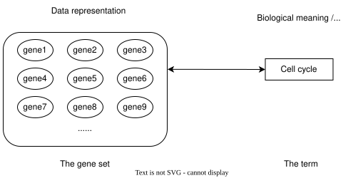
遺伝子セットデータベースの詳細に入る前に、R言語における遺伝子セットの一般的な形式について概説します。 ほとんどの解析では、遺伝子セットは単に遺伝子のベクトルとして扱われます。 したがって、複数の遺伝子セットの集合は、ベクトルのリストとして表現できます。 以下の例では、3個、5個、2個の遺伝子を含む3つの遺伝子セットがあり、一部の遺伝子は複数の遺伝子セットに重複して存在しています。
R
lt <- list(gene_set_1 = c("gene_1", "gene_2", "gene_3"),
gene_set_2 = c("gene_1", "gene_3", "gene_4", "gene_5", "gene_6"),
gene_set_3 = c("gene_4", "gene_7")
)
lt
OUTPUT
$gene_set_1
[1] "gene_1" "gene_2" "gene_3"
$gene_set_2
[1] "gene_1" "gene_3" "gene_4" "gene_5" "gene_6"
$gene_set_3
[1] "gene_4" "gene_7"遺伝子セットと遺伝子の関係を2列のデータフレームとして保存することも非常に一般的です。 遺伝子セット列と遺伝子列の順序、つまりどちらの列を最初の列とするかは任意に決定できます。 使用するツールによって要件が異なる場合があります。
R
data.frame(gene_set = rep(names(lt), times = sapply(lt, length)),
gene = unname(unlist(lt)))
OUTPUT
gene_set gene
1 gene_set_1 gene_1
2 gene_set_1 gene_2
3 gene_set_1 gene_3
4 gene_set_2 gene_1
5 gene_set_2 gene_3
6 gene_set_2 gene_4
7 gene_set_2 gene_5
8 gene_set_2 gene_6
9 gene_set_3 gene_4
10 gene_set_3 gene_7あるいは、遺伝子列を最初の列に配置することもできます：
OUTPUT
gene gene_set
1 gene_1 gene_set_1
2 gene_2 gene_set_1
3 gene_3 gene_set_1
4 gene_1 gene_set_2
5 gene_3 gene_set_2
6 gene_4 gene_set_2
7 gene_5 gene_set_2
8 gene_6 gene_set_2
9 gene_4 gene_set_3
10 gene_7 gene_set_3あまり一般的ではありませんが、遺伝子セットを行列形式で表現する場合もあります。 この場合、1つの次元が遺伝子セットに、もう1つの次元が遺伝子に対応します。行列の値はバイナリ形式であり、1の値は対応する遺伝子セットにその遺伝子が含まれていることを示します。 一部の手法では、遺伝子セット内の遺伝子の影響度を調整するため、1を\(w_{ij}\)で置き換える場合があります。
# gene_1 gene_2 gene_3 gene_4
# gene_set_1 1 1 0 0
# gene_set_2 1 0 1 1Challenge
異なる遺伝子セット表現形式間の変換は可能ですか？ 例えば、リスト形式のデータを2列のデータフレームに変換することはできますか？
R
lt <- list(gene_set_1 = c("gene_1", "gene_2", "gene_3"),
gene_set_2 = c("gene_1", "gene_3", "gene_4", "gene_5", "gene_6"),
gene_set_3 = c("gene_4", "gene_7")
)
ltをデータフレーム形式に変換する場合（例えば遺伝子セットを最初の列に配置するには以下のようにします）：
R
df = data.frame(gene_set = rep(names(lt), times = sapply(lt, length)),
gene = unname(unlist(lt)))
df
OUTPUT
gene_set gene
1 gene_set_1 gene_1
2 gene_set_1 gene_2
3 gene_set_1 gene_3
4 gene_set_2 gene_1
5 gene_set_2 gene_3
6 gene_set_2 gene_4
7 gene_set_2 gene_5
8 gene_set_2 gene_6
9 gene_set_3 gene_4
10 gene_set_3 gene_7変換後のdfを元のリスト形式に戻すには：
R
split(df$gene, df$gene_set)
OUTPUT
$gene_set_1
[1] "gene_1" "gene_2" "gene_3"
$gene_set_2
[1] "gene_1" "gene_3" "gene_4" "gene_5" "gene_6"
$gene_set_3
[1] "gene_4" "gene_7"次に、主要なデータベースであるGO、KEGG、MSigDBの遺伝子セットについて見ていきましょう。
遺伝子オントロジー（GO）遺伝子セット
遺伝子オントロジー（Gene Ontology: GO）は、遺伝子セットのエンリッチメント解析における標準的なリソースです。 GOには、生物学的プロセス（BP）、細胞構成要素（CC）、分子機能（MF）という3つの異なる観点で生物的実体を記述する名前空間が含まれています。 これらのGO用語と遺伝子との関連性は、Bioconductor標準パッケージである「生物種アノテーションパッケージ」に統合されています。 現在のBioconductorリリースでは以下の生物種パッケージが利用可能です：
| Package | Organism | Package | Organism |
|---|---|---|---|
| org.Hs.eg.db | Human | org.Mm.eg.db | Mouse |
| org.Rn.eg.db | Rat | org.Dm.eg.db | Fly |
| org.At.tair.db | Arabidopsis | org.Dr.eg.db | Zebrafish |
| org.Sc.sgd.db | Yeast | org.Ce.eg.db | Worm |
| org.Bt.eg.db | Bovine | org.Gg.eg.db | Chicken |
| org.Ss.eg.db | Pig | org.Mmu.eg.db | Rhesus |
| org.Cf.eg.db | Canine | org.EcK12.eg.db | E coli strain K12 |
| org.Xl.eg.db | Xenopus | org.Pt.eg.db | Chimp |
| org.Ag.eg.db | Anopheles | org.EcSakai.eg.db | E coli strain Sakai |
生物パッケージの名称には4つのセクションが存在します。
命名規則は以下の通りです：orgは単に「生物」を意味します。
2番目のセクションは特定の生物種に対応しており、例えばヒトの場合はHs、マウスの場合はMmとなります。
3番目のセクションはパッケージ内で主に使用される遺伝子IDのタイプを示し、通常はegが使用されます。
これはデータのほとんどがNCBIデータベースから取得されるためで、「Entrez遺伝子」を意味します。
ただし、一部の生物種では、主IDが独自の主要データベースから取得される場合もあります。例えば酵母の場合はsgdで、これはSaccharomyces Genome
Databaseに対応しており、酵母の主要データベースです。
最後のセクションは常に”db”であり、これは単に「データベースパッケージ」であることを示しています。
org.Hs.eg.dbパッケージを例に説明すると、すべてのデータはOrgDbクラスのデータベースオブジェクトorg.Hs.eg.dbに格納されています。
このオブジェクトはローカルのSQLiteデータベースへの接続を保持しています。
ユーザーはorg.Hs.eg.dbを、さまざまなデータベース間のIDマッピングを含む巨大なテーブルとして考えるとよいでしょう。
GO遺伝子セットは基本的に、GO用語と遺伝子の間のマッピングです。
org.Hs.eg.dbオブジェクトからこれを抽出する方法を見ていきましょう。
すべての列（キー列またはソース列）はkeytypes()関数で取得できます：
R
library(org.Hs.eg.db)
keytypes(org.Hs.eg.db)
OUTPUT
[1] "ACCNUM" "ALIAS" "ENSEMBL" "ENSEMBLPROT" "ENSEMBLTRANS"
[6] "ENTREZID" "ENZYME" "EVIDENCE" "EVIDENCEALL" "GENENAME"
[11] "GENETYPE" "GO" "GOALL" "IPI" "MAP"
[16] "OMIM" "ONTOLOGY" "ONTOLOGYALL" "PATH" "PFAM"
[21] "PMID" "PROSITE" "REFSEQ" "SYMBOL" "UCSCKG"
[26] "UNIPROT" GO遺伝子セットを取得するには、まずBP（生物学的プロセス）ネームスペースに属するすべてのGO
IDを取得します。
keytype()の出力に示されているように、"ONTOLOGY"も有効な「キー列」として扱えるため、「対応するONTOLOGYがBPであるすべてのGO
IDを選択する」というクエリを実行できます。
これは以下のコードに変換されます：
R
BP_Id = mapIds(org.Hs.eg.db, keys = "BP", keytype = "ONTOLOGY",
column = "GO", multiVals = "list")[[1]]
head(BP_Id)
OUTPUT
[1] "GO:0002764" "GO:0001553" "GO:0001869" "GO:0002438" "GO:0006953"
[6] "GO:0007584"mapIds()関数は2つのソース間のIDマッピングを行います。
GOネームスペースには複数のGO用語が存在するため、特定のネームスペースに属するすべてのGO用語を取得するにはmultiVals = "list"を設定する必要があります。
今回は単一のGO
“ONTOLOGY”のみをクエリしているため、mapIds()が返すリストの最初の要素を直接取得しています。
次に、GO IDから遺伝子のEntrez IDへのマッピングを行います。 この場合のクエリは「GO IDのベクトルを指定し、それらすべてに対応するENTREZIDを選択する」となります。
R
BPGeneSets = mapIds(org.Hs.eg.db, keys = BP_Id, keytype = "GOALL",
column = "ENTREZID", multiVals = "list")
データベース内に「GO」キー列と「GOALL」列の両方が存在することにお気づきかもしれません。
GOには階層構造があり、子用語は親用語のサブクラスとなります。
子用語にアノテーションされた遺伝子は、その親用語にもすべてアノテーションされています。
遺伝子をGO用語にアノテーションする際に重複した情報を減らすため、通常はGO階層の中で最も具体的な子孫用語に遺伝子がアノテーションされます。
遺伝子アノテーションの上流統合は、分析を行うツール側で実施されるべきです。
この方法により、"GO"と"ENTREZID"の間のマッピングは完全なものではなく、「主要な」アノテーションのみを含むことになり、"GOALL"と"ENTREZID"の間のマッピングが適切な使用法となります。
遺伝子がアノテーションされていないGO遺伝子セットは除外します。
R
BPGeneSets = BPGeneSets[sapply(BPGeneSets, length) > 0]
BPGeneSets[2:3] # BPGeneSets[[1]]は長すぎるため省略
OUTPUT
$`GO:0001553`
[1] "2" "2516" "2661" "2661" "3624" "4313" "5156" "5798" "6777"
[10] "8322" "8879" "56729" "59338"
$`GO:0001869`
[1] "2" "710"ほとんどの場合、OrgDbは標準的なBioconductorデータ構造であるため、ほとんどのツールは内部的にGO遺伝子セットを自動的に構築できます。
ユーザーはこのような低レベルの処理に直接触れる必要はありません。
関連文献
各種データベース間のマッピングは、汎用のselect()インターフェースを使用して実行することも可能です。
OrgDbオブジェクトがorg.Hs.eg.dbなどのパッケージから提供される場合、GO用語と遺伝子間のマッピング情報に特化した別のオブジェクトが用意されています。
詳細はorg.Hs.egGO2ALLEGSのドキュメントを参照してください。
GO用語に関する追加情報（用語名や詳細な説明など）については、GO.dbパッケージで入手できます。
Bioconductorでは既に多数の生物種向けパッケージが提供されています。
ただし、研究対象の生物種がこれらのパッケージでサポートされていない場合、AnnotationHubパッケージを利用して検索することをお勧めします。
このパッケージでは約2,000種の生物種に対するOrgDbオブジェクトが提供されています。
これらのOrgDbオブジェクトは、次節で紹介するORA解析に直接使用することができます。
KEGG遺伝子セット
生物学的経路とは、細胞内における分子間の一連の相互作用のことで、特定の生成物や細胞状態の変化をもたらすプロセスを指します3。 経路とは、それぞれ異なる役割を担う遺伝子群によって構成される「経路遺伝子セット」のことです。 KEGG経路データベースは経路情報を扱う最も広く利用されているデータベースです。 このデータベースのデータはREST API（https://rest.kegg.jp/）を通じて提供されています。 特定の種類のデータを取得するにはいくつかのコマンドが用意されています。 経路遺伝子セットを取得するには、以下のURLで示されているように「link」コマンドを使用します（「link」コマンドは遺伝子と経路を関連付ける機能です）。 WebブラウザでこのURLにアクセスすると：
https://rest.kegg.jp/link/pathway/hsa遺伝子名の列と経路IDの列からなるテキスト形式のテーブルが表示されます。
hsa:10327 path:hsa00010
hsa:124 path:hsa00010
hsa:125 path:hsa00010
hsa:126 path:hsa00010このテキスト出力はread.table()関数でそのまま読み込むことができます。
URLをurl()関数でラップすることで、リモートWebサーバーから直接データを読み込むように処理できます。
R
keggGeneSets = read.table(url("https://rest.kegg.jp/link/pathway/hsa"), sep = "\t")
head(keggGeneSets)
OUTPUT
V1 V2
1 hsa:10327 path:hsa00010
2 hsa:124 path:hsa00010
3 hsa:125 path:hsa00010
4 hsa:126 path:hsa00010
5 hsa:127 path:hsa00010
6 hsa:128 path:hsa00010この2列のテーブルでは、最初の列にEntrez
ID形式の遺伝子名が含まれています。
ここでは"hsa:"のプレフィックスを削除するとともに、2列目の経路IDから"path:"のプレフィックスも削除します。
R
keggGeneSets[, 1] = gsub("hsa:", "", keggGeneSets[, 1])
keggGeneSets[, 2] = gsub("path:", "", keggGeneSets[, 2])
head(keggGeneSets)
OUTPUT
V1 V2
1 10327 hsa00010
2 124 hsa00010
3 125 hsa00010
4 126 hsa00010
5 127 hsa00010
6 128 hsa00010完全な経路名は「list」コマンドを使用して取得できます。
R
keggNames = read.table(url("https://rest.kegg.jp/list/pathway/hsa"), sep = "\t")
head(keggNames)
OUTPUT
V1 V2
1 hsa01100 Metabolic pathways - Homo sapiens (human)
2 hsa01200 Carbon metabolism - Homo sapiens (human)
3 hsa01210 2-Oxocarboxylic acid metabolism - Homo sapiens (human)
4 hsa01212 Fatty acid metabolism - Homo sapiens (human)
5 hsa01230 Biosynthesis of amino acids - Homo sapiens (human)
6 hsa01232 Nucleotide metabolism - Homo sapiens (human)どちらのコマンドでも、対応するKEGGコードが"hsa"であるヒトのデータが取得されます。
他の生物種のコードはKEGGウェブサイトで確認できます（例：マウスの場合は"mmu"）、またはhttps://rest.kegg.jp/list/organismから取得可能です。
なお、KEGGの経路情報は学術利用に限り無料で提供されています。 商用目的で利用される場合は、KEGGチームまで連絡してライセンスを取得してください。
さらに詳しく知りたい方へ
直接URLからデータを取得する方法以外にも、KEGGデータベースからデータを取得するのに役立つRパッケージがいくつか存在します。
代表的なものとして、KEGGRESTパッケージやclusterProfilerパッケージに含まれるdownload_KEGG()関数などが挙げられます。
ただし、これらのパッケージはいずれもREST
APIを利用してKEGGデータを取得する仕組みとなっています。
MSigDB遺伝子セット
分子シグネチャデータベース （MSigDB）は、専門家によって手作業でキュレーションされた遺伝子セットデータベースです。 当初はオリジナルのGSEA論文の補助データセットとして提案されました。 その後、独立したデータベースとして発展を続けています。 2005年の初版では遺伝子セットコレクションが2つ、合計843セットのみでしたが、最新バージョンのMSigDB v2023.1.Hsでは9つのコレクションに拡大し、3万セット以上を網羅するまでに成長しました。 多様な研究テーマに対応した遺伝子セットを提供しています。
MSigDBでは遺伝子セットを9つのコレクションに分類しており、各コレクションは特定の研究テーマに特化しています。 一部のコレクションはさらにサブコレクションに細分化されています。 MSigDBから遺伝子セットを取得する方法はいくつかありますが、最も便利な方法の一つがmsigdbパッケージを使用することです。 また、msigdbr CRANパッケージを使用する方法もあり、このパッケージではヒトやマウス以外の生物種についても、オーソログへのマッピング機能を通じて対応しています。
msigdbパッケージでは、マウスおよびヒトの遺伝子セットを、遺伝子記号またはEntrez IDのいずれかの形式で提供しています。 ここではマウスコレクションを取得してみましょう。
R
library(msigdb)
library(ExperimentHub)
library(GSEABase)
MSigDBGeneSets <- getMsigdb(org = "mm", id = "SYM", version = "7.4")
上記のmsigdbオブジェクトはGeneSetCollection型であり、MSigDBに含まれるすべての遺伝子セットを格納しています。
GeneSetCollectionオブジェクトクラスはGSEABaseパッケージで定義されており、基本的なリストオブジェクトと同様の線形データ構造を持ちつつ、遺伝子識別子の種類などのメタデータや、遺伝子セットの由来情報などの追加情報を保持しています。
R
MSigDBGeneSets
OUTPUT
GeneSetCollection
names: 10qA1, 10qA2, ..., ZZZ3_TARGET_GENES (44688 total)
unique identifiers: Epm2a, Esr1, ..., Gm52481 (53805 total)
types in collection:
geneIdType: SymbolIdentifier (1 total)
collectionType: BroadCollection (1 total)R
length(MSigDBGeneSets)
OUTPUT
[1] 44688各遺伝子セットはGeneSetオブジェクトとして格納されており、これもGSEABaseパッケージで定義されています。
R
gs <- MSigDBGeneSets[[2000]]
gs
OUTPUT
setName: DESCARTES_MAIN_FETAL_CHROMAFFIN_CELLS
geneIds: Asic5, Cntfr, ..., Slc22a22 (total: 28)
geneIdType: Symbol
collectionType: Broad
bcCategory: c8 (Cell Type Signatures)
bcSubCategory: NA
details: use 'details(object)'R
collectionType(gs)
OUTPUT
collectionType: Broad
bcCategory: c8 (Cell Type Signatures)
bcSubCategory: NAR
geneIds(gs)
OUTPUT
[1] "Asic5" "Cntfr" "Galnt16" "Galnt14" "Gip" "Hmx1"
[7] "Il7" "Insl5" "Insm2" "Insm1" "Mab21l1" "Mab21l2"
[13] "Npy" "Pyy" "Ntrk1" "Ntrk2" "Ntrk3" "Phox2a"
[19] "Ptchd1" "Ptchd4" "Reg4" "Slc22a26" "Slc22a30" "Slc22a19"
[25] "Slc22a27" "Slc22a29" "Slc22a28" "Slc22a22"コレクションの一部を抽出することも可能です。 まず、利用可能なコレクションとサブコレクションの一覧を表示します。
R
listCollections(MSigDBGeneSets)
OUTPUT
[1] "c1" "c3" "c2" "c8" "c6" "c7" "c4" "c5" "h" R
listSubCollections(MSigDBGeneSets)
OUTPUT
[1] "MIR:MIR_Legacy" "TFT:TFT_Legacy" "CGP" "TFT:GTRD"
[5] "VAX" "CP:BIOCARTA" "CGN" "GO:BP"
[9] "GO:CC" "IMMUNESIGDB" "GO:MF" "HPO"
[13] "MIR:MIRDB" "CM" "CP" "CP:PID"
[17] "CP:REACTOME" "CP:WIKIPATHWAYS"次に、「hallmarks」コレクションのみを抽出します。
R
(hm <- subsetCollection(MSigDBGeneSets, collection = "h"))
OUTPUT
GeneSetCollection
names: HALLMARK_ADIPOGENESIS, HALLMARK_ALLOGRAFT_REJECTION, ..., HALLMARK_XENOBIOTIC_METABOLISM (50 total)
unique identifiers: Abca1, Abca4, ..., Upb1 (5435 total)
types in collection:
geneIdType: SymbolIdentifier (1 total)
collectionType: BroadCollection (1 total)特定のサブカテゴリのみを使用したい場合は、subsetCollection関数にcollectionとsubcollectionの両方の引数を指定してください。
clusterProfilerを用いたORA解析
ORA手法自体は非常にシンプルなアルゴリズムであり、数多くのRパッケージに実装されています。 中でもclusterProfilerパッケージは特に優れた機能を備えており、Bioconductorが提供する豊富なアノテーションリソースとシームレスに連携することで、GSEA解析を他の生物種にも容易に拡張可能です。 また、一般的な解析タスク（GOエンリッチメント解析、KEGGエンリッチメント解析など）向けの事前定義関数を備えており、GSEA結果に対して多様な可視化手法を実装しています。 このセクションでは、clusterProfilerを用いたORA解析の実施方法について解説します。
ここでは異なる比較条件から得られたDE遺伝子リストを使用します。 ご記憶の通り、性別間の差異ではDE遺伝子はわずか54個しか検出されておらず、これはGSEA解析には不向きなケースです。 遺伝子セットコレクションとのオーバーラップを行うと、ほとんどの遺伝子セットで重複遺伝子がごく少数、あるいは全く存在しない状態になるためです。 この例では、異なる時間ポイント間の比較から得られたDE遺伝子リストを使用します。
もう一つ重要な点として、以下のコードでDE遺伝子をフィルタリングする際に、log2倍変化量に基づく追加フィルタを適用しています。 これはDE遺伝子の数が過度に多い場合に推奨される手法です。 log2倍変化量によるフィルタリングは、生物学的観点からのフィルタリングと捉えることができます。
R
resTime <- DESeq2::results(dds, contrast = c("time", "Day8", "Day0"))
timeDE <- as.data.frame(subset(resTime,
padj < 0.05 & abs(log2FoldChange) > log2(1.5)
))
timeDEgenes <- rownames(timeDE)
head(timeDEgenes)
OUTPUT
[1] "3110035E14Rik" "Sgk3" "Kcnb2" "Sbspon"
[5] "Gsta3" "Lman2l" R
length(timeDEgenes)
OUTPUT
[1] 1134確認しますと、約1,000個のDE遺伝子が検出されており、これらの遺伝子は遺伝子シンボル形式で表示されています。
GOエンリッチメント解析
clusterProfiler
パッケージには、GO遺伝子セットに対してORA（Over-Representation
Analysis）を実行するenrichGO()関数が用意されています。
この関数を使用するには、以下の情報を入力する必要があります：発現変動遺伝子、対象生物種のOrgDbオブジェクト（本データがマウス由来の場合はorg.Mm.eg.dbパッケージを使用）、およびGOの分類体系（"BP"：生物学的プロセス、"CC"：細胞成分、"MF"：分子機能のいずれか）です。enrichGO()関数では、org.Mm.eg.dbから自動的にGO遺伝子セットが取得・処理されます。
R
library(clusterProfiler)
library(org.Mm.eg.db)
resTimeGO = enrichGO(gene = timeDEgenes,
ont = "BP",
OrgDb = org.Mm.eg.db)
OUTPUT
--> No gene can be mapped....OUTPUT
--> Expected input gene ID: 192287,67025,269400,13990,12181,68077OUTPUT
--> return NULL...おや、何か問題があるようです。 これはよくあるミスで、発現変動遺伝子と遺伝子セット間で遺伝子IDの形式が一致していない場合に発生します。 幸いなことに、メッセージには明確な原因説明が記載されています。 遺伝子セットのID形式はEntrez IDであり、これはどの発現変動遺伝子とも一致しません。
この問題を解決する方法は2つあります：1)
timeDEgenes内の遺伝子IDを事前にEntrez
IDに変換しておく方法、あるいは2)
DE遺伝子のID形式を明示的に指定し、enrichGO()関数にID形式の変換作業を任せる方法です（OrgDbオブジェクトには様々な遺伝子ID形式が格納されていることに留意してください）。ここでは後者の方法を採用します。
次のコードでは、DE遺伝子が遺伝子記号で表されていることを明確に指定するため、keyType = "SYMBOL"を追加で指定しています。
keyTypeの有効な値はすべてkeytypes(org.Mm.eg.db)で確認できます。
R
resTimeGO = enrichGO(gene = timeDEgenes,
keyType = "SYMBOL",
ont = "BP",
OrgDb = org.Mm.eg.db)
resTimeGOTable = as.data.frame(resTimeGO)
head(resTimeGOTable)
OUTPUT
ID Description GeneRatio BgRatio RichFactor
GO:0050900 GO:0050900 leukocyte migration 50/965 408/28832 0.1225490
GO:0006935 GO:0006935 chemotaxis 54/965 475/28832 0.1136842
GO:0042330 GO:0042330 taxis 54/965 477/28832 0.1132075
GO:0030595 GO:0030595 leukocyte chemotaxis 35/965 242/28832 0.1446281
GO:0060326 GO:0060326 cell chemotaxis 41/965 337/28832 0.1216617
GO:0071674 GO:0071674 mononuclear cell migration 32/965 229/28832 0.1397380
FoldEnrichment zScore pvalue p.adjust qvalue
GO:0050900 3.661485 10.075346 2.751321e-15 1.053782e-11 7.745382e-12
GO:0006935 3.396625 9.800882 5.186751e-15 1.053782e-11 7.745382e-12
GO:0042330 3.382383 9.763475 6.190224e-15 1.053782e-11 7.745382e-12
GO:0030595 4.321158 9.654694 3.373742e-13 4.307425e-10 3.165991e-10
GO:0060326 3.634975 9.054313 1.137629e-12 1.161974e-09 8.540597e-10
GO:0071674 4.175053 8.976588 8.861995e-12 6.891923e-09 5.065617e-09
geneID
GO:0050900 Tnfsf18/Sell/Slamf9/Fut7/Itga4/Mdk/Grem1/Ada/Prex1/Edn3/P2ry12/Il12a/S100a8/S100a9/Nbl1/Padi2/Bst1/Cxcl5/Ppbp/Pf4/Cxcl1/Ptn/Alox5/Trpm4/Hsd3b7/Itgam/Adam8/Ascl2/Gdf15/Calr/Enpp1/Aire/Ccl2/Ccl7/Ccl5/Ccr7/Aoc3/Itgb3/Ccl28/Lgals3/Ptk2b/Emp2/Apod/Retnlg/Plg/Fpr2/Dusp1/Ager/Il33/Ch25h
GO:0006935 Tnfsf18/Sell/Slamf9/Mdk/Grem1/Prex1/Edn3/P2ry12/Il12a/S100a7a/S100a8/S100a9/Lpar1/Ptgr1/Nbl1/Padi2/Bst1/Cxcl5/Ppbp/Pf4/Cxcl1/Ptn/Alox5/Ntf3/Trpm4/Hsd3b7/Itgam/Adam8/Lsp1/Calr/Ccl17/Robo3/Cmtm7/Ccl2/Ccl7/Ccl5/Ccl6/Ccr7/Itgb3/Tubb2b/Ccl28/Lgals3/Cmtm5/Ptk2b/Nr4a1/Casr/Retnlg/Fpr2/Dusp1/Ager/Stx3/Ch25h/Plxnb3/Nox1
GO:0042330 Tnfsf18/Sell/Slamf9/Mdk/Grem1/Prex1/Edn3/P2ry12/Il12a/S100a7a/S100a8/S100a9/Lpar1/Ptgr1/Nbl1/Padi2/Bst1/Cxcl5/Ppbp/Pf4/Cxcl1/Ptn/Alox5/Ntf3/Trpm4/Hsd3b7/Itgam/Adam8/Lsp1/Calr/Ccl17/Robo3/Cmtm7/Ccl2/Ccl7/Ccl5/Ccl6/Ccr7/Itgb3/Tubb2b/Ccl28/Lgals3/Cmtm5/Ptk2b/Nr4a1/Casr/Retnlg/Fpr2/Dusp1/Ager/Stx3/Ch25h/Plxnb3/Nox1
GO:0030595 Tnfsf18/Sell/Slamf9/Mdk/Grem1/Prex1/Edn3/Il12a/S100a8/S100a9/Nbl1/Padi2/Bst1/Cxcl5/Ppbp/Pf4/Cxcl1/Ptn/Alox5/Trpm4/Hsd3b7/Itgam/Adam8/Calr/Ccl2/Ccl7/Ccl5/Ccr7/Ccl28/Lgals3/Ptk2b/Retnlg/Fpr2/Dusp1/Ch25h
GO:0060326 Tnfsf18/Sell/Slamf9/Mdk/Grem1/Prex1/Edn3/Il12a/S100a8/S100a9/Lpar1/Nbl1/Padi2/Bst1/Cxcl5/Ppbp/Pf4/Cxcl1/Ptn/Alox5/Trpm4/Hsd3b7/Itgam/Adam8/Calr/Ccl17/Ccl2/Ccl7/Ccl5/Ccl6/Ccr7/Ccl28/Lgals3/Ptk2b/Nr4a1/Retnlg/Fpr2/Dusp1/Ch25h/Plxnb3/Nox1
GO:0071674 Tnfsf18/Slamf9/Fut7/Itga4/Mdk/Grem1/P2ry12/Il12a/Nbl1/Padi2/Alox5/Trpm4/Hsd3b7/Adam8/Ascl2/Calr/Enpp1/Aire/Ccl2/Ccl7/Ccl5/Ccr7/Itgb3/Lgals3/Ptk2b/Apod/Retnlg/Plg/Fpr2/Dusp1/Ager/Ch25h
Count
GO:0050900 50
GO:0006935 54
GO:0042330 54
GO:0030595 35
GO:0060326 41
GO:0071674 32これでenrichGO()関数が正常に動作しました！返されるresTimeGOオブジェクトは特殊な形式をしており、一見するとテーブルのように見えますが、実際にはテーブルではありません4。
出力データフレームには以下の列が含まれています：
-
ID：遺伝子セットのID。この例ではGO IDが該当します。 -
Description：人間が読める形式の説明。ここではGOタームの名称が表示されます。 -
GeneRatio：遺伝子セットに含まれる発現変動遺伝子数 / 全発現変動遺伝子数の比率 -
BgRatio：遺伝子セットのサイズ / 全遺伝子数の比率 -
pvalue：ハイパー幾何分布に基づいて算出された_p_値 -
p.adjust：BH法（Benjamini-Hochberg法）による調整後_p_値 -
qvalue：多重検定における偽陽性を制御するための別の指標である_q_値 -
geneID：遺伝子セットに含まれる発現変動遺伝子のリスト -
Count：遺伝子セットに含まれる発現変動遺伝子の数
発現変動遺伝子の総数が変化していることにお気づきかもしれません。
timeDEgenesには1134個の遺伝子が含まれていますが、エンリッチメント結果表（GeneRatio列）には983個の発現変動遺伝子のみが含まれます。
この主な理由は、デフォルトではGO遺伝子セットにアノテーションされていない発現変動遺伝子が自動的に除外されるためです。
これはORAにおける「ユニバース」（全遺伝子集合）の概念に関連しており、本節の最後に詳しく説明します。
enrichGO()関数には他にもいくつかの追加引数があります：
-
universe：使用する全遺伝子の集合、つまり「ユニバース」セット。デフォルトではすべての遺伝子セットに含まれる遺伝子の和集合が使用されます。この引数を指定すると、発現変動遺伝子とすべての遺伝子セットがこの集合と交差演算されます。この詳細については本節の最後に解説します。 -
minGSSize：遺伝子セットの最小サイズ。通常、非常に小さなサイズの遺伝子セットは特定の生物学的意味を持つものの、解釈にはあまり役立ちません。この値未満のサイズの遺伝子セットは解析から除外されます。デフォルト値は10です。 -
maxGSSize：遺伝子セットの最大サイズ。通常、非常に大きなサイズの遺伝子セットは生物学的意味が一般化されすぎており、やはり解釈には有用ではありません。デフォルト値は500です。 -
pvalueCutoff：_p_値と調整後_p_値の両方に対する閾値。デフォルト値は0.05です。 -
qvalueCutoff：_q_値に対する閾値。デフォルト値は0.2です。
注：enrichGO()関数は閾値を満たした有意な遺伝子セットのみを返します5。
この関数設計は適切ではない可能性があります。
なぜなら、関数は有意かどうかに関わらずすべての結果を返すべきだからです。
後のユーザーは下流解析のために完全なエンリッチメントテーブルを必要とする場合があります。
さらに、pvalueCutoffの意味は厳密ではなく、pvalueCutoffとqvalueCutoffの間には冗長性が存在します（調整後_p_値と_q_値は常に生の_p_値よりも小さくなることはありません）。
したがって、enrichGO()関数ではpvalueCutoffとqvalueCutoffの両方を1に設定することが推奨されます。
R
resTimeGO = enrichGO(gene = timeDEgenes,
keyType = "SYMBOL",
ont = "BP",
OrgDb = org.Mm.eg.db,
pvalueCutoff = 1,
qvalueCutoff = 1)
resTimeGOTable = as.data.frame(resTimeGO)
head(resTimeGOTable)
OUTPUT
ID Description GeneRatio BgRatio RichFactor
GO:0050900 GO:0050900 leukocyte migration 50/965 408/28832 0.1225490
GO:0006935 GO:0006935 chemotaxis 54/965 475/28832 0.1136842
GO:0042330 GO:0042330 taxis 54/965 477/28832 0.1132075
GO:0030595 GO:0030595 leukocyte chemotaxis 35/965 242/28832 0.1446281
GO:0060326 GO:0060326 cell chemotaxis 41/965 337/28832 0.1216617
GO:0071674 GO:0071674 mononuclear cell migration 32/965 229/28832 0.1397380
FoldEnrichment zScore pvalue p.adjust qvalue
GO:0050900 3.661485 10.075346 2.751321e-15 1.053782e-11 7.745382e-12
GO:0006935 3.396625 9.800882 5.186751e-15 1.053782e-11 7.745382e-12
GO:0042330 3.382383 9.763475 6.190224e-15 1.053782e-11 7.745382e-12
GO:0030595 4.321158 9.654694 3.373742e-13 4.307425e-10 3.165991e-10
GO:0060326 3.634975 9.054313 1.137629e-12 1.161974e-09 8.540597e-10
GO:0071674 4.175053 8.976588 8.861995e-12 6.891923e-09 5.065617e-09
geneID
GO:0050900 Tnfsf18/Sell/Slamf9/Fut7/Itga4/Mdk/Grem1/Ada/Prex1/Edn3/P2ry12/Il12a/S100a8/S100a9/Nbl1/Padi2/Bst1/Cxcl5/Ppbp/Pf4/Cxcl1/Ptn/Alox5/Trpm4/Hsd3b7/Itgam/Adam8/Ascl2/Gdf15/Calr/Enpp1/Aire/Ccl2/Ccl7/Ccl5/Ccr7/Aoc3/Itgb3/Ccl28/Lgals3/Ptk2b/Emp2/Apod/Retnlg/Plg/Fpr2/Dusp1/Ager/Il33/Ch25h
GO:0006935 Tnfsf18/Sell/Slamf9/Mdk/Grem1/Prex1/Edn3/P2ry12/Il12a/S100a7a/S100a8/S100a9/Lpar1/Ptgr1/Nbl1/Padi2/Bst1/Cxcl5/Ppbp/Pf4/Cxcl1/Ptn/Alox5/Ntf3/Trpm4/Hsd3b7/Itgam/Adam8/Lsp1/Calr/Ccl17/Robo3/Cmtm7/Ccl2/Ccl7/Ccl5/Ccl6/Ccr7/Itgb3/Tubb2b/Ccl28/Lgals3/Cmtm5/Ptk2b/Nr4a1/Casr/Retnlg/Fpr2/Dusp1/Ager/Stx3/Ch25h/Plxnb3/Nox1
GO:0042330 Tnfsf18/Sell/Slamf9/Mdk/Grem1/Prex1/Edn3/P2ry12/Il12a/S100a7a/S100a8/S100a9/Lpar1/Ptgr1/Nbl1/Padi2/Bst1/Cxcl5/Ppbp/Pf4/Cxcl1/Ptn/Alox5/Ntf3/Trpm4/Hsd3b7/Itgam/Adam8/Lsp1/Calr/Ccl17/Robo3/Cmtm7/Ccl2/Ccl7/Ccl5/Ccl6/Ccr7/Itgb3/Tubb2b/Ccl28/Lgals3/Cmtm5/Ptk2b/Nr4a1/Casr/Retnlg/Fpr2/Dusp1/Ager/Stx3/Ch25h/Plxnb3/Nox1
GO:0030595 Tnfsf18/Sell/Slamf9/Mdk/Grem1/Prex1/Edn3/Il12a/S100a8/S100a9/Nbl1/Padi2/Bst1/Cxcl5/Ppbp/Pf4/Cxcl1/Ptn/Alox5/Trpm4/Hsd3b7/Itgam/Adam8/Calr/Ccl2/Ccl7/Ccl5/Ccr7/Ccl28/Lgals3/Ptk2b/Retnlg/Fpr2/Dusp1/Ch25h
GO:0060326 Tnfsf18/Sell/Slamf9/Mdk/Grem1/Prex1/Edn3/Il12a/S100a8/S100a9/Lpar1/Nbl1/Padi2/Bst1/Cxcl5/Ppbp/Pf4/Cxcl1/Ptn/Alox5/Trpm4/Hsd3b7/Itgam/Adam8/Calr/Ccl17/Ccl2/Ccl7/Ccl5/Ccl6/Ccr7/Ccl28/Lgals3/Ptk2b/Nr4a1/Retnlg/Fpr2/Dusp1/Ch25h/Plxnb3/Nox1
GO:0071674 Tnfsf18/Slamf9/Fut7/Itga4/Mdk/Grem1/P2ry12/Il12a/Nbl1/Padi2/Alox5/Trpm4/Hsd3b7/Adam8/Ascl2/Calr/Enpp1/Aire/Ccl2/Ccl7/Ccl5/Ccr7/Itgb3/Lgals3/Ptk2b/Apod/Retnlg/Plg/Fpr2/Dusp1/Ager/Ch25h
Count
GO:0050900 50
GO:0006935 54
GO:0042330 54
GO:0030595 35
GO:0060326 41
GO:0071674 32他の生物種に対するGOエンリッチメント解析の実施
enrichGO()関数では遺伝子セットがOrgDbオブジェクトとして提供されます。
このため、対応するOrgDbオブジェクトが存在する限り、任意の生物種に対してORA（Over-Representation
Analysis）解析を実行することが可能です。
- モデル生物の場合、対応するorg.*.dbパッケージから
OrgDbオブジェクトを取得できます。 - その他の生物種については、AnnotationHubパッケージを使用して
OrgDbオブジェクトを取得してください。
KEGG経路エンリッチメント解析
KEGG経路エンリッチメント解析を実行するには、enrichKEGG()という専用の関数が用意されています。
ただし、この関数では遺伝子IDの自動変換は行えません。
したがって、IDタイプがEntrez
IDでない場合は、手動で変換する必要があります。
universeパラメータを設定している場合も同様に、Entrez
IDへの変換が必要です。
遺伝子シンボルからEntrez
IDへの変換には、mapIds()関数を使用します。
IDマッピングは必ずしも1対1対応ではないため、multiVals = "first"と設定することで複数のヒットがある場合には最初の値のみを取得します（もちろんmultiValsには他オプションも選択可能です。
詳細はドキュメントを参照してください）。
また、マッピング結果がNAとなる遺伝子は除外します6。
R
EntrezIDs = mapIds(org.Mm.eg.db, keys = timeDEgenes,
keytype = "SYMBOL", column = "ENTREZID", multiVals = "first")
OUTPUT
'select()' returned 1:1 mapping between keys and columnsR
EntrezIDs = EntrezIDs[!is.na(EntrezIDs)]
head(EntrezIDs)
OUTPUT
Sgk3 Kcnb2 Sbspon Gsta3 Lman2l Ankrd39
"170755" "98741" "226866" "14859" "214895" "109346" ヒト以外の生物種を対象とする場合は、KEGGの生物種コードを設定する必要があります。
同様に、pvalueCutoffとqvalueCutoffの両方を1に設定し、結果をデータフレームに変換することをお勧めします。
R
resTimeKEGG = enrichKEGG(gene = EntrezIDs,
organism = "mmu",
pvalueCutoff = 1,
qvalueCutoff = 1)
resTimeKEGGTable = as.data.frame(resTimeKEGG)
head(resTimeKEGGTable)
OUTPUT
category
mmu00590 Metabolism
mmu00591 Metabolism
mmu00565 Metabolism
mmu00592 Metabolism
mmu04913 Organismal Systems
mmu04061 Environmental Information Processing
subcategory ID
mmu00590 Lipid metabolism mmu00590
mmu00591 Lipid metabolism mmu00591
mmu00565 Lipid metabolism mmu00565
mmu00592 Lipid metabolism mmu00592
mmu04913 Endocrine system mmu04913
mmu04061 Signaling molecules and interaction mmu04061
Description
mmu00590 Arachidonic acid metabolism
mmu00591 Linoleic acid metabolism
mmu00565 Ether lipid metabolism
mmu00592 alpha-Linolenic acid metabolism
mmu04913 Ovarian steroidogenesis
mmu04061 Viral protein interaction with cytokine and cytokine receptor
GeneRatio BgRatio RichFactor FoldEnrichment zScore pvalue
mmu00590 16/456 89/10570 0.1797753 4.167159 6.370910 1.067808e-06
mmu00591 12/456 55/10570 0.2181818 5.057416 6.405664 2.907655e-06
mmu00565 11/456 49/10570 0.2244898 5.203634 6.262278 5.624971e-06
mmu00592 8/456 25/10570 0.3200000 7.417544 6.821085 6.378818e-06
mmu04913 12/456 65/10570 0.1846154 4.279352 5.630988 1.803094e-05
mmu04061 14/456 95/10570 0.1473684 3.415974 5.022442 5.243429e-05
p.adjust qvalue
mmu00590 0.0003363595 0.0002742581
mmu00591 0.0004579556 0.0003734041
mmu00565 0.0005023319 0.0004095873
mmu00592 0.0005023319 0.0004095873
mmu04913 0.0011359490 0.0009262207
mmu04061 0.0027528000 0.0022445554
geneID
mmu00590 18783/19215/211429/329502/78390/19223/67103/242546/13118/18781/18784/11689/232889/15446/237625/11687
mmu00591 18783/211429/329502/78390/242546/18781/18784/13113/622127/232889/237625/11687
mmu00565 18783/211429/329502/78390/22239/18781/18784/232889/320981/237625/53897
mmu00592 18783/211429/329502/78390/18781/18784/232889/237625
mmu04913 18783/211429/329502/78390/242546/11689/232889/13076/13070/15485/13078/16867
mmu04061 16174/20311/57349/56744/14825/20295/20296/20306/20304/20305/12775/56838/16185/16186
Count
mmu00590 16
mmu00591 12
mmu00565 11
mmu00592 8
mmu04913 12
mmu04061 14他の生物種に対する KEGG パスウェイエンリッチメント解析の実施
ORA 手法を他の生物種に適用することは比較的容易です。
- DE 遺伝子が Entrez ID 形式であることを確認してください。
- 対象生物種に対応する KEGG 生物種コードを選択してください。
MSigDB エンリッチメント解析
MSigDB
の遺伝子セットについては、事前に定義されたエンリッチメント関数は用意されていません。
代わりに、ユーザーが定義した遺伝子セットを直接使用できる低レベルのエンリッチメント関数
enricher() を使用する必要があります。
遺伝子セットは、遺伝子と遺伝子セットの2列データフレーム形式（またはデータフレームに変換可能なクラス形式）で提供する必要があります。
ここでは、前述の方法で生成したホールマークコレクション (hm)
を使用します。
R
gene_sets <- stack(geneIds(hm)) |>
as.data.frame() |>
dplyr::select(ind, values) |>
dplyr::rename(gs_name = ind, gene_symbol = values)
head(gene_sets)
OUTPUT
gs_name gene_symbol
1 HALLMARK_ADIPOGENESIS Abca1
2 HALLMARK_ADIPOGENESIS Abca4
3 HALLMARK_ADIPOGENESIS Abca7
4 HALLMARK_ADIPOGENESIS Abca13
5 HALLMARK_ADIPOGENESIS Abca12
6 HALLMARK_ADIPOGENESIS Abca17前述の通り、エンリッチメント解析で使用する遺伝子セットのID形式は、DE遺伝子で使用されているID形式と一致している必要があります。
したがって、ここでは "gene_symbol" 列を選択しています。
R
resTimeHallmark = enricher(gene = timeDEgenes,
TERM2GENE = gene_sets,
pvalueCutoff = 1,
qvalueCutoff = 1)
resTimeHallmarkTable = as.data.frame(resTimeHallmark)
head(resTimeHallmarkTable)
OUTPUT
ID
HALLMARK_MYOGENESIS HALLMARK_MYOGENESIS
HALLMARK_INTERFERON_GAMMA_RESPONSE HALLMARK_INTERFERON_GAMMA_RESPONSE
HALLMARK_COAGULATION HALLMARK_COAGULATION
HALLMARK_ALLOGRAFT_REJECTION HALLMARK_ALLOGRAFT_REJECTION
HALLMARK_INTERFERON_ALPHA_RESPONSE HALLMARK_INTERFERON_ALPHA_RESPONSE
HALLMARK_IL2_STAT5_SIGNALING HALLMARK_IL2_STAT5_SIGNALING
Description GeneRatio
HALLMARK_MYOGENESIS HALLMARK_MYOGENESIS 39/333
HALLMARK_INTERFERON_GAMMA_RESPONSE HALLMARK_INTERFERON_GAMMA_RESPONSE 35/333
HALLMARK_COAGULATION HALLMARK_COAGULATION 27/333
HALLMARK_ALLOGRAFT_REJECTION HALLMARK_ALLOGRAFT_REJECTION 33/333
HALLMARK_INTERFERON_ALPHA_RESPONSE HALLMARK_INTERFERON_ALPHA_RESPONSE 21/333
HALLMARK_IL2_STAT5_SIGNALING HALLMARK_IL2_STAT5_SIGNALING 30/333
BgRatio RichFactor FoldEnrichment zScore
HALLMARK_MYOGENESIS 307/5435 0.1270358 2.073393 4.946130
HALLMARK_INTERFERON_GAMMA_RESPONSE 298/5435 0.1174497 1.916934 4.159135
HALLMARK_COAGULATION 211/5435 0.1279621 2.088510 4.119874
HALLMARK_ALLOGRAFT_REJECTION 285/5435 0.1157895 1.889837 3.942222
HALLMARK_INTERFERON_ALPHA_RESPONSE 171/5435 0.1228070 2.004373 3.409155
HALLMARK_IL2_STAT5_SIGNALING 280/5435 0.1071429 1.748713 3.286183
pvalue p.adjust qvalue
HALLMARK_MYOGENESIS 7.558671e-06 0.0003779335 0.0002784773
HALLMARK_INTERFERON_GAMMA_RESPONSE 1.194293e-04 0.0029857318 0.0022000129
HALLMARK_COAGULATION 1.819948e-04 0.0030332474 0.0022350244
HALLMARK_ALLOGRAFT_REJECTION 2.467925e-04 0.0030849069 0.0022730893
HALLMARK_INTERFERON_ALPHA_RESPONSE 1.614367e-03 0.0141933353 0.0104582471
HALLMARK_IL2_STAT5_SIGNALING 1.703200e-03 0.0141933353 0.0104582471
geneID
HALLMARK_MYOGENESIS Myl1/Vil1/Casq1/Aplnr/Tnnc2/Ptgis/Bche/Gja5/Col15a1/Slc6a12/Tnnt1/Ryr1/Mybpc2/Tnni2/Lsp1/Hspb2/Cryab/Fabp7/Avil/Myo1a/Erbb3/Myh3/Myh1/Myh13/Smtnl2/Nos2/Myo1d/Col1a1/Itgb3/Cacng1/Itgb4/Bdkrb2/Mapk12/Myh15/Spdef/Mapk13/Cdkn1a/Actn3/Plxnb3
HALLMARK_INTERFERON_GAMMA_RESPONSE Pla2g4a/Zbp1/Gbp5/Bst1/Gbp9/Gbp4/Gbp6/Oas2/Mthfd2/Ifitm6/Irf7/Bst2/Ccl2/Ccl7/Ccl5/Itgb3/Lgals3bp/Ifi27l2a/Apol6/Csf2rb/Il2rb/Mettl7a3/Ifitm7/Fpr2/Cdkn1a/H2-K1/Psmb9/Tap1/Psmb8/H2-Q1/H2-Q2/H2-Q6/H2-T23/Cd274/Ifit1
HALLMARK_COAGULATION Vil1/Serpinb2/Ctse/C8g/Gnb4/Ctsk/Masp2/Pf4/Sh2b2/Vwf/Apoc1/Klkb1/Mmp15/Mmp8/Pcsk4/Avil/Itgb3/Hmgcs1/Dct/Tmprss6/Maff/Plg/C4b/Crip3/C3/Fbn2/Tll2
HALLMARK_ALLOGRAFT_REJECTION Il18rap/Cd247/Bche/Ctsk/Gbp5/Gm21104/Pf4/Gbp9/Gbp4/Gbp6/Capg/Ccnd2/Irf7/Il12rb1/Icosl/Erbb3/Nos2/Ccl2/Ccl7/Ccl5/Itgb3/Gpr65/Gzmb/Il2rb/H2-K1/Tap1/Tap2/H2-Q1/H2-Q2/H2-Q6/H2-T23/Cfp/Il2rg
HALLMARK_INTERFERON_ALPHA_RESPONSE Sell/Gbp5/Gbp9/Gbp4/Gbp6/Oas1c/Trim5/Ifitm6/Irf7/Bst2/Lgals3bp/Ifi27l2a/Ifitm7/H2-K1/Psmb9/Tap1/Psmb8/H2-Q1/H2-Q2/H2-Q6/H2-T23
HALLMARK_IL2_STAT5_SIGNALING Il1r2/Sell/Traf1/Scn7a/Gbp5/Ttc39a/Hopx/Gbp9/Gbp4/Gbp6/Capg/Ccnd2/Ifitm6/Scn11a/Enpp1/Enpp3/P4ha1/Hkdc1/Pcsk4/Phlda1/Myo1a/Xbp1/Myo1d/Etv4/Gpr65/Il2rb/Maff/Ifitm7/Ager/Gsto2
Count
HALLMARK_MYOGENESIS 39
HALLMARK_INTERFERON_GAMMA_RESPONSE 35
HALLMARK_COAGULATION 27
HALLMARK_ALLOGRAFT_REJECTION 33
HALLMARK_INTERFERON_ALPHA_RESPONSE 21
HALLMARK_IL2_STAT5_SIGNALING 30さらに詳しく学ぶ
ORAの実装は非常に簡単です。以下の関数ora()は、遺伝子セットのリストに対してORAを実行します。
コードを読んで理解してみてください。
R
ora = function(genes, gene_sets, universe = NULL) {
if(is.null(universe)) {
universe = unique(unlist(gene_sets))
} else {
universe = unique(universe)
}
# make sure genes are unique
genes = intersect(genes, universe)
gene_sets = lapply(gene_sets, intersect, universe)
# calculate different numbers
n_11 = sapply(gene_sets, function(x) length(intersect(genes, x)))
n_10 = length(genes)
n_01 = sapply(gene_sets, length)
n = length(universe)
# calculate p-values
p = 1 - phyper(n_11 - 1, n_10, n - n_10, n_01)
df = data.frame(
gene_set = names(gene_sets),
hits = n_11,
n_genes = n_10,
gene_set_size = n_01,
n_total = n,
p_value = p,
p_adjust = p.adjust(p, "BH")
)
}
MSigDBのホールマーク遺伝子セットを用いたテスト結果：
R
HallmarkGeneSets = split(gene_sets$gene_symbol, gene_sets$gs_name)
df = ora(timeDEgenes, HallmarkGeneSets, rownames(se))
head(df)
OUTPUT
gene_set hits n_genes
HALLMARK_ADIPOGENESIS HALLMARK_ADIPOGENESIS 13 1134
HALLMARK_ALLOGRAFT_REJECTION HALLMARK_ALLOGRAFT_REJECTION 33 1134
HALLMARK_ANDROGEN_RESPONSE HALLMARK_ANDROGEN_RESPONSE 7 1134
HALLMARK_ANGIOGENESIS HALLMARK_ANGIOGENESIS 6 1134
HALLMARK_APICAL_JUNCTION HALLMARK_APICAL_JUNCTION 28 1134
HALLMARK_APICAL_SURFACE HALLMARK_APICAL_SURFACE 4 1134
gene_set_size n_total p_value p_adjust
HALLMARK_ADIPOGENESIS 247 21198 5.645290e-01 8.301897e-01
HALLMARK_ALLOGRAFT_REJECTION 264 21198 5.248132e-06 8.746887e-05
HALLMARK_ANDROGEN_RESPONSE 155 21198 7.290317e-01 9.424457e-01
HALLMARK_ANGIOGENESIS 51 21198 5.368200e-02 1.118375e-01
HALLMARK_APICAL_JUNCTION 304 21198 3.728233e-03 1.331512e-02
HALLMARK_APICAL_SURFACE 84 21198 6.640741e-01 8.973974e-01適切なユニバースの選択
最後に、多くの解析で無視されがちなORA分析における「ユニバース」の概念について説明します。現在の解析ツールでは主に以下の3種類のユニバース設定が用いられています：
- ゲノム上の全遺伝子を使用する場合。これには当然タンパク質をコードしない遺伝子も含まれます。ヒトの場合、このユニバースのサイズは60,000～70,000遺伝子程度となります。
- タンパク質をコードする遺伝子のみを使用する場合。ヒトの場合、このユニバースのサイズはおおよそ20,000遺伝子です。
- マイクロアレイ時代には、チップ上で測定された全遺伝子をユニバースとして扱います。RNA-Seqの場合、リードは全ての遺伝子にアライメントされるため、一定の閾値を設定して「発現が確認された」遺伝子のみをユニバースとして選択することも可能です。
- 遺伝子セットコレクションに含まれる全遺伝子を使用する場合。この場合、ユニバースのサイズは遺伝子セットコレクションの規模に依存します。例えば、GO遺伝子セットコレクションはKEGG経路遺伝子セットコレクションよりもはるかに大規模です。
ユニバースが設定されると、まずDE遺伝子と遺伝子セットに含まれる遺伝子がこのユニバースと交差されます。 ただし、一般的にユニバースは\(n_{22}\)、\(n_{02}\)、\(n_{20}\)という3つの値により大きな影響を及ぼします。 これらの値は、非DE遺伝子（つまりDEではない遺伝子）または非遺伝子セット遺伝子に対応しています。
| 遺伝子セット内 | 遺伝子セット外 | 合計 | |
|---|---|---|---|
| DE | \(n_{11}\) | \(n_{12}\) | \(n_{1+}\) |
| 非DE | \(n_{21}\) | \(\color{red}{n_{22}}\) | \(\color{red}{n_{2+}}\) |
| 合計 | \(n_{+1}\) | \(\color{red}{n_{+2}}\) | \(\color{red}{n}\) |
分割表において、我々は遺伝子がDEであるかどうかと、遺伝子が特定の遺伝子セットに含まれるかどうかの関連性を検証しています。 モデルにおいては、各遺伝子はDEか非DEかの明確な属性を持ち、さらに各遺伝子は遺伝子セットに属するか否かの別の明確な属性を持っています。 より大規模なユニバース（例えば測定されていない遺伝子や、将来的に遺伝子セットにアノテーションされる見込みのない遺伝子――ここでは「非情報的遺伝子」と呼びます。 具体的にはタンパク質をコードしない遺伝子や発現が確認されていない遺伝子など）を使用する場合、これらの非情報的遺伝子は暗黙的に「非DE」または「遺伝子セット非所属」という属性が割り当てられます。 この暗黙的な割り当ては適切ではありません。なぜならこれらの遺伝子は情報を提供せず、解析に含めるべきではないからです。 これらの遺伝子を解析に加えると、\(n_{22}\)、\(n_{02}\)、または\(n_{20}\)の値が増加し、観測値\(n_{11}\)が帰無分布から乖離するため、最終的により小さなp値が生成されることになります。 同様の理由から、小規模なユニバースでは大きなp値が生成されやすくなります。
enrichGO()/enrichKEGG()/enricher()関数では、universe引数を用いてユニバース遺伝子を設定できます。
デフォルトではユニバースは遺伝子セットコレクションに含まれる全遺伝子となっています。
ユーザーが定義したユニバースを使用する場合、これは必ずしも直感的な結果とは一致しません。
実際には、ユニバースは「ユーザーが指定したユニバースと遺伝子セットコレクションに含まれる全遺伝子との共通部分」として計算されます。このため、clusterProfilerにおけるユニバース設定は非常に保守的なアプローチを採用しています。
詳細な議論については https://twitter.com/mdziemann/status/1626407797939384320 をご覧ください。
小規模なMSigDBホールマーク遺伝子セットを用いて簡単な実験を行います。
以前の「関連資料」セクションで実装したora()関数を使用し、3種類の異なるユニバース設定を比較します。
R
# all genes in the gene sets collection ~ 4k genes
df1 = ora(timeDEgenes, HallmarkGeneSets)
# all protein-coding genes, ~ 20k genes
df2 = ora(timeDEgenes, HallmarkGeneSets, rownames(se))
# all genes in org.Mm.eg.db ~ 70k genes
df3 = ora(timeDEgenes, HallmarkGeneSets,
keys(org.Mm.eg.db, keytype = "SYMBOL"))
# df1, df2, and df3 are in the same row order,
# so we can directly compare them
plot(df1$p_value, df2$p_value, col = 2, pch = 16,
xlim = c(0, 1), ylim = c(0, 1),
xlab = "all hallmark genes as universe (p-values)", ylab = "p-values",
main = "compare universes")
points(df1$p_value, df3$p_value, col = 4, pch = 16)
abline(a = 0, b = 1, lty = 2)
legend("topleft", legend = c("all protein-coding genes as universe", "all genes as universe"),
pch = 16, col = c(2, 4))
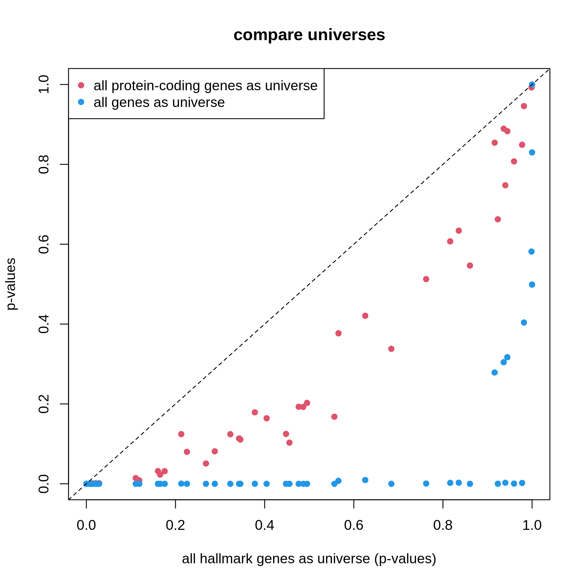
非常に明瞭な結果が得られます。ユニバースがより大規模になると、有意な遺伝子セットの数が増加し、潜在的な偽陽性が生じる可能性が高まります。 これは特にゲノム上の全遺伝子をユニバースとして使用する場合に顕著な問題となります。
本節での議論を踏まえ、ユニバースを使用する際の推奨事項は以下の通りです：
- タンパク質をコードする遺伝子を使用すること
- 測定された遺伝子を使用すること
- あるいはclusterProfilerの保守的な方法を採用すること
可視化機能
clusterProfilerでは、GSEAの結果に対してシンプルな可視化から複雑な可視化まで、豊富な可視化手法を提供しています。 複雑な可視化は視覚的には華やかですが、有用な情報をあまり伝達できず、非常に特殊な条件下でのみ使用すべきものです。 一方、シンプルなグラフの方が通常優れた結果をもたらします。 近年、clusterProfilerの可視化関連コードは新たにenrichplotパッケージに移行されました。 まずはenrichplotパッケージを読み込みましょう。 enrichplotがサポートするすべての可視化機能の詳細については、 https://yulab-smu.top/biomedical-knowledge-mining-book/enrichplot.html を参照してください。
まず、エンリッチメントテーブルを再生成します。
R
library(enrichplot)
resTimeGO = enrichGO(gene = timeDEgenes,
keyType = "SYMBOL",
ont = "BP",
OrgDb = org.Mm.eg.db,
pvalueCutoff = 1,
qvalueCutoff = 1)
resTimeGOTable = as.data.frame(resTimeGO)
head(resTimeGOTable)
OUTPUT
ID Description GeneRatio BgRatio RichFactor
GO:0050900 GO:0050900 leukocyte migration 50/965 408/28832 0.1225490
GO:0006935 GO:0006935 chemotaxis 54/965 475/28832 0.1136842
GO:0042330 GO:0042330 taxis 54/965 477/28832 0.1132075
GO:0030595 GO:0030595 leukocyte chemotaxis 35/965 242/28832 0.1446281
GO:0060326 GO:0060326 cell chemotaxis 41/965 337/28832 0.1216617
GO:0071674 GO:0071674 mononuclear cell migration 32/965 229/28832 0.1397380
FoldEnrichment zScore pvalue p.adjust qvalue
GO:0050900 3.661485 10.075346 2.751321e-15 1.053782e-11 7.745382e-12
GO:0006935 3.396625 9.800882 5.186751e-15 1.053782e-11 7.745382e-12
GO:0042330 3.382383 9.763475 6.190224e-15 1.053782e-11 7.745382e-12
GO:0030595 4.321158 9.654694 3.373742e-13 4.307425e-10 3.165991e-10
GO:0060326 3.634975 9.054313 1.137629e-12 1.161974e-09 8.540597e-10
GO:0071674 4.175053 8.976588 8.861995e-12 6.891923e-09 5.065617e-09
geneID
GO:0050900 Tnfsf18/Sell/Slamf9/Fut7/Itga4/Mdk/Grem1/Ada/Prex1/Edn3/P2ry12/Il12a/S100a8/S100a9/Nbl1/Padi2/Bst1/Cxcl5/Ppbp/Pf4/Cxcl1/Ptn/Alox5/Trpm4/Hsd3b7/Itgam/Adam8/Ascl2/Gdf15/Calr/Enpp1/Aire/Ccl2/Ccl7/Ccl5/Ccr7/Aoc3/Itgb3/Ccl28/Lgals3/Ptk2b/Emp2/Apod/Retnlg/Plg/Fpr2/Dusp1/Ager/Il33/Ch25h
GO:0006935 Tnfsf18/Sell/Slamf9/Mdk/Grem1/Prex1/Edn3/P2ry12/Il12a/S100a7a/S100a8/S100a9/Lpar1/Ptgr1/Nbl1/Padi2/Bst1/Cxcl5/Ppbp/Pf4/Cxcl1/Ptn/Alox5/Ntf3/Trpm4/Hsd3b7/Itgam/Adam8/Lsp1/Calr/Ccl17/Robo3/Cmtm7/Ccl2/Ccl7/Ccl5/Ccl6/Ccr7/Itgb3/Tubb2b/Ccl28/Lgals3/Cmtm5/Ptk2b/Nr4a1/Casr/Retnlg/Fpr2/Dusp1/Ager/Stx3/Ch25h/Plxnb3/Nox1
GO:0042330 Tnfsf18/Sell/Slamf9/Mdk/Grem1/Prex1/Edn3/P2ry12/Il12a/S100a7a/S100a8/S100a9/Lpar1/Ptgr1/Nbl1/Padi2/Bst1/Cxcl5/Ppbp/Pf4/Cxcl1/Ptn/Alox5/Ntf3/Trpm4/Hsd3b7/Itgam/Adam8/Lsp1/Calr/Ccl17/Robo3/Cmtm7/Ccl2/Ccl7/Ccl5/Ccl6/Ccr7/Itgb3/Tubb2b/Ccl28/Lgals3/Cmtm5/Ptk2b/Nr4a1/Casr/Retnlg/Fpr2/Dusp1/Ager/Stx3/Ch25h/Plxnb3/Nox1
GO:0030595 Tnfsf18/Sell/Slamf9/Mdk/Grem1/Prex1/Edn3/Il12a/S100a8/S100a9/Nbl1/Padi2/Bst1/Cxcl5/Ppbp/Pf4/Cxcl1/Ptn/Alox5/Trpm4/Hsd3b7/Itgam/Adam8/Calr/Ccl2/Ccl7/Ccl5/Ccr7/Ccl28/Lgals3/Ptk2b/Retnlg/Fpr2/Dusp1/Ch25h
GO:0060326 Tnfsf18/Sell/Slamf9/Mdk/Grem1/Prex1/Edn3/Il12a/S100a8/S100a9/Lpar1/Nbl1/Padi2/Bst1/Cxcl5/Ppbp/Pf4/Cxcl1/Ptn/Alox5/Trpm4/Hsd3b7/Itgam/Adam8/Calr/Ccl17/Ccl2/Ccl7/Ccl5/Ccl6/Ccr7/Ccl28/Lgals3/Ptk2b/Nr4a1/Retnlg/Fpr2/Dusp1/Ch25h/Plxnb3/Nox1
GO:0071674 Tnfsf18/Slamf9/Fut7/Itga4/Mdk/Grem1/P2ry12/Il12a/Nbl1/Padi2/Alox5/Trpm4/Hsd3b7/Adam8/Ascl2/Calr/Enpp1/Aire/Ccl2/Ccl7/Ccl5/Ccr7/Itgb3/Lgals3/Ptk2b/Apod/Retnlg/Plg/Fpr2/Dusp1/Ager/Ch25h
Count
GO:0050900 50
GO:0006935 54
GO:0042330 54
GO:0030595 35
GO:0060326 41
GO:0071674 32barplot()とdotplot()は、有意な遺伝子セット数が少ない場合にプロットを生成します。
これらの関数はenrichGO()関数が返すresTimeGOオブジェクトに直接適用されます。
R
barplot(resTimeGO, showCategory = 20)
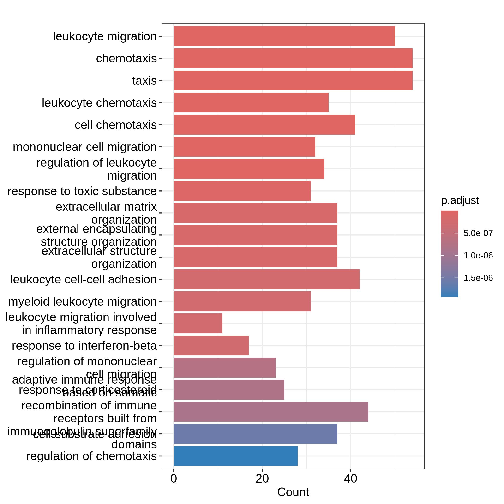
R
dotplot(resTimeGO, showCategory = 20)
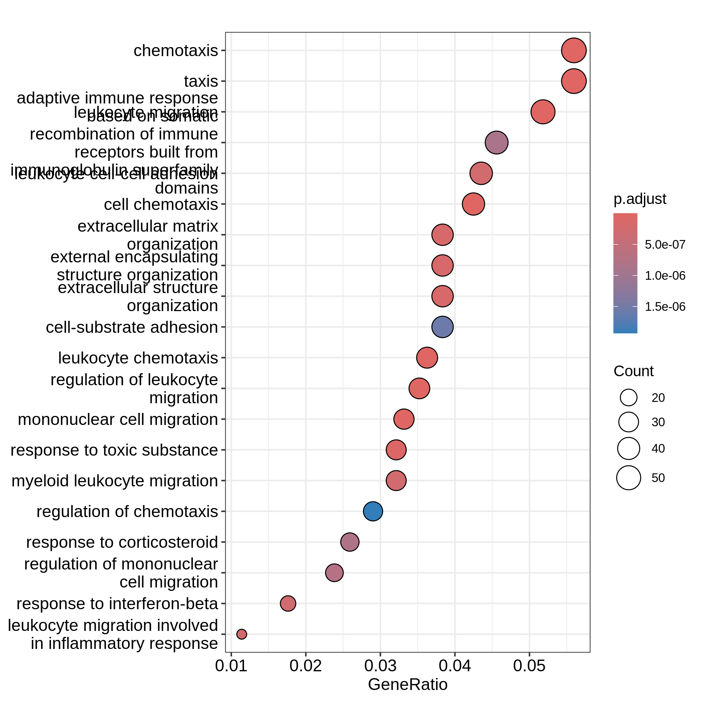
棒グラフでは2つの変数をプロットにマッピングできます。
一方は棒の高さに、他方は棒の色に対応します。
一方、ドットプロットではドットのサイズを第三の変数にマッピングできます。
変数名は結果テーブルの列名に対応しています。
どちらのプロットも上位20個の最も有意な用語を表示しています。
ドットプロットでは、用語はx軸の値（GeneRatio）に基づいて順序付けられています。
ここで「優れた可視化とは何か」について考察します。
本質的に重要な2つの問いは「・プロットは読者にどのような主要なメッセージを伝えようとしているか？」「・プロットの主要な視覚的要素は何か？」です。
棒グラフやドットプロットにおいて、読者が最も容易に認識する主要な視覚的要素は、棒の高さまたは原点からのドットのオフセットです。
ORA解析で最も重要なメッセージはもちろん「エンリッチメント」そのものです。
barplot()とdotplot()の2つの例では、この情報が読者に十分に伝達されていません。
"Count"をx軸の値として使用した最初の棒グラフでは、遺伝子セット内のDE遺伝子数がエンリッチメントの適切な指標とは言えません。
これは遺伝子セットのサイズと正の相関があるためです。
"Count"の値が高いからといって、その遺伝子セットがよりエンリッチされているとは限りません。
ドットプロットで"GeneRatio"をx軸の値として使用する場合も同様の問題があります。
"GeneRatio"は特定の遺伝子セットからのDE遺伝子数の割合として計算されます（GeneRatio = Count/Total_DE_Genes）。
ドットプロットでは複数の遺伝子セットを同一プロット上に表示し、それらの比較を目的としているため、遺伝子セット間の比較可能性を確保するために「スケーリング」が必要です。
"GeneRatio"は異なる遺伝子セット間でスケーリングされておらず、依然として遺伝子セットのサイズと正の相関があります。
ドットプロットで観察できるように、遺伝子比率が高いほどドットのサイズも大きくなります。
実際、"GeneRatio"は"Count"（GeneRatio = Count/Total_DE_Genes）と同一の効果を持つため、前述の説明と同様に、"GeneRatio"もエンリッチメントの適切な指標とは言えません。
それでは、ORAのエンリッチメントをより適切に示すための合理的な棒グラフとドットプロットを作成してみましょう。
まず、遺伝子セット内のDE遺伝子の「エンリッチメント」を測定するいくつかの指標を定義します。 2×2分割表の表記法を思い出してください（ここではその概念から遠く離れていますが！）。エンリッチメントテーブルからこれらの数値を取得します。
R
n_11 = resTimeGOTable$Count
n_10 = 983 # length(intersect(resTimeGO@gene, resTimeGO@universe))
n_01 = as.numeric(gsub("/.*$", "", resTimeGOTable$BgRatio))
n = 28943 # length(resTimeGO@universe)
GeneRatioの代わりに、遺伝子セット内のDE遺伝子の割合を使用します。
これはすべての遺伝子セットに対して「スケーリング」された値と言えます。これを計算しましょう：
R
resTimeGOTable$DE_Ratio = n_11/n_01
resTimeGOTable$GS_size = n_01 # 遺伝子セットのサイズ
直感的に、ある遺伝子セットのDE_Ratio値が高い場合、その遺伝子セットではDE遺伝子のエンリッチメントが高いと言えます7。
エンリッチメントを測定する方法は他に2つあります。まず、対数2倍エンリッチメントを以下のように定義します：
\[ \log_2(\mathrm{Fold\_enrichment}) = \frac{n_{11}/n_{10}}{n_{01}/n} = \frac{n_{11}/n_{01}}{n_{10}/n} = \frac{n_{11}n}{n_{10}n_{01}} \]
これは、遺伝子セット内の_DE%_とユニバース内の_DE%_の比率の対数2乗、あるいは_遺伝子セット%_のDE遺伝子数とユニバース内の_遺伝子セット%_の比率の対数2乗に相当します。これらは同一の値です。
R
resTimeGOTable$log2_Enrichment = log( (n_11/n_10)/(n_01/n) )
第二に、ハイパー幾何分布の平均値μと標準偏差σを用いて計算されるzスコアも一般的に使用されます：
\[ z = \frac{n_{11} - \mu}{\sigma} \]
ここでμとσはそれぞれハイパー幾何分布の平均値と標準偏差を表します。これらは以下の式で計算できます：
R
hyper_mean = n_01*n_10/n
n_02 = n - n_01
n_20 = n - n_10
hyper_var = n_01*n_10/n * n_20*n_02/n/(n-1)
resTimeGOTable$zScore = (n_11 - hyper_mean)/sqrt(hyper_var)
主な変数として対数2倍変化量を棒グラフの高さに、補助変数としてDE比を色のマッピングに使用します。これはggplot2パッケージを用いて直接実行可能です。また、棒グラフには調整済みp値をラベルとして追加します。
resTimeGOTableでは遺伝子セットが既に有意性順に並べ替えられているため、最も有意性の高い上位10個の遺伝子セットを選択します。
R
library(ggplot2)
ggplot(resTimeGOTable[1:10, ],
aes(x = log2_Enrichment, y = factor(Description, levels = rev(Description)),
fill = DE_Ratio)) +
geom_bar(stat = "identity") +
geom_text(aes(x = log2_Enrichment,
label = sprintf("%.2e", p.adjust)), hjust = 1, col = "white") +
ylab("")
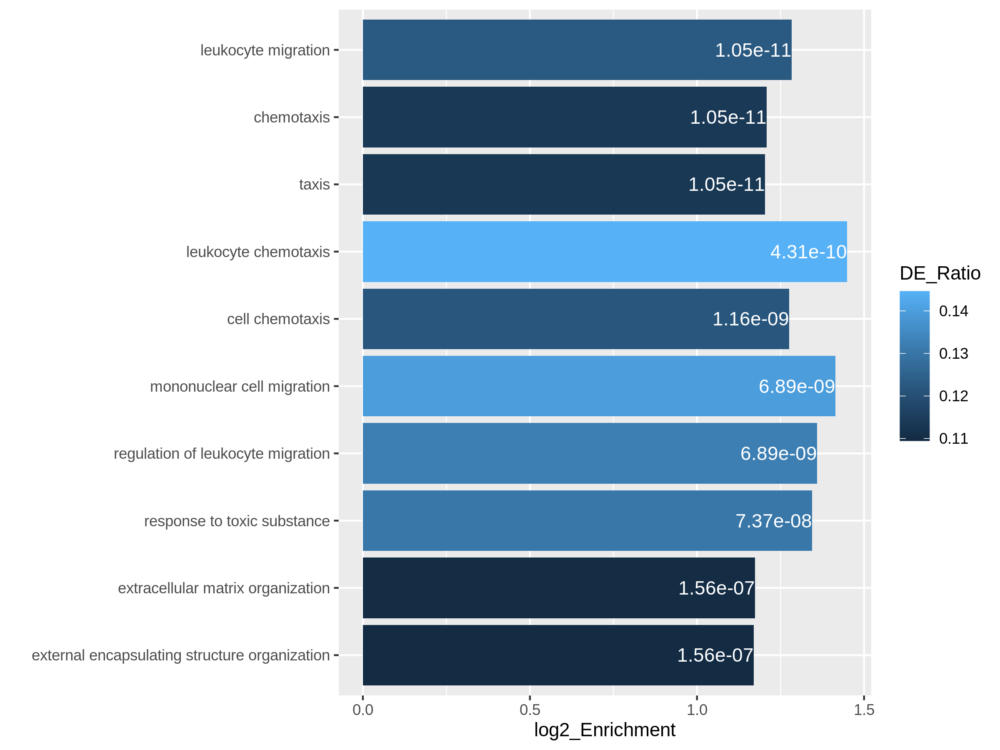
次の例では、zスコアを原点からのオフセットに、DE比とカウント値をドットの色とサイズにそれぞれマッピングしています。
R
ggplot(resTimeGOTable[1:10, ],
aes(x = zScore, y = factor(Description, levels = rev(Description)),
col = DE_Ratio, size = Count)) +
geom_point() +
ylab("")
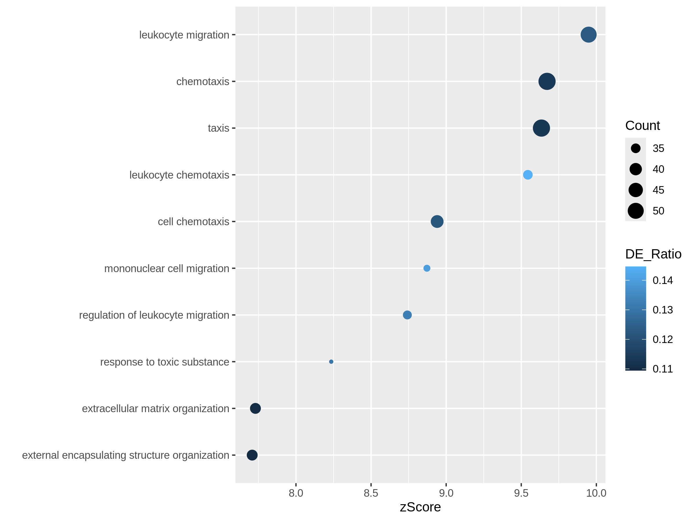
どちらのプロットでも、「炎症反応に関与する白血球遊走」という遺伝子セットは比較的小規模ながら高度に濃縮されていることが明らかになります。
もう一つの有用な可視化手法として火山プロットがあります。差異発現解析における火山プロットでは、x軸が差異発現の対数2倍変化量、y軸が調整済みp値に対応します。本ケースでも同様のアプローチを採用しており、x軸には対数2倍濃縮度を使用しています。
本分析では過剰表現のみを対象としているため、火山プロットは片側検定となります。対数2倍濃縮度と調整済みp値に対して2つの閾値を設定することで、右上領域に位置する遺伝子セットを、統計的に有意であると同時に生物学的にも意味のある結果と解釈できます。
R
ggplot(resTimeGOTable,
aes(x = log2_Enrichment, y = -log10(p.adjust),
color = DE_Ratio, size = GS_size)) +
geom_point() +
geom_hline(yintercept = -log10(0.01), lty = 2, col = "#444444") +
geom_vline(xintercept = 1.5, lty = 2, col = "#444444")
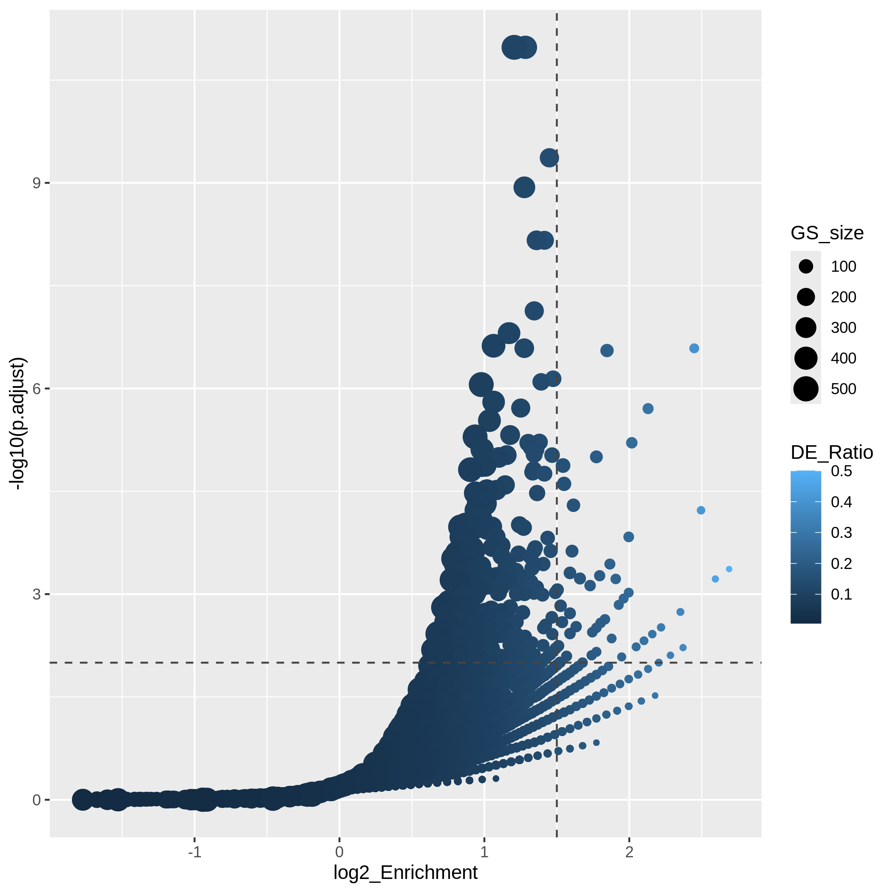
「火山プロット」では、複数の曲線から構成されるグラフが観察されます。特にプロット右下の領域でその傾向が明確に現れます。各「曲線」は同一の"Count"値（遺伝子セット内のDE遺伝子数）に対応しています。火山プロットは、濃縮度と遺伝子セットサイズの間に正の相関があることを非常に明確に示しています。すなわち、大規模な遺伝子セットは小さなDE比と小さな対数2倍濃縮度でも容易に小さなp値を達成できるのに対し、小規模な遺伝子セットでは有意な結果を得るためにより大きなDE比が必要となることを示しています。
また、一般的にアップレギュレーションされた遺伝子とダウンレギュレーションされた遺伝子に対してORA解析を個別に実施し、これら2つのORA解析から得られた有意な遺伝子セットを1つのプロットに統合したい場合があります。以下のコードでは、まずアップレギュレーション遺伝子とダウンレギュレーション遺伝子に対してそれぞれ独立した濃縮度テーブルを生成します。
R
# up-regulated genes
timeDEup <- as.data.frame(subset(resTime, padj < 0.05 & log2FoldChange > log2(1.5)))
timeDEupGenes <- rownames(timeDEup)
resTimeGOup = enrichGO(gene = timeDEupGenes,
keyType = "SYMBOL",
ont = "BP",
OrgDb = org.Mm.eg.db,
universe = rownames(se),
pvalueCutoff = 1,
qvalueCutoff = 1)
resTimeGOupTable = as.data.frame(resTimeGOup)
n_11 = resTimeGOupTable$Count
n_10 = length(intersect(resTimeGOup@gene, resTimeGOup@universe))
n_01 = as.numeric(gsub("/.*$", "", resTimeGOupTable$BgRatio))
n = length(resTimeGOup@universe)
resTimeGOupTable$log2_Enrichment = log( (n_11/n_10)/(n_01/n) )
# down-regulated genes
timeDEdown <- as.data.frame(subset(resTime, padj < 0.05 & log2FoldChange < -log2(1.5)))
timeDEdownGenes <- rownames(timeDEdown)
resTimeGOdown = enrichGO(gene = timeDEdownGenes,
keyType = "SYMBOL",
ont = "BP",
OrgDb = org.Mm.eg.db,
universe = rownames(se),
pvalueCutoff = 1,
qvalueCutoff = 1)
resTimeGOdownTable = as.data.frame(resTimeGOdown)
n_11 = resTimeGOdownTable$Count
n_10 = length(intersect(resTimeGOdown@gene, resTimeGOdown@universe))
n_01 = as.numeric(gsub("/.*$", "", resTimeGOdownTable$BgRatio))
n = length(resTimeGOdown@universe)
resTimeGOdownTable$log2_Enrichment = log( (n_11/n_10)/(n_01/n) )
具体例として、発現量が上昇した遺伝子については上位5つの最も有意な用語を、発現量が低下した遺伝子については上位5つの最も有意な用語を取り上げます。以下のggplot2コードは容易に理解できる内容となっています。
R
# 3番目の用語名が長すぎるため、2行に分けて表示します
resTimeGOupTable[3, "Description"] = paste(strwrap(resTimeGOupTable[3, "Description"]), collapse = "\n")
direction = c(rep("up", 5), rep("down", 5))
ggplot(rbind(resTimeGOupTable[1:5, ],
resTimeGOdownTable[1:5, ]),
aes(x = log2_Enrichment, y = factor(Description, levels = rev(Description)),
fill = direction)) +
geom_bar(stat = "identity") +
scale_fill_manual(values = c("up" = "red", "down" = "darkgreen")) +
geom_text(aes(x = log2_Enrichment,
label = sprintf("%.2e", p.adjust)), hjust = 1, col = "white") +
ylab("")
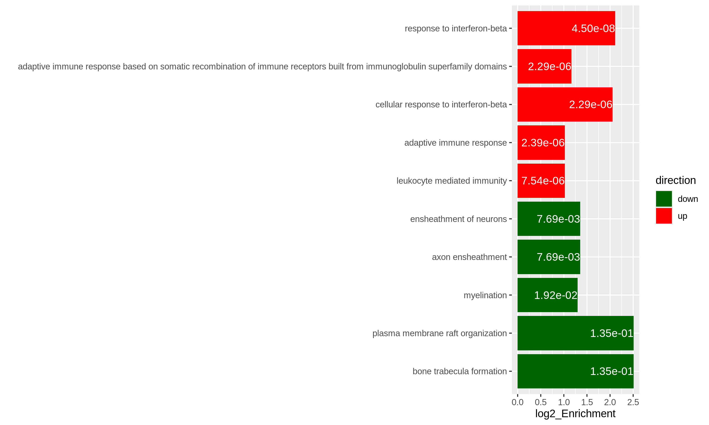
GOエンリッチメント分析においては、GOエンリッチメント解析から数百もの有意なGO用語が出力されることがよくあります。このような長いリストから共通する機能を要約するのは困難です。ここで紹介する最後のパッケージはsimplifyEnrichmentパッケージです。このパッケージでは、GO用語を意味的類似性に基づいてクラスタリング8し、ワードクラウドを用いてそれらの共通機能を要約します。
simplifyGO()関数の入力はGO
IDのベクトルです。要約と可視化を行うには、少なくとも100個のGO
IDを用意することをお勧めします。
R
GO_ID = resTimeGOTable$ID[resTimeGOTable$p.adjust < 0.1]
library(simplifyEnrichment)
simplifyGO(GO_ID)
関連文献
ORA解析では、実際に遺伝子に対して二値化処理を行います。カットオフ値を超えた遺伝子は1（発現変動遺伝子）として設定され、それ以外の遺伝子は0（非発現変動遺伝子）として処理されます。この二値化処理は問題を過度に単純化するため、多くの情報が失われることになります。これに対し、連続値の遺伝子レベルスコアを入力として扱い、遺伝子セット内における各遺伝子の重要度を重み付けする第二のクラスの遺伝子セットエンリッチメント解析手法が存在します。詳細については、Subramanianらによる『遺伝子セットエンリッチメント解析：ゲノムワイド発現プロファイルを解釈するための知識ベースアプローチ』PNAS 2005を参照してください。
- ORA解析は遺伝子カウントデータに基づいており、Fisherの正確確率検定または超幾何分布を用いて統計的有意性を評価します。
- R環境では、多様なソースから容易に遺伝子セットを取得することが可能です。
各ベクトル内の遺伝子は一意である必要があります↩︎
なお、
phyper()はベクトル化処理にも対応しています↩︎この定義はWikipediaの「生物学的経路」の項目に基づいています: https://en.wikipedia.org/wiki/Biological_pathway↩︎
この問題を回避するため、コード内では
as.data.frame()関数を使用して実際のデータフレームresTimeGOTableに変換しています↩︎これは厳密には正しくありません。実際には
as.data.frame(resTimeGO)は有意なGOタームのみを返しますが、完全なエンリッチメントテーブル自体はresTimeGO@resultに保持されています。ただし、S4オブジェクトのスロットを直接参照することは推奨されません↩︎select()関数を使用することもできます：select(org.Mm.eg.db, keys = timeDEgenes, keytype = "SYMBOL", column = "ENTREZID")↩︎ここで「エンリッチメント」という用語が統計学的な意味を持つ場合に限ります。↩︎
GO用語間の意味的類似性は、GO階層構造におけるトポロジカルな関係を考慮して算出されます↩︎
Content from Next steps
Last updated on 2025-09-23 | Edit this page
Estimated time 20 minutes
Overview
Questions
- How to go further from here?
- What other types of analyses can be done with RNA-seq data?
Objectives
- Get an overview of usages of RNA-seq data that are not covered in this workshop.
Transcript-level analyses
The analyses covered in this workshop all assumed that we have generated a matrix with read counts for each gene. Some questions, however, require expression estimates on a more fine-grained level, typically individual transcript isoforms. This is the case, for example, if we would like to look for differences in expression of individual isoforms, or changes in splicing patterns induced by a specific treatment. As already mentioned in episode 1, some quantification tools (such as Salmon, kallisto and RSEM) do in fact estimate abundances on the transcript level. To perform transcript-level differential expression analysis, these estimates would be used directly, without aggregating them on the gene level. Some caution is warranted, however, as expression estimates for individual transcripts are often more noisy than after aggregation to the gene level. This is due to the high similarity often observed between different isoforms of a gene, which leads to higher uncertainty when mapping reads to transcripts. For this reason, several approaches have been developed specifically for performing differential expression analysis on the transcript level [@Zhu2019-swish, @Baldoni2023-catchsalmon].
Analysis of differential splicing, or differential transcript usage, differs from the differential expression analyses mentioned so far as it is concerned with changes in the relative abundances of the transcripts of a gene. Hence, considering the transcripts in isolation is no longer sufficient. A good resource for learning more about differential transcript usage with Bioconductor is provided by @Love2018-swimming.
De novo transcript assembly
In this lesson, we have assumed that we are working with a well-annotated transcriptome, that is, that we know the sequence of all expressed isoforms and how they are grouped together into genes. Depending on the organism or disease type we are interested in, this may or may not be a reasonable assumption. In situations where we do not believe that the annotated transcriptome is complete enough, we can use the RNA-seq data to assemble transcripts and create a custom annotation. This assembly can be performed either guided by a genome sequence (if one is available), or completely de novo. It should be noted that transcript assembly is a challenging task, which requires a deeply sequenced library to get the best results. In addition, data from more recent long-read sequencing technologies can be very helpful, as they are in principle able to sequence entire transcript molecules, thus circumventing the need for assembly. Methods for transcript assembly represent an active area of research. Recent review are provided e.g. by @Raghavan2022-denovo and @Amarasinghe2020-longread.
- RNA-seq data is very versatile and can be used for a number of different purposes. It is important, however, to carefully plan one’s analyses, to make sure that enough data is available and that abundances for appropriate features (e.g., genes, transcripts, or exons) are quantified.